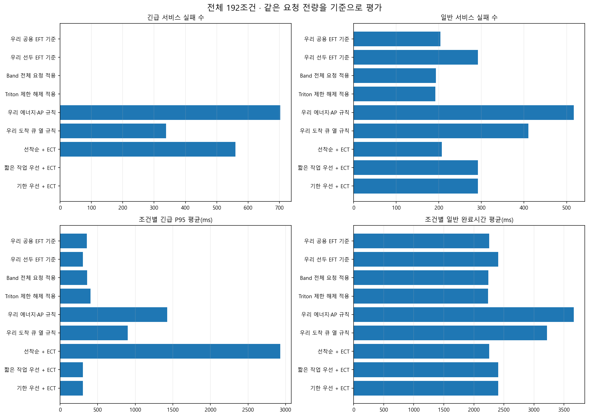
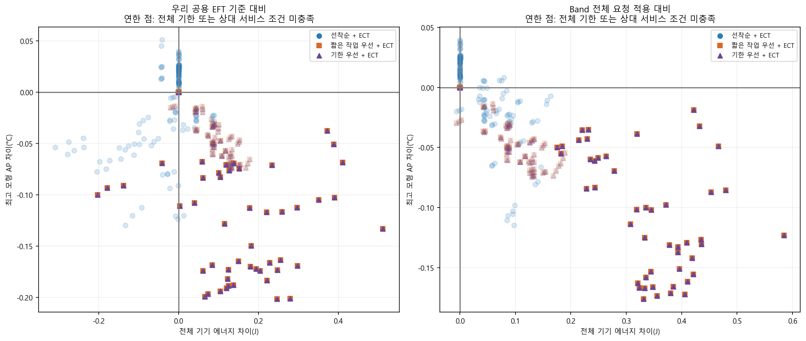
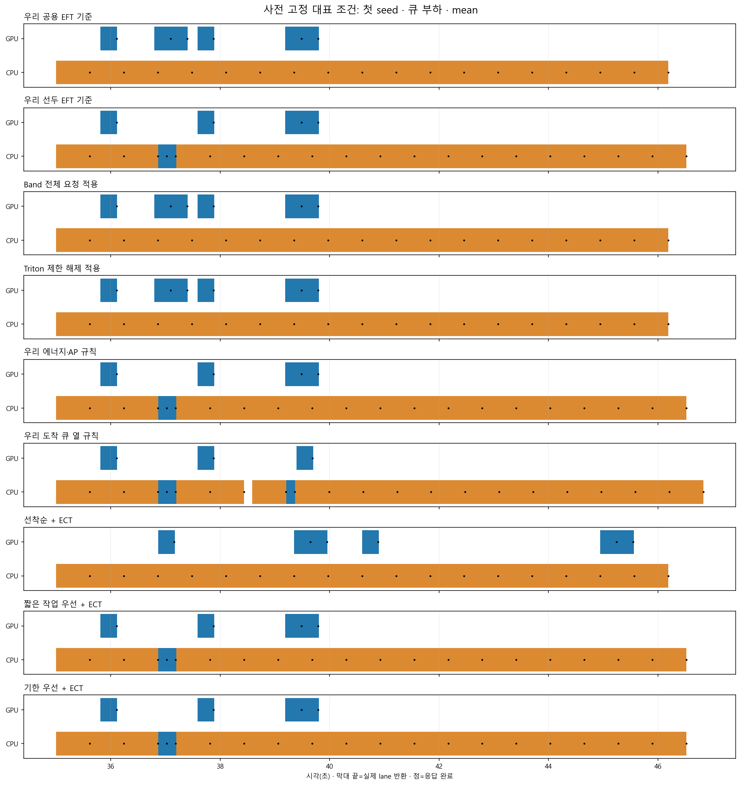
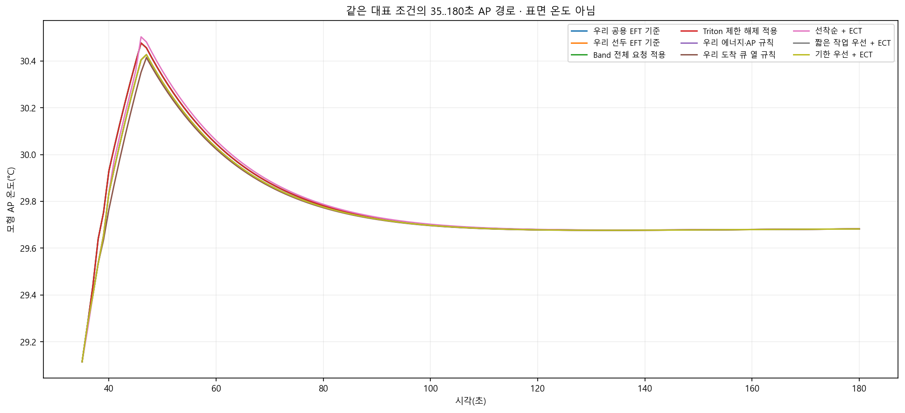
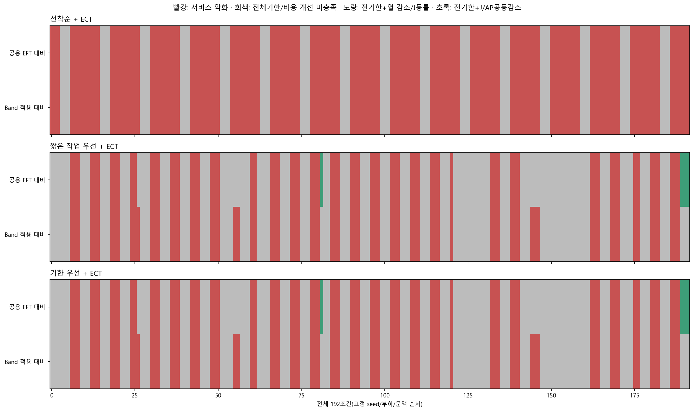

완료된 192조건 × 9정책 = 1,728행. 새 규칙 576실행 + 기존 완료 결과 1,152행 재사용. 튜닝·RL학습·기기 실행 0회. 이미 본 합성 조건의 진단 비교이며 독립 확인이 아니다.
ECT는 자원 선택, FIFO/SPT/EDD는 요청 순서다. ECT는 전체 5단계의 lane 반환을 최소화한다. 긴급 응답은 OUTPUT_READY, 일반 완료는 PERSISTED에서 별도로 측정한다. 원 제조 알고리즘·현업 제품 전체의 실행 결과가 아니다.
FIFO=도착순 · SPT=지원 자원 중 최소 mean 전체 점유시간순 · EDD=절대 응답 기한순. 세 정책은 동일 ECT 자원 선택을 사용한다. 원 출처·동점·대기·변경 범위는 대응표, 수치는 전체 CSV와 모든 쌍에 보존한다.
| 정책 | 조건 | 예정 | 완료 | 미완료 | 긴급 실패 | 일반 실패 | 전기한 충족 조건 | 긴급 P95 평균(ms) | 일반 평균(ms) |
|---|---|---|---|---|---|---|---|---|---|
| 우리 공용 EFT 기준 | 192 | 12672 | 12672 | 0 | 0 | 204 | 96 | 354.4456 | 2253.3734 |
| 우리 선두 EFT 기준 | 192 | 12672 | 12672 | 0 | 0 | 292 | 96 | 304.4900 | 2404.0087 |
| Band 전체 요청 적용 | 192 | 12672 | 12672 | 0 | 0 | 193 | 96 | 360.3448 | 2240.7654 |
| Triton 제한 해제 적용 | 192 | 12672 | 12672 | 0 | 0 | 192 | 96 | 404.3970 | 2236.6926 |
| 우리 에너지·AP 규칙 | 192 | 12672 | 12672 | 0 | 703 | 517 | 48 | 1423.2816 | 3663.3418 |
| 우리 도착 큐 열 규칙 | 192 | 12672 | 12672 | 0 | 338 | 410 | 54 | 901.7734 | 3217.4212 |
| 선착순 + ECT | 192 | 12672 | 12672 | 0 | 560 | 207 | 63 | 2929.8910 | 2257.4679 |
| 짧은 작업 우선 + ECT | 192 | 12672 | 12672 | 0 | 0 | 292 | 96 | 304.4893 | 2404.3727 |
| 기한 우선 + ECT | 192 | 12672 | 12672 | 0 | 0 | 292 | 96 | 304.4893 | 2404.3727 |
전량 완료·긴급/일반 실패 비증가·긴급 P95 비악화를 먼저 확인한다. 비용 감소만으로 성공 처리하지 않는다. 평균 차이는 조건별 차이 평균이며 미적격 조건도 포함한 원 수치를 표시한다.
| 정책 | 기준 | 조건 | 서비스 유지 | J/AP공동감소 | J차이 평균 | AP차이 평균 | 긴급P95차이 평균(ms) |
|---|---|---|---|---|---|---|---|
| 선착순 + ECT | 우리 공용 EFT 기준 | 96 | 48 | 0 | -0.0453 | -0.0297 | 556.7536 |
| 선착순 + ECT | Band 전체 요청 적용 | 96 | 48 | 0 | 0.0435 | -0.0174 | 556.7536 |
| 짧은 작업 우선 + ECT | 우리 공용 EFT 기준 | 96 | 96 | 4 | 0.0810 | -0.0653 | 0.0000 |
| 짧은 작업 우선 + ECT | Band 전체 요청 적용 | 96 | 96 | 0 | 0.1698 | -0.0530 | 0.0000 |
| 기한 우선 + ECT | 우리 공용 EFT 기준 | 96 | 96 | 4 | 0.0810 | -0.0653 | 0.0000 |
| 기한 우선 + ECT | Band 전체 요청 적용 | 96 | 96 | 0 | 0.1698 | -0.0530 | 0.0000 |
전체192에서 Band 대비 상대적 공동감소 1조건은 양쪽 일반 기한 위반이 남아 있다. 모든 실제 기한 충족까지 요구한 공동감소는0이다. CSV는 상대적 service_preserved/joint_gain과 절대 all_deadlines_met/joint_gain_all_deadlines를 나누어 보존한다.
J는 같은0..120초 기기 전체 모형 에너지, AP는35..180초1초격자 모형 온도다. 안전 온도 한도·표면 온도·미지원 자원은 계산 불가. 실제 열·에너지 절감/제품 우월성/기본 정책 채택은 미입증이다. 차등 제어비용0은 모형 가정이며 host시간은 휴대폰 비용이 아니다.





| seed | family | context | policy | planned | completed | urgent_service_failure | normal_service_failure | urgent_p95_ms | normal_mean_ms | energy_j | peak_ap_c |
|---|---|---|---|---|---|---|---|---|---|---|---|
| 610880001 | low | mean | 우리 공용 EFT 기준 | 24 | 24 | 0 | 0 | 156.1799 | 619.4714 | 142.1235 | 30.1969 |
| 610880001 | low | mean | 우리 선두 EFT 기준 | 24 | 24 | 0 | 0 | 156.1799 | 619.4714 | 142.1235 | 30.1969 |
| 610880001 | low | mean | Band 전체 요청 적용 | 24 | 24 | 0 | 0 | 156.1799 | 619.4714 | 142.1235 | 30.1969 |
| 610880001 | low | mean | Triton 제한 해제 적용 | 24 | 24 | 0 | 0 | 294.0546 | 619.4714 | 142.4090 | 30.2467 |
| 610880001 | low | mean | 우리 에너지·AP 규칙 | 24 | 24 | 0 | 0 | 1338.1633 | 1955.1617 | 142.1235 | 30.1990 |
| 610880001 | low | mean | 우리 도착 큐 열 규칙 | 24 | 24 | 0 | 0 | 156.1799 | 874.1141 | 142.1235 | 30.2021 |
| 610880001 | low | mean | 선착순 + ECT | 24 | 24 | 0 | 0 | 156.1799 | 619.4714 | 142.1235 | 30.1969 |
| 610880001 | low | mean | 짧은 작업 우선 + ECT | 24 | 24 | 0 | 0 | 156.1799 | 619.4714 | 142.1235 | 30.1969 |
| 610880001 | low | mean | 기한 우선 + ECT | 24 | 24 | 0 | 0 | 156.1799 | 619.4714 | 142.1235 | 30.1969 |
| 610880001 | low | short_context | 우리 공용 EFT 기준 | 24 | 24 | 0 | 0 | 156.1799 | 618.7909 | 142.1142 | 30.1960 |
| 610880001 | low | short_context | 우리 선두 EFT 기준 | 24 | 24 | 0 | 0 | 156.1799 | 618.7909 | 142.1142 | 30.1960 |
| 610880001 | low | short_context | Band 전체 요청 적용 | 24 | 24 | 0 | 0 | 156.1799 | 618.7909 | 142.1142 | 30.1960 |
| 610880001 | low | short_context | Triton 제한 해제 적용 | 24 | 24 | 0 | 0 | 286.6085 | 618.7909 | 142.3778 | 30.2445 |
| 610880001 | low | short_context | 우리 에너지·AP 규칙 | 24 | 24 | 0 | 0 | 1338.1633 | 1940.5923 | 142.1142 | 30.1978 |
| 610880001 | low | short_context | 우리 도착 큐 열 규칙 | 24 | 24 | 0 | 0 | 156.1799 | 859.3839 | 142.1142 | 30.2008 |
| 610880001 | low | short_context | 선착순 + ECT | 24 | 24 | 0 | 0 | 156.1799 | 618.7909 | 142.1142 | 30.1960 |
| 610880001 | low | short_context | 짧은 작업 우선 + ECT | 24 | 24 | 0 | 0 | 156.1799 | 618.7909 | 142.1142 | 30.1960 |
| 610880001 | low | short_context | 기한 우선 + ECT | 24 | 24 | 0 | 0 | 156.1799 | 618.7909 | 142.1142 | 30.1960 |
| 610880001 | low | long_context | 우리 공용 EFT 기준 | 24 | 24 | 0 | 0 | 156.1799 | 620.1517 | 142.1322 | 30.1977 |
| 610880001 | low | long_context | 우리 선두 EFT 기준 | 24 | 24 | 0 | 0 | 156.1799 | 620.1517 | 142.1322 | 30.1977 |
| 610880001 | low | long_context | Band 전체 요청 적용 | 24 | 24 | 0 | 0 | 156.1799 | 620.1517 | 142.1322 | 30.1977 |
| 610880001 | low | long_context | Triton 제한 해제 적용 | 24 | 24 | 0 | 0 | 301.5008 | 620.1517 | 142.4397 | 30.2489 |
| 610880001 | low | long_context | 우리 에너지·AP 규칙 | 24 | 24 | 0 | 0 | 1338.1633 | 1955.8420 | 142.1322 | 30.1998 |
| 610880001 | low | long_context | 우리 도착 큐 열 규칙 | 24 | 24 | 0 | 0 | 156.1799 | 874.9464 | 142.1322 | 30.2030 |
| 610880001 | low | long_context | 선착순 + ECT | 24 | 24 | 0 | 0 | 156.1799 | 620.1517 | 142.1322 | 30.1977 |
| 610880001 | low | long_context | 짧은 작업 우선 + ECT | 24 | 24 | 0 | 0 | 156.1799 | 620.1517 | 142.1322 | 30.1977 |
| 610880001 | low | long_context | 기한 우선 + ECT | 24 | 24 | 0 | 0 | 156.1799 | 620.1517 | 142.1322 | 30.1977 |
| 610880001 | queue | mean | 우리 공용 EFT 기준 | 24 | 24 | 0 | 3 | 408.2523 | 3720.3972 | 141.8640 | 30.4768 |
| 610880001 | queue | mean | 우리 선두 EFT 기준 | 24 | 24 | 0 | 4 | 396.1847 | 3995.7577 | 141.9505 | 30.4271 |
| 610880001 | queue | mean | Band 전체 요청 적용 | 24 | 24 | 0 | 3 | 408.2523 | 3720.3972 | 141.8640 | 30.4768 |
| 610880001 | queue | mean | Triton 제한 해제 적용 | 24 | 24 | 0 | 3 | 408.2523 | 3720.3972 | 141.8640 | 30.4768 |
| 610880001 | queue | mean | 우리 에너지·AP 규칙 | 24 | 24 | 0 | 4 | 396.1847 | 3995.7577 | 141.9505 | 30.4271 |
| 610880001 | queue | mean | 우리 도착 큐 열 규칙 | 24 | 24 | 0 | 4 | 294.0546 | 4210.5887 | 141.9937 | 30.4146 |
| 610880001 | queue | mean | 선착순 + ECT | 24 | 24 | 5 | 3 | 6152.4172 | 3720.3972 | 141.8640 | 30.5031 |
| 610880001 | queue | mean | 짧은 작업 우선 + ECT | 24 | 24 | 0 | 4 | 396.1847 | 3995.7577 | 141.9505 | 30.4271 |
| 610880001 | queue | mean | 기한 우선 + ECT | 24 | 24 | 0 | 4 | 396.1847 | 3995.7577 | 141.9505 | 30.4271 |
| 610880001 | queue | short_context | 우리 공용 EFT 기준 | 24 | 24 | 0 | 3 | 393.0828 | 3713.5701 | 141.8466 | 30.4731 |
| 610880001 | queue | short_context | 우리 선두 EFT 기준 | 24 | 24 | 0 | 4 | 381.0152 | 3988.9305 | 141.9358 | 30.4231 |
| 610880001 | queue | short_context | Band 전체 요청 적용 | 24 | 24 | 0 | 3 | 393.0828 | 3713.5701 | 141.8466 | 30.4731 |
| 610880001 | queue | short_context | Triton 제한 해제 적용 | 24 | 24 | 0 | 3 | 393.0828 | 3713.5701 | 141.8466 | 30.4731 |
| 610880001 | queue | short_context | 우리 에너지·AP 규칙 | 24 | 24 | 0 | 4 | 381.0152 | 3988.9305 | 141.9358 | 30.4231 |
| 610880001 | queue | short_context | 우리 도착 큐 열 규칙 | 24 | 24 | 0 | 4 | 286.6085 | 4206.3728 | 141.9804 | 30.4114 |
| 610880001 | queue | short_context | 선착순 + ECT | 24 | 24 | 5 | 3 | 6125.6775 | 3713.5701 | 141.8466 | 30.4987 |
| 610880001 | queue | short_context | 짧은 작업 우선 + ECT | 24 | 24 | 0 | 4 | 381.0152 | 3988.9305 | 141.9358 | 30.4231 |
| 610880001 | queue | short_context | 기한 우선 + ECT | 24 | 24 | 0 | 4 | 381.0152 | 3988.9305 | 141.9358 | 30.4231 |
| 610880001 | queue | long_context | 우리 공용 EFT 기준 | 24 | 24 | 0 | 3 | 423.4218 | 3726.8969 | 141.8809 | 30.4806 |
| 610880001 | queue | long_context | 우리 선두 EFT 기준 | 24 | 24 | 0 | 4 | 411.3542 | 4002.2574 | 141.9647 | 30.4310 |
| 610880001 | queue | long_context | Band 전체 요청 적용 | 24 | 24 | 0 | 3 | 423.4218 | 3726.8969 | 141.8809 | 30.4806 |
| 610880001 | queue | long_context | Triton 제한 해제 적용 | 24 | 24 | 0 | 3 | 423.4218 | 3726.8969 | 141.8809 | 30.4806 |
| 610880001 | queue | long_context | 우리 에너지·AP 규칙 | 24 | 24 | 0 | 4 | 411.3542 | 4002.2574 | 141.9647 | 30.4310 |
| 610880001 | queue | long_context | 우리 도착 큐 열 규칙 | 24 | 24 | 0 | 4 | 301.5008 | 4214.6161 | 142.0066 | 30.4178 |
| 610880001 | queue | long_context | 선착순 + ECT | 24 | 24 | 5 | 3 | 6181.2252 | 3728.5373 | 141.8825 | 30.5068 |
| 610880001 | queue | long_context | 짧은 작업 우선 + ECT | 24 | 24 | 0 | 4 | 411.3542 | 4002.2574 | 141.9647 | 30.4310 |
| 610880001 | queue | long_context | 기한 우선 + ECT | 24 | 24 | 0 | 4 | 411.3542 | 4002.2574 | 141.9647 | 30.4310 |
| 610880001 | burst | mean | 우리 공용 EFT 기준 | 24 | 24 | 0 | 1 | 519.7569 | 3229.2219 | 141.8640 | 30.4704 |
| 610880001 | burst | mean | 우리 선두 EFT 기준 | 24 | 24 | 0 | 1 | 519.7569 | 3229.2219 | 141.8640 | 30.4704 |
| 610880001 | burst | mean | Band 전체 요청 적용 | 24 | 24 | 0 | 1 | 519.7569 | 3229.2219 | 141.8640 | 30.4704 |
| 610880001 | burst | mean | Triton 제한 해제 적용 | 24 | 24 | 0 | 1 | 519.7569 | 3229.2219 | 141.8640 | 30.4704 |
| 610880001 | burst | mean | 우리 에너지·AP 규칙 | 24 | 24 | 0 | 4 | 1061.8877 | 4554.6927 | 141.9505 | 30.4317 |
| 610880001 | burst | mean | 우리 도착 큐 열 규칙 | 24 | 24 | 0 | 4 | 519.7569 | 4345.3745 | 141.9072 | 30.4430 |
| 610880001 | burst | mean | 선착순 + ECT | 24 | 24 | 3 | 1 | 3231.0461 | 3229.2219 | 141.8640 | 30.4798 |
| 610880001 | burst | mean | 짧은 작업 우선 + ECT | 24 | 24 | 0 | 1 | 519.7569 | 3229.2219 | 141.8640 | 30.4704 |
| 610880001 | burst | mean | 기한 우선 + ECT | 24 | 24 | 0 | 1 | 519.7569 | 3229.2219 | 141.8640 | 30.4704 |
| 610880001 | burst | short_context | 우리 공용 EFT 기준 | 24 | 24 | 0 | 1 | 504.5874 | 3222.3948 | 141.8466 | 30.4669 |
| 610880001 | burst | short_context | 우리 선두 EFT 기준 | 24 | 24 | 0 | 1 | 504.5874 | 3222.3948 | 141.8466 | 30.4669 |
| 610880001 | burst | short_context | Band 전체 요청 적용 | 24 | 24 | 0 | 1 | 504.5874 | 3222.3948 | 141.8466 | 30.4669 |
| 610880001 | burst | short_context | Triton 제한 해제 적용 | 24 | 24 | 0 | 1 | 504.5874 | 3222.3948 | 141.8466 | 30.4669 |
| 610880001 | burst | short_context | 우리 에너지·AP 규칙 | 24 | 24 | 0 | 4 | 1061.8877 | 4550.1153 | 141.9358 | 30.4281 |
| 610880001 | burst | short_context | 우리 도착 큐 열 규칙 | 24 | 24 | 0 | 4 | 504.5874 | 4341.3194 | 141.8912 | 30.4389 |
| 610880001 | burst | short_context | 선착순 + ECT | 24 | 24 | 3 | 1 | 3216.3686 | 3222.3948 | 141.8466 | 30.4760 |
| 610880001 | burst | short_context | 짧은 작업 우선 + ECT | 24 | 24 | 0 | 1 | 504.5874 | 3222.3948 | 141.8466 | 30.4669 |
| 610880001 | burst | short_context | 기한 우선 + ECT | 24 | 24 | 0 | 1 | 504.5874 | 3222.3948 | 141.8466 | 30.4669 |
| 610880001 | burst | long_context | 우리 공용 EFT 기준 | 24 | 24 | 0 | 1 | 534.9264 | 3235.7217 | 141.8809 | 30.4740 |
| 610880001 | burst | long_context | 우리 선두 EFT 기준 | 24 | 24 | 0 | 1 | 534.9264 | 3235.7217 | 141.8809 | 30.4740 |
| 610880001 | burst | long_context | Band 전체 요청 적용 | 24 | 24 | 0 | 1 | 534.9264 | 3235.7217 | 141.8809 | 30.4740 |
| 610880001 | burst | long_context | Triton 제한 해제 적용 | 24 | 24 | 0 | 1 | 534.9264 | 3235.7217 | 141.8809 | 30.4740 |
| 610880001 | burst | long_context | 우리 에너지·AP 규칙 | 24 | 24 | 0 | 4 | 1061.8877 | 4588.4432 | 142.0066 | 30.4154 |
| 610880001 | burst | long_context | 우리 도착 큐 열 규칙 | 24 | 24 | 0 | 3 | 534.9264 | 3941.6313 | 141.9228 | 30.4502 |
| 610880001 | burst | long_context | 선착순 + ECT | 24 | 24 | 3 | 1 | 3248.0229 | 3237.2129 | 141.8817 | 30.4833 |
| 610880001 | burst | long_context | 짧은 작업 우선 + ECT | 24 | 24 | 0 | 1 | 534.9264 | 3235.7217 | 141.8809 | 30.4740 |
| 610880001 | burst | long_context | 기한 우선 + ECT | 24 | 24 | 0 | 1 | 534.9264 | 3235.7217 | 141.8809 | 30.4740 |
| 610880001 | sustained | mean | 우리 공용 EFT 기준 | 192 | 192 | 0 | 0 | 294.0546 | 933.4197 | 183.4717 | 32.4777 |
| 610880001 | sustained | mean | 우리 선두 EFT 기준 | 192 | 192 | 0 | 0 | 294.0546 | 1030.9766 | 183.5764 | 32.2840 |
| 610880001 | sustained | mean | Band 전체 요청 적용 | 192 | 192 | 0 | 0 | 294.0546 | 933.4197 | 183.2407 | 32.4422 |
| 610880001 | sustained | mean | Triton 제한 해제 적용 | 192 | 192 | 0 | 0 | 294.0546 | 933.4197 | 184.9470 | 32.5561 |
| 610880001 | sustained | mean | 우리 에너지·AP 규칙 | 192 | 192 | 29 | 20 | 4649.8600 | 4989.4890 | 182.7519 | 32.0315 |
| 610880001 | sustained | mean | 우리 도착 큐 열 규칙 | 192 | 192 | 2 | 0 | 1382.1105 | 3629.4281 | 182.9018 | 32.3649 |
| 610880001 | sustained | mean | 선착순 + ECT | 192 | 192 | 1 | 0 | 1192.4640 | 973.8266 | 183.2989 | 32.4113 |
| 610880001 | sustained | mean | 짧은 작업 우선 + ECT | 192 | 192 | 0 | 0 | 294.0546 | 1030.9766 | 183.5764 | 32.2840 |
| 610880001 | sustained | mean | 기한 우선 + ECT | 192 | 192 | 0 | 0 | 294.0546 | 1030.9766 | 183.5764 | 32.2840 |
| 610880001 | sustained | short_context | 우리 공용 EFT 기준 | 192 | 192 | 0 | 0 | 286.6085 | 930.3212 | 183.2949 | 32.4586 |
| 610880001 | sustained | short_context | 우리 선두 EFT 기준 | 192 | 192 | 0 | 0 | 286.6085 | 1026.9666 | 183.4318 | 32.2708 |
| 610880001 | sustained | short_context | Band 전체 요청 적용 | 192 | 192 | 0 | 0 | 286.6085 | 930.3212 | 183.0876 | 32.4239 |
| 610880001 | sustained | short_context | Triton 제한 해제 적용 | 192 | 192 | 0 | 0 | 286.6085 | 930.3212 | 184.6571 | 32.5348 |
| 610880001 | sustained | short_context | 우리 에너지·AP 규칙 | 192 | 192 | 27 | 20 | 4656.3439 | 4949.4827 | 182.6991 | 32.0020 |
| 610880001 | sustained | short_context | 우리 도착 큐 열 규칙 | 192 | 192 | 2 | 0 | 1385.4300 | 3617.2160 | 182.7437 | 32.3455 |
| 610880001 | sustained | short_context | 선착순 + ECT | 192 | 192 | 0 | 0 | 1183.7865 | 969.0784 | 183.1503 | 32.3938 |
| 610880001 | sustained | short_context | 짧은 작업 우선 + ECT | 192 | 192 | 0 | 0 | 286.6085 | 1026.9666 | 183.4318 | 32.2708 |
| 610880001 | sustained | short_context | 기한 우선 + ECT | 192 | 192 | 0 | 0 | 286.6085 | 1026.9666 | 183.4318 | 32.2708 |
| 610880001 | sustained | long_context | 우리 공용 EFT 기준 | 192 | 192 | 0 | 0 | 301.5008 | 936.3892 | 183.6467 | 32.4965 |
| 610880001 | sustained | long_context | 우리 선두 EFT 기준 | 192 | 192 | 0 | 0 | 301.5008 | 1034.9183 | 183.7129 | 32.2972 |
| 610880001 | sustained | long_context | Band 전체 요청 적용 | 192 | 192 | 0 | 0 | 301.5008 | 936.3892 | 183.3918 | 32.4602 |
| 610880001 | sustained | long_context | Triton 제한 해제 적용 | 192 | 192 | 0 | 0 | 301.5008 | 936.3892 | 185.2353 | 32.5771 |
| 610880001 | sustained | long_context | 우리 에너지·AP 규칙 | 192 | 192 | 29 | 11 | 4607.5936 | 4851.5655 | 182.7329 | 32.1937 |
| 610880001 | sustained | long_context | 우리 도착 큐 열 규칙 | 192 | 192 | 2 | 0 | 1382.1105 | 3629.9770 | 183.0824 | 32.3774 |
| 610880001 | sustained | long_context | 선착순 + ECT | 192 | 192 | 1 | 0 | 1203.3639 | 979.1968 | 183.4484 | 32.4287 |
| 610880001 | sustained | long_context | 짧은 작업 우선 + ECT | 192 | 192 | 0 | 0 | 301.5008 | 1034.9183 | 183.7129 | 32.2972 |
| 610880001 | sustained | long_context | 기한 우선 + ECT | 192 | 192 | 0 | 0 | 301.5008 | 1034.9183 | 183.7129 | 32.2972 |
| 610880002 | low | mean | 우리 공용 EFT 기준 | 24 | 24 | 0 | 0 | 156.1799 | 619.4714 | 142.1235 | 30.1693 |
| 610880002 | low | mean | 우리 선두 EFT 기준 | 24 | 24 | 0 | 0 | 156.1799 | 619.4714 | 142.1235 | 30.1693 |
| 610880002 | low | mean | Band 전체 요청 적용 | 24 | 24 | 0 | 0 | 156.1799 | 619.4714 | 142.1235 | 30.1693 |
| 610880002 | low | mean | Triton 제한 해제 적용 | 24 | 24 | 0 | 0 | 294.0546 | 619.4714 | 142.4090 | 30.2262 |
| 610880002 | low | mean | 우리 에너지·AP 규칙 | 24 | 24 | 0 | 0 | 1343.5199 | 1936.7369 | 142.0802 | 30.1942 |
| 610880002 | low | mean | 우리 도착 큐 열 규칙 | 24 | 24 | 0 | 0 | 156.1799 | 770.5939 | 142.1235 | 30.1641 |
| 610880002 | low | mean | 선착순 + ECT | 24 | 24 | 0 | 0 | 156.1799 | 619.4714 | 142.1235 | 30.1693 |
| 610880002 | low | mean | 짧은 작업 우선 + ECT | 24 | 24 | 0 | 0 | 156.1799 | 619.4714 | 142.1235 | 30.1693 |
| 610880002 | low | mean | 기한 우선 + ECT | 24 | 24 | 0 | 0 | 156.1799 | 619.4714 | 142.1235 | 30.1693 |
| 610880002 | low | short_context | 우리 공용 EFT 기준 | 24 | 24 | 0 | 0 | 156.1799 | 618.7909 | 142.1142 | 30.1685 |
| 610880002 | low | short_context | 우리 선두 EFT 기준 | 24 | 24 | 0 | 0 | 156.1799 | 618.7909 | 142.1142 | 30.1685 |
| 610880002 | low | short_context | Band 전체 요청 적용 | 24 | 24 | 0 | 0 | 156.1799 | 618.7909 | 142.1142 | 30.1685 |
| 610880002 | low | short_context | Triton 제한 해제 적용 | 24 | 24 | 0 | 0 | 286.6085 | 618.7909 | 142.3778 | 30.2238 |
| 610880002 | low | short_context | 우리 에너지·AP 규칙 | 24 | 24 | 0 | 0 | 1343.5199 | 1935.9761 | 142.0696 | 30.1928 |
| 610880002 | low | short_context | 우리 도착 큐 열 규칙 | 24 | 24 | 0 | 0 | 156.1799 | 769.8732 | 142.1142 | 30.1632 |
| 610880002 | low | short_context | 선착순 + ECT | 24 | 24 | 0 | 0 | 156.1799 | 618.7909 | 142.1142 | 30.1685 |
| 610880002 | low | short_context | 짧은 작업 우선 + ECT | 24 | 24 | 0 | 0 | 156.1799 | 618.7909 | 142.1142 | 30.1685 |
| 610880002 | low | short_context | 기한 우선 + ECT | 24 | 24 | 0 | 0 | 156.1799 | 618.7909 | 142.1142 | 30.1685 |
| 610880002 | low | long_context | 우리 공용 EFT 기준 | 24 | 24 | 0 | 0 | 156.1799 | 620.1517 | 142.1322 | 30.1700 |
| 610880002 | low | long_context | 우리 선두 EFT 기준 | 24 | 24 | 0 | 0 | 156.1799 | 620.1517 | 142.1322 | 30.1700 |
| 610880002 | low | long_context | Band 전체 요청 적용 | 24 | 24 | 0 | 0 | 156.1799 | 620.1517 | 142.1322 | 30.1700 |
| 610880002 | low | long_context | Triton 제한 해제 적용 | 24 | 24 | 0 | 0 | 301.5008 | 620.1517 | 142.4397 | 30.2286 |
| 610880002 | low | long_context | 우리 에너지·AP 규칙 | 24 | 24 | 0 | 0 | 1343.5199 | 1937.4933 | 142.0903 | 30.1955 |
| 610880002 | low | long_context | 우리 도착 큐 열 규칙 | 24 | 24 | 0 | 0 | 156.1799 | 771.3122 | 142.1322 | 30.1649 |
| 610880002 | low | long_context | 선착순 + ECT | 24 | 24 | 0 | 0 | 156.1799 | 620.1517 | 142.1322 | 30.1700 |
| 610880002 | low | long_context | 짧은 작업 우선 + ECT | 24 | 24 | 0 | 0 | 156.1799 | 620.1517 | 142.1322 | 30.1700 |
| 610880002 | low | long_context | 기한 우선 + ECT | 24 | 24 | 0 | 0 | 156.1799 | 620.1517 | 142.1322 | 30.1700 |
| 610880002 | queue | mean | 우리 공용 EFT 기준 | 24 | 24 | 0 | 4 | 405.9527 | 3926.4126 | 141.9505 | 30.4319 |
| 610880002 | queue | mean | 우리 선두 EFT 기준 | 24 | 24 | 0 | 5 | 294.0546 | 4284.3812 | 142.0802 | 30.3723 |
| 610880002 | queue | mean | Band 전체 요청 적용 | 24 | 24 | 0 | 4 | 405.9527 | 3926.4126 | 141.9505 | 30.4319 |
| 610880002 | queue | mean | Triton 제한 해제 적용 | 24 | 24 | 0 | 4 | 407.9989 | 3926.4126 | 141.9786 | 30.4577 |
| 610880002 | queue | mean | 우리 에너지·AP 규칙 | 24 | 24 | 0 | 5 | 294.0546 | 4284.3812 | 142.0802 | 30.3723 |
| 610880002 | queue | mean | 우리 도착 큐 열 규칙 | 24 | 24 | 0 | 5 | 294.0546 | 4284.3812 | 142.0802 | 30.3723 |
| 610880002 | queue | mean | 선착순 + ECT | 24 | 24 | 4 | 4 | 6562.0949 | 3926.4126 | 141.9505 | 30.4525 |
| 610880002 | queue | mean | 짧은 작업 우선 + ECT | 24 | 24 | 0 | 5 | 294.0546 | 4284.3812 | 142.0802 | 30.3723 |
| 610880002 | queue | mean | 기한 우선 + ECT | 24 | 24 | 0 | 5 | 294.0546 | 4284.3812 | 142.0802 | 30.3723 |
| 610880002 | queue | short_context | 우리 공용 EFT 기준 | 24 | 24 | 0 | 4 | 390.7832 | 3919.5855 | 141.9358 | 30.4279 |
| 610880002 | queue | short_context | 우리 선두 EFT 기준 | 24 | 24 | 0 | 5 | 286.6085 | 4277.5541 | 142.0696 | 30.3718 |
| 610880002 | queue | short_context | Band 전체 요청 적용 | 24 | 24 | 0 | 4 | 390.7832 | 3919.5855 | 141.9358 | 30.4279 |
| 610880002 | queue | short_context | Triton 제한 해제 적용 | 24 | 24 | 0 | 4 | 392.8294 | 3919.5855 | 141.9612 | 30.4527 |
| 610880002 | queue | short_context | 우리 에너지·AP 규칙 | 24 | 24 | 0 | 5 | 286.6085 | 4277.5541 | 142.0696 | 30.3718 |
| 610880002 | queue | short_context | 우리 도착 큐 열 규칙 | 24 | 24 | 0 | 5 | 286.6085 | 4277.5541 | 142.0696 | 30.3718 |
| 610880002 | queue | short_context | 선착순 + ECT | 24 | 24 | 4 | 4 | 6535.3553 | 3919.5855 | 141.9358 | 30.4480 |
| 610880002 | queue | short_context | 짧은 작업 우선 + ECT | 24 | 24 | 0 | 5 | 286.6085 | 4277.5541 | 142.0696 | 30.3718 |
| 610880002 | queue | short_context | 기한 우선 + ECT | 24 | 24 | 0 | 5 | 286.6085 | 4277.5541 | 142.0696 | 30.3718 |
| 610880002 | queue | long_context | 우리 공용 EFT 기준 | 24 | 24 | 0 | 4 | 421.1222 | 3932.9124 | 141.9647 | 30.4358 |
| 610880002 | queue | long_context | 우리 선두 EFT 기준 | 24 | 24 | 0 | 5 | 301.5008 | 4290.8810 | 142.0903 | 30.3729 |
| 610880002 | queue | long_context | Band 전체 요청 적용 | 24 | 24 | 0 | 4 | 421.1222 | 3932.9124 | 141.9647 | 30.4358 |
| 610880002 | queue | long_context | Triton 제한 해제 적용 | 24 | 24 | 0 | 4 | 423.1684 | 3932.9124 | 141.9955 | 30.4627 |
| 610880002 | queue | long_context | 우리 에너지·AP 규칙 | 24 | 24 | 0 | 5 | 301.5008 | 4290.8810 | 142.0903 | 30.3729 |
| 610880002 | queue | long_context | 우리 도착 큐 열 규칙 | 24 | 24 | 0 | 5 | 301.5008 | 4290.8810 | 142.0903 | 30.3729 |
| 610880002 | queue | long_context | 선착순 + ECT | 24 | 24 | 4 | 4 | 6588.2188 | 3933.0615 | 141.9655 | 30.4569 |
| 610880002 | queue | long_context | 짧은 작업 우선 + ECT | 24 | 24 | 0 | 5 | 301.5008 | 4290.8810 | 142.0903 | 30.3729 |
| 610880002 | queue | long_context | 기한 우선 + ECT | 24 | 24 | 0 | 5 | 301.5008 | 4290.8810 | 142.0903 | 30.3729 |
| 610880002 | burst | mean | 우리 공용 EFT 기준 | 24 | 24 | 0 | 1 | 587.9590 | 3386.4523 | 141.8640 | 30.4736 |
| 610880002 | burst | mean | 우리 선두 EFT 기준 | 24 | 24 | 0 | 2 | 391.8383 | 3762.7783 | 141.9937 | 30.4053 |
| 610880002 | burst | mean | Band 전체 요청 적용 | 24 | 24 | 0 | 1 | 587.9590 | 3386.4523 | 141.8640 | 30.4736 |
| 610880002 | burst | mean | Triton 제한 해제 적용 | 24 | 24 | 0 | 1 | 587.9590 | 3386.4523 | 141.8640 | 30.4736 |
| 610880002 | burst | mean | 우리 에너지·AP 규칙 | 24 | 24 | 0 | 4 | 1400.4833 | 4535.3968 | 141.9937 | 30.4052 |
| 610880002 | burst | mean | 우리 도착 큐 열 규칙 | 24 | 24 | 0 | 4 | 1150.4833 | 4354.8412 | 141.9937 | 30.3956 |
| 610880002 | burst | mean | 선착순 + ECT | 24 | 24 | 4 | 1 | 3246.8305 | 3386.4523 | 141.8640 | 30.4847 |
| 610880002 | burst | mean | 짧은 작업 우선 + ECT | 24 | 24 | 0 | 2 | 391.8383 | 3762.7783 | 141.9937 | 30.4053 |
| 610880002 | burst | mean | 기한 우선 + ECT | 24 | 24 | 0 | 2 | 391.8383 | 3762.7783 | 141.9937 | 30.4053 |
| 610880002 | burst | short_context | 우리 공용 EFT 기준 | 24 | 24 | 0 | 1 | 565.0661 | 3379.6252 | 141.8466 | 30.4699 |
| 610880002 | burst | short_context | 우리 선두 EFT 기준 | 24 | 24 | 0 | 2 | 389.6689 | 3755.9512 | 141.9804 | 30.4020 |
| 610880002 | burst | short_context | Band 전체 요청 적용 | 24 | 24 | 0 | 1 | 565.0661 | 3379.6252 | 141.8466 | 30.4699 |
| 610880002 | burst | short_context | Triton 제한 해제 적용 | 24 | 24 | 0 | 1 | 565.0661 | 3379.6252 | 141.8466 | 30.4699 |
| 610880002 | burst | short_context | 우리 에너지·AP 규칙 | 24 | 24 | 0 | 4 | 1400.4833 | 4531.1810 | 141.9804 | 30.4021 |
| 610880002 | burst | short_context | 우리 도착 큐 열 규칙 | 24 | 24 | 0 | 4 | 1150.4833 | 4350.6254 | 141.9804 | 30.3926 |
| 610880002 | burst | short_context | 선착순 + ECT | 24 | 24 | 4 | 1 | 3232.1530 | 3379.6252 | 141.8466 | 30.4807 |
| 610880002 | burst | short_context | 짧은 작업 우선 + ECT | 24 | 24 | 0 | 2 | 389.6689 | 3755.9512 | 141.9804 | 30.4020 |
| 610880002 | burst | short_context | 기한 우선 + ECT | 24 | 24 | 0 | 2 | 389.6689 | 3755.9512 | 141.9804 | 30.4020 |
| 610880002 | burst | long_context | 우리 공용 EFT 기준 | 24 | 24 | 0 | 1 | 610.8519 | 3392.9521 | 141.8809 | 30.4773 |
| 610880002 | burst | long_context | 우리 선두 EFT 기준 | 24 | 24 | 0 | 2 | 393.8923 | 3769.2780 | 142.0066 | 30.4085 |
| 610880002 | burst | long_context | Band 전체 요청 적용 | 24 | 24 | 0 | 1 | 610.8519 | 3392.9521 | 141.8809 | 30.4773 |
| 610880002 | burst | long_context | Triton 제한 해제 적용 | 24 | 24 | 0 | 1 | 610.8519 | 3392.9521 | 141.8809 | 30.4773 |
| 610880002 | burst | long_context | 우리 에너지·AP 규칙 | 24 | 24 | 0 | 4 | 1400.4833 | 4539.4242 | 142.0066 | 30.4081 |
| 610880002 | burst | long_context | 우리 도착 큐 열 규칙 | 24 | 24 | 0 | 4 | 1150.4833 | 4358.8686 | 142.0066 | 30.3986 |
| 610880002 | burst | long_context | 선착순 + ECT | 24 | 24 | 4 | 1 | 3261.1231 | 3392.9521 | 141.8809 | 30.4886 |
| 610880002 | burst | long_context | 짧은 작업 우선 + ECT | 24 | 24 | 0 | 2 | 393.8923 | 3769.2780 | 142.0066 | 30.4085 |
| 610880002 | burst | long_context | 기한 우선 + ECT | 24 | 24 | 0 | 2 | 393.8923 | 3769.2780 | 142.0066 | 30.4085 |
| 610880002 | sustained | mean | 우리 공용 EFT 기준 | 192 | 192 | 0 | 0 | 294.0546 | 1274.8517 | 183.3693 | 32.1537 |
| 610880002 | sustained | mean | 우리 선두 EFT 기준 | 192 | 192 | 0 | 0 | 294.0546 | 1739.2488 | 183.7416 | 32.1161 |
| 610880002 | sustained | mean | Band 전체 요청 적용 | 192 | 192 | 0 | 0 | 294.0546 | 1274.8517 | 183.3196 | 32.1348 |
| 610880002 | sustained | mean | Triton 제한 해제 적용 | 192 | 192 | 0 | 0 | 294.0546 | 1274.8517 | 184.9874 | 32.2496 |
| 610880002 | sustained | mean | 우리 에너지·AP 규칙 | 192 | 192 | 7 | 0 | 1516.1520 | 4081.3349 | 182.4154 | 32.3931 |
| 610880002 | sustained | mean | 우리 도착 큐 열 규칙 | 192 | 192 | 6 | 0 | 1804.9565 | 3794.1995 | 182.6749 | 32.2533 |
| 610880002 | sustained | mean | 선착순 + ECT | 192 | 192 | 10 | 0 | 1786.4462 | 1280.0147 | 183.3607 | 32.1344 |
| 610880002 | sustained | mean | 짧은 작업 우선 + ECT | 192 | 192 | 0 | 0 | 294.0546 | 1739.2488 | 183.7416 | 32.1161 |
| 610880002 | sustained | mean | 기한 우선 + ECT | 192 | 192 | 0 | 0 | 294.0546 | 1739.2488 | 183.7416 | 32.1161 |
| 610880002 | sustained | short_context | 우리 공용 EFT 기준 | 192 | 192 | 0 | 0 | 286.6085 | 1266.6160 | 183.1987 | 32.1373 |
| 610880002 | sustained | short_context | 우리 선두 EFT 기준 | 192 | 192 | 0 | 0 | 286.6085 | 1706.1883 | 183.5874 | 32.0866 |
| 610880002 | sustained | short_context | Band 전체 요청 적용 | 192 | 192 | 0 | 0 | 286.6085 | 1266.6160 | 183.1550 | 32.1189 |
| 610880002 | sustained | short_context | Triton 제한 해제 적용 | 192 | 192 | 0 | 0 | 286.6085 | 1266.6160 | 184.6927 | 32.2304 |
| 610880002 | sustained | short_context | 우리 에너지·AP 규칙 | 192 | 192 | 5 | 0 | 1508.7058 | 4074.2368 | 182.2226 | 32.3859 |
| 610880002 | sustained | short_context | 우리 도착 큐 열 규칙 | 192 | 192 | 6 | 0 | 1777.9858 | 3911.9128 | 182.4456 | 32.2772 |
| 610880002 | sustained | short_context | 선착순 + ECT | 192 | 192 | 10 | 0 | 1765.2606 | 1271.7790 | 183.1905 | 32.1187 |
| 610880002 | sustained | short_context | 짧은 작업 우선 + ECT | 192 | 192 | 0 | 0 | 286.6085 | 1706.1883 | 183.5874 | 32.0866 |
| 610880002 | sustained | short_context | 기한 우선 + ECT | 192 | 192 | 0 | 0 | 286.6085 | 1706.1883 | 183.5874 | 32.0866 |
| 610880002 | sustained | long_context | 우리 공용 EFT 기준 | 192 | 192 | 0 | 0 | 301.5008 | 1282.6851 | 183.5436 | 32.1697 |
| 610880002 | sustained | long_context | 우리 선두 EFT 기준 | 192 | 192 | 0 | 0 | 301.5008 | 1765.4531 | 183.9542 | 32.1014 |
| 610880002 | sustained | long_context | Band 전체 요청 적용 | 192 | 192 | 0 | 0 | 301.5008 | 1282.6851 | 183.4878 | 32.1503 |
| 610880002 | sustained | long_context | Triton 제한 해제 적용 | 192 | 192 | 0 | 0 | 301.5008 | 1282.6851 | 185.2859 | 32.2682 |
| 610880002 | sustained | long_context | 우리 에너지·AP 규칙 | 192 | 192 | 7 | 0 | 1534.0256 | 3891.0896 | 182.7809 | 32.2933 |
| 610880002 | sustained | long_context | 우리 도착 큐 열 규칙 | 192 | 192 | 6 | 0 | 1838.9405 | 3806.2156 | 182.7350 | 32.3314 |
| 610880002 | sustained | long_context | 선착순 + ECT | 192 | 192 | 10 | 0 | 1812.2690 | 1291.2313 | 183.5361 | 32.1499 |
| 610880002 | sustained | long_context | 짧은 작업 우선 + ECT | 192 | 192 | 0 | 0 | 301.5008 | 1765.4531 | 183.9542 | 32.1014 |
| 610880002 | sustained | long_context | 기한 우선 + ECT | 192 | 192 | 0 | 0 | 301.5008 | 1765.4531 | 183.9542 | 32.1014 |
| 610880003 | low | mean | 우리 공용 EFT 기준 | 24 | 24 | 0 | 0 | 156.1799 | 619.4714 | 142.1235 | 30.1767 |
| 610880003 | low | mean | 우리 선두 EFT 기준 | 24 | 24 | 0 | 0 | 156.1799 | 619.4714 | 142.1235 | 30.1767 |
| 610880003 | low | mean | Band 전체 요청 적용 | 24 | 24 | 0 | 0 | 156.1799 | 619.4714 | 142.1235 | 30.1767 |
| 610880003 | low | mean | Triton 제한 해제 적용 | 24 | 24 | 0 | 0 | 294.0546 | 619.4714 | 142.4090 | 30.2260 |
| 610880003 | low | mean | 우리 에너지·AP 규칙 | 24 | 24 | 0 | 0 | 1329.1322 | 2015.6547 | 142.0802 | 30.2121 |
| 610880003 | low | mean | 우리 도착 큐 열 규칙 | 24 | 24 | 0 | 0 | 156.1799 | 730.5826 | 142.1235 | 30.1809 |
| 610880003 | low | mean | 선착순 + ECT | 24 | 24 | 0 | 0 | 156.1799 | 619.4714 | 142.1235 | 30.1767 |
| 610880003 | low | mean | 짧은 작업 우선 + ECT | 24 | 24 | 0 | 0 | 156.1799 | 619.4714 | 142.1235 | 30.1767 |
| 610880003 | low | mean | 기한 우선 + ECT | 24 | 24 | 0 | 0 | 156.1799 | 619.4714 | 142.1235 | 30.1767 |
| 610880003 | low | short_context | 우리 공용 EFT 기준 | 24 | 24 | 0 | 0 | 156.1799 | 618.7909 | 142.1142 | 30.1758 |
| 610880003 | low | short_context | 우리 선두 EFT 기준 | 24 | 24 | 0 | 0 | 156.1799 | 618.7909 | 142.1142 | 30.1758 |
| 610880003 | low | short_context | Band 전체 요청 적용 | 24 | 24 | 0 | 0 | 156.1799 | 618.7909 | 142.1142 | 30.1758 |
| 610880003 | low | short_context | Triton 제한 해제 적용 | 24 | 24 | 0 | 0 | 286.6085 | 618.7909 | 142.3778 | 30.2237 |
| 610880003 | low | short_context | 우리 에너지·AP 규칙 | 24 | 24 | 0 | 0 | 1328.4090 | 2014.8938 | 142.0696 | 30.2104 |
| 610880003 | low | short_context | 우리 도착 큐 열 규칙 | 24 | 24 | 0 | 0 | 156.1799 | 729.9020 | 142.1142 | 30.1800 |
| 610880003 | low | short_context | 선착순 + ECT | 24 | 24 | 0 | 0 | 156.1799 | 618.7909 | 142.1142 | 30.1758 |
| 610880003 | low | short_context | 짧은 작업 우선 + ECT | 24 | 24 | 0 | 0 | 156.1799 | 618.7909 | 142.1142 | 30.1758 |
| 610880003 | low | short_context | 기한 우선 + ECT | 24 | 24 | 0 | 0 | 156.1799 | 618.7909 | 142.1142 | 30.1758 |
| 610880003 | low | long_context | 우리 공용 EFT 기준 | 24 | 24 | 0 | 0 | 156.1799 | 620.1517 | 142.1322 | 30.1775 |
| 610880003 | low | long_context | 우리 선두 EFT 기준 | 24 | 24 | 0 | 0 | 156.1799 | 620.1517 | 142.1322 | 30.1775 |
| 610880003 | low | long_context | Band 전체 요청 적용 | 24 | 24 | 0 | 0 | 156.1799 | 620.1517 | 142.1322 | 30.1775 |
| 610880003 | low | long_context | Triton 제한 해제 적용 | 24 | 24 | 0 | 0 | 301.5008 | 620.1517 | 142.4397 | 30.2282 |
| 610880003 | low | long_context | 우리 에너지·AP 규칙 | 24 | 24 | 0 | 0 | 1329.8168 | 2016.4110 | 142.0903 | 30.2138 |
| 610880003 | low | long_context | 우리 도착 큐 열 규칙 | 24 | 24 | 0 | 0 | 156.1799 | 731.2628 | 142.1322 | 30.1818 |
| 610880003 | low | long_context | 선착순 + ECT | 24 | 24 | 0 | 0 | 156.1799 | 620.1517 | 142.1322 | 30.1775 |
| 610880003 | low | long_context | 짧은 작업 우선 + ECT | 24 | 24 | 0 | 0 | 156.1799 | 620.1517 | 142.1322 | 30.1775 |
| 610880003 | low | long_context | 기한 우선 + ECT | 24 | 24 | 0 | 0 | 156.1799 | 620.1517 | 142.1322 | 30.1775 |
| 610880003 | queue | mean | 우리 공용 EFT 기준 | 24 | 24 | 0 | 2 | 395.2853 | 3841.9636 | 141.9072 | 30.4451 |
| 610880003 | queue | mean | 우리 선두 EFT 기준 | 24 | 24 | 0 | 4 | 294.0546 | 4268.4335 | 142.0577 | 30.3967 |
| 610880003 | queue | mean | Band 전체 요청 적용 | 24 | 24 | 0 | 2 | 395.2853 | 3841.9636 | 141.9072 | 30.4451 |
| 610880003 | queue | mean | Triton 제한 해제 적용 | 24 | 24 | 0 | 2 | 395.2853 | 3841.9636 | 141.9249 | 30.4575 |
| 610880003 | queue | mean | 우리 에너지·AP 규칙 | 24 | 24 | 0 | 4 | 364.9305 | 4346.0867 | 142.0577 | 30.3924 |
| 610880003 | queue | mean | 우리 도착 큐 열 규칙 | 24 | 24 | 0 | 4 | 364.9305 | 4346.0867 | 142.0577 | 30.3924 |
| 610880003 | queue | mean | 선착순 + ECT | 24 | 24 | 5 | 2 | 4652.4105 | 3841.9636 | 141.9072 | 30.4685 |
| 610880003 | queue | mean | 짧은 작업 우선 + ECT | 24 | 24 | 0 | 4 | 294.0546 | 4268.4335 | 142.0577 | 30.3967 |
| 610880003 | queue | mean | 기한 우선 + ECT | 24 | 24 | 0 | 4 | 294.0546 | 4268.4335 | 142.0577 | 30.3967 |
| 610880003 | queue | short_context | 우리 공용 EFT 기준 | 24 | 24 | 0 | 2 | 380.1158 | 3835.1365 | 141.8912 | 30.4405 |
| 610880003 | queue | short_context | 우리 선두 EFT 기준 | 24 | 24 | 0 | 4 | 286.6085 | 4258.6397 | 142.0444 | 30.3939 |
| 610880003 | queue | short_context | Band 전체 요청 적용 | 24 | 24 | 0 | 2 | 380.1158 | 3835.1365 | 141.8912 | 30.4405 |
| 610880003 | queue | short_context | Triton 제한 해제 적용 | 24 | 24 | 0 | 2 | 380.1158 | 3835.1365 | 141.9075 | 30.4524 |
| 610880003 | queue | short_context | 우리 에너지·AP 규칙 | 24 | 24 | 0 | 4 | 364.9305 | 4341.8709 | 142.0444 | 30.3911 |
| 610880003 | queue | short_context | 우리 도착 큐 열 규칙 | 24 | 24 | 0 | 4 | 364.9305 | 4341.8709 | 142.0444 | 30.3911 |
| 610880003 | queue | short_context | 선착순 + ECT | 24 | 24 | 5 | 2 | 4628.5634 | 3835.1365 | 141.8912 | 30.4633 |
| 610880003 | queue | short_context | 짧은 작업 우선 + ECT | 24 | 24 | 0 | 4 | 286.6085 | 4258.6397 | 142.0444 | 30.3939 |
| 610880003 | queue | short_context | 기한 우선 + ECT | 24 | 24 | 0 | 4 | 286.6085 | 4258.6397 | 142.0444 | 30.3939 |
| 610880003 | queue | long_context | 우리 공용 EFT 기준 | 24 | 24 | 0 | 2 | 410.4548 | 3848.4634 | 141.9228 | 30.4496 |
| 610880003 | queue | long_context | 우리 선두 EFT 기준 | 24 | 24 | 0 | 4 | 301.5008 | 4278.0389 | 142.0704 | 30.3994 |
| 610880003 | queue | long_context | Band 전체 요청 적용 | 24 | 24 | 0 | 2 | 410.4548 | 3848.4634 | 141.9228 | 30.4496 |
| 610880003 | queue | long_context | Triton 제한 해제 적용 | 24 | 24 | 0 | 2 | 410.4548 | 3848.4634 | 141.9417 | 30.4625 |
| 610880003 | queue | long_context | 우리 에너지·AP 규칙 | 24 | 24 | 0 | 4 | 364.9305 | 4350.1141 | 142.0704 | 30.3937 |
| 610880003 | queue | long_context | 우리 도착 큐 열 규칙 | 24 | 24 | 0 | 4 | 364.9305 | 4350.1141 | 142.0704 | 30.3937 |
| 610880003 | queue | long_context | 선착순 + ECT | 24 | 24 | 5 | 2 | 4678.4799 | 3850.2528 | 141.9244 | 30.4735 |
| 610880003 | queue | long_context | 짧은 작업 우선 + ECT | 24 | 24 | 0 | 4 | 301.5008 | 4278.0389 | 142.0704 | 30.3994 |
| 610880003 | queue | long_context | 기한 우선 + ECT | 24 | 24 | 0 | 4 | 301.5008 | 4278.0389 | 142.0704 | 30.3994 |
| 610880003 | burst | mean | 우리 공용 EFT 기준 | 24 | 24 | 0 | 2 | 435.5768 | 3784.8031 | 141.9505 | 30.4312 |
| 610880003 | burst | mean | 우리 선두 EFT 기준 | 24 | 24 | 0 | 3 | 401.0974 | 4032.6275 | 142.0370 | 30.3986 |
| 610880003 | burst | mean | Band 전체 요청 적용 | 24 | 24 | 0 | 1 | 435.5768 | 3619.5868 | 141.9072 | 30.4429 |
| 610880003 | burst | mean | Triton 제한 해제 적용 | 24 | 24 | 0 | 1 | 517.4118 | 3615.3617 | 141.9120 | 30.4571 |
| 610880003 | burst | mean | 우리 에너지·AP 규칙 | 24 | 24 | 0 | 3 | 429.9368 | 4053.4560 | 142.0370 | 30.3997 |
| 610880003 | burst | mean | 우리 도착 큐 열 규칙 | 24 | 24 | 0 | 2 | 448.8600 | 4011.5551 | 141.9937 | 30.4218 |
| 610880003 | burst | mean | 선착순 + ECT | 24 | 24 | 4 | 2 | 4803.7986 | 3784.8031 | 141.9505 | 30.4485 |
| 610880003 | burst | mean | 짧은 작업 우선 + ECT | 24 | 24 | 0 | 3 | 401.0974 | 4032.6275 | 142.0370 | 30.3986 |
| 610880003 | burst | mean | 기한 우선 + ECT | 24 | 24 | 0 | 3 | 401.0974 | 4032.6275 | 142.0370 | 30.3986 |
| 610880003 | burst | short_context | 우리 공용 EFT 기준 | 24 | 24 | 0 | 2 | 420.4072 | 3777.9760 | 141.9358 | 30.4271 |
| 610880003 | burst | short_context | 우리 선두 EFT 기준 | 24 | 24 | 0 | 2 | 396.0355 | 4025.8004 | 142.0250 | 30.3958 |
| 610880003 | burst | short_context | Band 전체 요청 적용 | 24 | 24 | 0 | 1 | 420.4072 | 3612.7597 | 141.8912 | 30.4390 |
| 610880003 | burst | short_context | Triton 제한 해제 적용 | 24 | 24 | 0 | 1 | 502.2422 | 3608.5346 | 141.8946 | 30.4535 |
| 610880003 | burst | short_context | 우리 에너지·AP 규칙 | 24 | 24 | 0 | 3 | 428.4906 | 4049.2402 | 142.0250 | 30.3970 |
| 610880003 | burst | short_context | 우리 도착 큐 열 규칙 | 24 | 24 | 0 | 2 | 420.4072 | 4007.3393 | 141.9804 | 30.4184 |
| 610880003 | burst | short_context | 선착순 + ECT | 24 | 24 | 4 | 2 | 4787.6749 | 3777.9760 | 141.9358 | 30.4440 |
| 610880003 | burst | short_context | 짧은 작업 우선 + ECT | 24 | 24 | 0 | 2 | 396.0355 | 4025.8004 | 142.0250 | 30.3958 |
| 610880003 | burst | short_context | 기한 우선 + ECT | 24 | 24 | 0 | 2 | 396.0355 | 4025.8004 | 142.0250 | 30.3958 |
| 610880003 | burst | long_context | 우리 공용 EFT 기준 | 24 | 24 | 0 | 2 | 450.7463 | 3791.3028 | 141.9647 | 30.4351 |
| 610880003 | burst | long_context | 우리 선두 EFT 기준 | 24 | 24 | 0 | 3 | 405.8899 | 4039.1273 | 142.0485 | 30.4014 |
| 610880003 | burst | long_context | Band 전체 요청 적용 | 24 | 24 | 0 | 1 | 450.7463 | 3626.0866 | 141.9228 | 30.4474 |
| 610880003 | burst | long_context | Triton 제한 해제 적용 | 24 | 24 | 0 | 1 | 532.5813 | 3621.8615 | 141.9288 | 30.4617 |
| 610880003 | burst | long_context | 우리 에너지·AP 규칙 | 24 | 24 | 0 | 3 | 431.3061 | 4057.4834 | 142.0485 | 30.4024 |
| 610880003 | burst | long_context | 우리 도착 큐 열 규칙 | 24 | 24 | 0 | 2 | 456.3062 | 4015.5825 | 142.0066 | 30.4250 |
| 610880003 | burst | long_context | 선착순 + ECT | 24 | 24 | 4 | 2 | 4819.4605 | 3791.3028 | 141.9647 | 30.4529 |
| 610880003 | burst | long_context | 짧은 작업 우선 + ECT | 24 | 24 | 0 | 3 | 405.8899 | 4039.1273 | 142.0485 | 30.4014 |
| 610880003 | burst | long_context | 기한 우선 + ECT | 24 | 24 | 0 | 3 | 405.8899 | 4039.1273 | 142.0485 | 30.4014 |
| 610880003 | sustained | mean | 우리 공용 EFT 기준 | 192 | 192 | 0 | 0 | 294.0546 | 1208.5838 | 183.3956 | 32.6219 |
| 610880003 | sustained | mean | 우리 선두 EFT 기준 | 192 | 192 | 0 | 0 | 294.0546 | 1372.6776 | 183.5180 | 32.4400 |
| 610880003 | sustained | mean | Band 전체 요청 적용 | 192 | 192 | 0 | 0 | 294.0546 | 1208.5838 | 183.1843 | 32.6072 |
| 610880003 | sustained | mean | Triton 제한 해제 적용 | 192 | 192 | 0 | 0 | 294.0546 | 1208.5838 | 184.8234 | 32.6907 |
| 610880003 | sustained | mean | 우리 에너지·AP 규칙 | 192 | 192 | 21 | 0 | 4169.0140 | 4467.5362 | 182.6053 | 32.5079 |
| 610880003 | sustained | mean | 우리 도착 큐 열 규칙 | 192 | 192 | 8 | 0 | 3495.3645 | 3569.4412 | 183.2561 | 32.4157 |
| 610880003 | sustained | mean | 선착순 + ECT | 192 | 192 | 10 | 0 | 2076.5856 | 1261.0765 | 183.2796 | 32.5018 |
| 610880003 | sustained | mean | 짧은 작업 우선 + ECT | 192 | 192 | 0 | 0 | 294.0546 | 1372.6776 | 183.5180 | 32.4400 |
| 610880003 | sustained | mean | 기한 우선 + ECT | 192 | 192 | 0 | 0 | 294.0546 | 1372.6776 | 183.5180 | 32.4400 |
| 610880003 | sustained | short_context | 우리 공용 EFT 기준 | 192 | 192 | 0 | 0 | 286.6085 | 1203.4665 | 183.2170 | 32.6017 |
| 610880003 | sustained | short_context | 우리 선두 EFT 기준 | 192 | 192 | 0 | 0 | 286.6085 | 1325.6913 | 183.3323 | 32.4734 |
| 610880003 | sustained | short_context | Band 전체 요청 적용 | 192 | 192 | 0 | 0 | 286.6085 | 1203.4665 | 183.0251 | 32.5873 |
| 610880003 | sustained | short_context | Triton 제한 해제 적용 | 192 | 192 | 0 | 0 | 286.6085 | 1203.4665 | 184.5352 | 32.6685 |
| 610880003 | sustained | short_context | 우리 에너지·AP 규칙 | 192 | 192 | 17 | 0 | 4133.6259 | 4431.1196 | 182.4030 | 32.5560 |
| 610880003 | sustained | short_context | 우리 도착 큐 열 규칙 | 192 | 192 | 8 | 0 | 3498.1693 | 4048.7122 | 182.8227 | 32.4235 |
| 610880003 | sustained | short_context | 선착순 + ECT | 192 | 192 | 10 | 0 | 2049.1229 | 1255.5073 | 183.1239 | 32.4892 |
| 610880003 | sustained | short_context | 짧은 작업 우선 + ECT | 192 | 192 | 0 | 0 | 286.6085 | 1325.6913 | 183.3323 | 32.4734 |
| 610880003 | sustained | short_context | 기한 우선 + ECT | 192 | 192 | 0 | 0 | 286.6085 | 1325.6913 | 183.3323 | 32.4734 |
| 610880003 | sustained | long_context | 우리 공용 EFT 기준 | 192 | 192 | 0 | 0 | 301.5008 | 1213.4646 | 183.5723 | 32.6419 |
| 610880003 | sustained | long_context | 우리 선두 EFT 기준 | 192 | 192 | 0 | 0 | 301.5008 | 1361.0017 | 183.6662 | 32.4604 |
| 610880003 | sustained | long_context | Band 전체 요청 적용 | 192 | 192 | 0 | 0 | 301.5008 | 1213.4646 | 183.3416 | 32.6270 |
| 610880003 | sustained | long_context | Triton 제한 해제 적용 | 192 | 192 | 0 | 0 | 301.5008 | 1213.4646 | 185.1096 | 32.7126 |
| 610880003 | sustained | long_context | 우리 에너지·AP 규칙 | 192 | 192 | 28 | 7 | 4352.4678 | 4675.2608 | 182.8396 | 32.4414 |
| 610880003 | sustained | long_context | 우리 도착 큐 열 규칙 | 192 | 192 | 9 | 0 | 3518.5346 | 3571.5681 | 183.3369 | 32.4290 |
| 610880003 | sustained | long_context | 선착순 + ECT | 192 | 192 | 10 | 0 | 2103.3941 | 1267.0563 | 183.4387 | 32.5123 |
| 610880003 | sustained | long_context | 짧은 작업 우선 + ECT | 192 | 192 | 0 | 0 | 301.5008 | 1381.6538 | 183.6971 | 32.4534 |
| 610880003 | sustained | long_context | 기한 우선 + ECT | 192 | 192 | 0 | 0 | 301.5008 | 1381.6538 | 183.6971 | 32.4534 |
| 610880004 | low | mean | 우리 공용 EFT 기준 | 24 | 24 | 0 | 0 | 156.1799 | 619.4714 | 142.1235 | 30.2046 |
| 610880004 | low | mean | 우리 선두 EFT 기준 | 24 | 24 | 0 | 0 | 156.1799 | 619.4714 | 142.1235 | 30.2046 |
| 610880004 | low | mean | Band 전체 요청 적용 | 24 | 24 | 0 | 0 | 156.1799 | 619.4714 | 142.1235 | 30.2046 |
| 610880004 | low | mean | Triton 제한 해제 적용 | 24 | 24 | 0 | 0 | 294.0546 | 619.4714 | 142.4090 | 30.2519 |
| 610880004 | low | mean | 우리 에너지·AP 규칙 | 24 | 24 | 0 | 0 | 1361.5036 | 1998.1069 | 142.1235 | 30.2082 |
| 610880004 | low | mean | 우리 도착 큐 열 규칙 | 24 | 24 | 0 | 0 | 294.0546 | 821.3609 | 142.1215 | 30.2278 |
| 610880004 | low | mean | 선착순 + ECT | 24 | 24 | 0 | 0 | 156.1799 | 619.4714 | 142.1235 | 30.2046 |
| 610880004 | low | mean | 짧은 작업 우선 + ECT | 24 | 24 | 0 | 0 | 156.1799 | 619.4714 | 142.1235 | 30.2046 |
| 610880004 | low | mean | 기한 우선 + ECT | 24 | 24 | 0 | 0 | 156.1799 | 619.4714 | 142.1235 | 30.2046 |
| 610880004 | low | short_context | 우리 공용 EFT 기준 | 24 | 24 | 0 | 0 | 156.1799 | 618.7909 | 142.1142 | 30.2038 |
| 610880004 | low | short_context | 우리 선두 EFT 기준 | 24 | 24 | 0 | 0 | 156.1799 | 618.7909 | 142.1142 | 30.2038 |
| 610880004 | low | short_context | Band 전체 요청 적용 | 24 | 24 | 0 | 0 | 156.1799 | 618.7909 | 142.1142 | 30.2038 |
| 610880004 | low | short_context | Triton 제한 해제 적용 | 24 | 24 | 0 | 0 | 286.6085 | 618.7909 | 142.3778 | 30.2497 |
| 610880004 | low | short_context | 우리 에너지·AP 규칙 | 24 | 24 | 0 | 0 | 1361.5036 | 1997.4264 | 142.1142 | 30.2074 |
| 610880004 | low | short_context | 우리 도착 큐 열 규칙 | 24 | 24 | 0 | 0 | 286.6085 | 820.6402 | 142.1088 | 30.2266 |
| 610880004 | low | short_context | 선착순 + ECT | 24 | 24 | 0 | 0 | 156.1799 | 618.7909 | 142.1142 | 30.2038 |
| 610880004 | low | short_context | 짧은 작업 우선 + ECT | 24 | 24 | 0 | 0 | 156.1799 | 618.7909 | 142.1142 | 30.2038 |
| 610880004 | low | short_context | 기한 우선 + ECT | 24 | 24 | 0 | 0 | 156.1799 | 618.7909 | 142.1142 | 30.2038 |
| 610880004 | low | long_context | 우리 공용 EFT 기준 | 24 | 24 | 0 | 0 | 156.1799 | 620.1517 | 142.1322 | 30.2054 |
| 610880004 | low | long_context | 우리 선두 EFT 기준 | 24 | 24 | 0 | 0 | 156.1799 | 620.1517 | 142.1322 | 30.2054 |
| 610880004 | low | long_context | Band 전체 요청 적용 | 24 | 24 | 0 | 0 | 156.1799 | 620.1517 | 142.1322 | 30.2054 |
| 610880004 | low | long_context | Triton 제한 해제 적용 | 24 | 24 | 0 | 0 | 301.5008 | 620.1517 | 142.4397 | 30.2541 |
| 610880004 | low | long_context | 우리 에너지·AP 규칙 | 24 | 24 | 0 | 0 | 1361.5036 | 1998.7872 | 142.1322 | 30.2090 |
| 610880004 | low | long_context | 우리 도착 큐 열 규칙 | 24 | 24 | 0 | 0 | 301.5008 | 822.0791 | 142.1338 | 30.2290 |
| 610880004 | low | long_context | 선착순 + ECT | 24 | 24 | 0 | 0 | 156.1799 | 620.1517 | 142.1322 | 30.2054 |
| 610880004 | low | long_context | 짧은 작업 우선 + ECT | 24 | 24 | 0 | 0 | 156.1799 | 620.1517 | 142.1322 | 30.2054 |
| 610880004 | low | long_context | 기한 우선 + ECT | 24 | 24 | 0 | 0 | 156.1799 | 620.1517 | 142.1322 | 30.2054 |
| 610880004 | queue | mean | 우리 공용 EFT 기준 | 24 | 24 | 0 | 3 | 399.0128 | 3843.9673 | 141.9937 | 30.4180 |
| 610880004 | queue | mean | 우리 선두 EFT 기준 | 24 | 24 | 0 | 4 | 294.0546 | 4039.7644 | 142.0534 | 30.4014 |
| 610880004 | queue | mean | Band 전체 요청 적용 | 24 | 24 | 0 | 3 | 399.0128 | 3843.9673 | 141.9937 | 30.4180 |
| 610880004 | queue | mean | Triton 제한 해제 적용 | 24 | 24 | 0 | 3 | 499.4913 | 3843.9673 | 142.0469 | 30.4558 |
| 610880004 | queue | mean | 우리 에너지·AP 규칙 | 24 | 24 | 0 | 4 | 294.0546 | 4089.7020 | 142.0534 | 30.3954 |
| 610880004 | queue | mean | 우리 도착 큐 열 규칙 | 24 | 24 | 0 | 4 | 294.0546 | 4092.0237 | 142.0534 | 30.3951 |
| 610880004 | queue | mean | 선착순 + ECT | 24 | 24 | 3 | 3 | 4324.0485 | 3843.9673 | 141.9937 | 30.4260 |
| 610880004 | queue | mean | 짧은 작업 우선 + ECT | 24 | 24 | 0 | 4 | 294.0546 | 4039.7644 | 142.0534 | 30.4014 |
| 610880004 | queue | mean | 기한 우선 + ECT | 24 | 24 | 0 | 4 | 294.0546 | 4039.7644 | 142.0534 | 30.4014 |
| 610880004 | queue | short_context | 우리 공용 EFT 기준 | 24 | 24 | 0 | 3 | 383.8433 | 3837.1401 | 141.9804 | 30.4147 |
| 610880004 | queue | short_context | 우리 선두 EFT 기준 | 24 | 24 | 0 | 4 | 286.6085 | 4027.3576 | 142.0395 | 30.4009 |
| 610880004 | queue | short_context | Band 전체 요청 적용 | 24 | 24 | 0 | 3 | 383.8433 | 3837.1401 | 141.9804 | 30.4147 |
| 610880004 | queue | short_context | Triton 제한 해제 적용 | 24 | 24 | 0 | 3 | 476.5984 | 3837.1401 | 142.0295 | 30.4508 |
| 610880004 | queue | short_context | 우리 에너지·AP 규칙 | 24 | 24 | 0 | 4 | 286.6085 | 4084.4400 | 142.0395 | 30.3941 |
| 610880004 | queue | short_context | 우리 도착 큐 열 규칙 | 24 | 24 | 0 | 4 | 286.6085 | 4086.7617 | 142.0395 | 30.3938 |
| 610880004 | queue | short_context | 선착순 + ECT | 24 | 24 | 3 | 3 | 4308.6479 | 3837.1401 | 141.9804 | 30.4225 |
| 610880004 | queue | short_context | 짧은 작업 우선 + ECT | 24 | 24 | 0 | 4 | 286.6085 | 4027.3576 | 142.0395 | 30.4009 |
| 610880004 | queue | short_context | 기한 우선 + ECT | 24 | 24 | 0 | 4 | 286.6085 | 4027.3576 | 142.0395 | 30.4009 |
| 610880004 | queue | long_context | 우리 공용 EFT 기준 | 24 | 24 | 0 | 3 | 414.1823 | 3850.4670 | 142.0066 | 30.4213 |
| 610880004 | queue | long_context | 우리 선두 EFT 기준 | 24 | 24 | 0 | 4 | 301.5008 | 4051.9122 | 142.0668 | 30.4018 |
| 610880004 | queue | long_context | Band 전체 요청 적용 | 24 | 24 | 0 | 3 | 414.1823 | 3850.4670 | 142.0066 | 30.4213 |
| 610880004 | queue | long_context | Triton 제한 해제 적용 | 24 | 24 | 0 | 3 | 522.3842 | 3850.4670 | 142.0638 | 30.4607 |
| 610880004 | queue | long_context | 우리 에너지·AP 규칙 | 24 | 24 | 0 | 4 | 301.5008 | 4094.7884 | 142.0668 | 30.3967 |
| 610880004 | queue | long_context | 우리 도착 큐 열 규칙 | 24 | 24 | 0 | 4 | 301.5008 | 4097.1102 | 142.0668 | 30.3964 |
| 610880004 | queue | long_context | 선착순 + ECT | 24 | 24 | 3 | 3 | 4341.7099 | 3852.4056 | 142.0074 | 30.4295 |
| 610880004 | queue | long_context | 짧은 작업 우선 + ECT | 24 | 24 | 0 | 4 | 301.5008 | 4051.9122 | 142.0668 | 30.4018 |
| 610880004 | queue | long_context | 기한 우선 + ECT | 24 | 24 | 0 | 4 | 301.5008 | 4051.9122 | 142.0668 | 30.4018 |
| 610880004 | burst | mean | 우리 공용 EFT 기준 | 24 | 24 | 0 | 1 | 442.7966 | 3572.6150 | 141.8640 | 30.4773 |
| 610880004 | burst | mean | 우리 선두 EFT 기준 | 24 | 24 | 0 | 2 | 325.2054 | 3992.8523 | 142.0160 | 30.4068 |
| 610880004 | burst | mean | Band 전체 요청 적용 | 24 | 24 | 0 | 1 | 442.7966 | 3572.6150 | 141.8640 | 30.4773 |
| 610880004 | burst | mean | Triton 제한 해제 적용 | 24 | 24 | 0 | 1 | 442.7966 | 3572.6150 | 141.8640 | 30.4773 |
| 610880004 | burst | mean | 우리 에너지·AP 규칙 | 24 | 24 | 0 | 2 | 325.2054 | 3992.8523 | 142.0160 | 30.4068 |
| 610880004 | burst | mean | 우리 도착 큐 열 규칙 | 24 | 24 | 0 | 2 | 438.3037 | 4036.3752 | 141.9727 | 30.4334 |
| 610880004 | burst | mean | 선착순 + ECT | 24 | 24 | 5 | 1 | 4486.3689 | 3572.6150 | 141.8640 | 30.4987 |
| 610880004 | burst | mean | 짧은 작업 우선 + ECT | 24 | 24 | 0 | 2 | 325.2054 | 3992.8523 | 142.0160 | 30.4068 |
| 610880004 | burst | mean | 기한 우선 + ECT | 24 | 24 | 0 | 2 | 325.2054 | 3992.8523 | 142.0160 | 30.4068 |
| 610880004 | burst | short_context | 우리 공용 EFT 기준 | 24 | 24 | 0 | 1 | 427.6271 | 3565.7878 | 141.8466 | 30.4735 |
| 610880004 | burst | short_context | 우리 선두 EFT 기준 | 24 | 24 | 0 | 2 | 314.5895 | 3981.3969 | 142.0010 | 30.4035 |
| 610880004 | burst | short_context | Band 전체 요청 적용 | 24 | 24 | 0 | 1 | 427.6271 | 3565.7878 | 141.8466 | 30.4735 |
| 610880004 | burst | short_context | Triton 제한 해제 적용 | 24 | 24 | 0 | 1 | 427.6271 | 3565.7878 | 141.8466 | 30.4735 |
| 610880004 | burst | short_context | 우리 에너지·AP 규칙 | 24 | 24 | 0 | 2 | 323.2329 | 3987.6393 | 142.0010 | 30.4038 |
| 610880004 | burst | short_context | 우리 도착 큐 열 규칙 | 24 | 24 | 0 | 2 | 423.1341 | 4031.5423 | 141.9564 | 30.4297 |
| 610880004 | burst | short_context | 선착순 + ECT | 24 | 24 | 5 | 1 | 4470.2452 | 3565.7878 | 141.8466 | 30.4944 |
| 610880004 | burst | short_context | 짧은 작업 우선 + ECT | 24 | 24 | 0 | 2 | 314.5895 | 3981.3969 | 142.0010 | 30.4035 |
| 610880004 | burst | short_context | 기한 우선 + ECT | 24 | 24 | 0 | 2 | 314.5895 | 3981.3969 | 142.0010 | 30.4035 |
| 610880004 | burst | long_context | 우리 공용 EFT 기준 | 24 | 24 | 0 | 1 | 457.9662 | 3579.1147 | 141.8809 | 30.4810 |
| 610880004 | burst | long_context | 우리 선두 EFT 기준 | 24 | 24 | 0 | 2 | 335.6673 | 4004.0766 | 142.0305 | 30.4101 |
| 610880004 | burst | long_context | Band 전체 요청 적용 | 24 | 24 | 0 | 1 | 457.9662 | 3579.1147 | 141.8809 | 30.4810 |
| 610880004 | burst | long_context | Triton 제한 해제 적용 | 24 | 24 | 0 | 1 | 457.9662 | 3579.1147 | 141.8809 | 30.4810 |
| 610880004 | burst | long_context | 우리 에너지·AP 규칙 | 24 | 24 | 0 | 2 | 335.6673 | 4004.0766 | 142.0305 | 30.4101 |
| 610880004 | burst | long_context | 우리 도착 큐 열 규칙 | 24 | 24 | 0 | 2 | 463.6853 | 4041.0325 | 141.9886 | 30.4369 |
| 610880004 | burst | long_context | 선착순 + ECT | 24 | 24 | 5 | 1 | 4502.0308 | 3579.1147 | 141.8809 | 30.5031 |
| 610880004 | burst | long_context | 짧은 작업 우선 + ECT | 24 | 24 | 0 | 2 | 335.6673 | 4004.0766 | 142.0305 | 30.4101 |
| 610880004 | burst | long_context | 기한 우선 + ECT | 24 | 24 | 0 | 2 | 335.6673 | 4004.0766 | 142.0305 | 30.4101 |
| 610880004 | sustained | mean | 우리 공용 EFT 기준 | 192 | 192 | 0 | 0 | 294.0546 | 937.1406 | 183.3405 | 32.5990 |
| 610880004 | sustained | mean | 우리 선두 EFT 기준 | 192 | 192 | 0 | 0 | 294.0546 | 1069.2815 | 183.5996 | 32.4824 |
| 610880004 | sustained | mean | Band 전체 요청 적용 | 192 | 192 | 0 | 0 | 294.0546 | 937.1406 | 183.2541 | 32.5843 |
| 610880004 | sustained | mean | Triton 제한 해제 적용 | 192 | 192 | 0 | 0 | 294.0546 | 937.1406 | 184.8634 | 32.6627 |
| 610880004 | sustained | mean | 우리 에너지·AP 규칙 | 192 | 192 | 5 | 0 | 1503.9055 | 4288.2093 | 182.4230 | 32.5336 |
| 610880004 | sustained | mean | 우리 도착 큐 열 규칙 | 192 | 192 | 8 | 0 | 2902.4756 | 3972.1131 | 183.0087 | 32.5335 |
| 610880004 | sustained | mean | 선착순 + ECT | 192 | 192 | 2 | 0 | 1156.9408 | 981.6081 | 183.3121 | 32.5195 |
| 610880004 | sustained | mean | 짧은 작업 우선 + ECT | 192 | 192 | 0 | 0 | 294.0546 | 1069.2815 | 183.5996 | 32.4824 |
| 610880004 | sustained | mean | 기한 우선 + ECT | 192 | 192 | 0 | 0 | 294.0546 | 1069.2815 | 183.5996 | 32.4824 |
| 610880004 | sustained | short_context | 우리 공용 EFT 기준 | 192 | 192 | 0 | 0 | 286.6085 | 933.0327 | 183.1599 | 32.5797 |
| 610880004 | sustained | short_context | 우리 선두 EFT 기준 | 192 | 192 | 0 | 0 | 286.6085 | 1064.2094 | 183.4571 | 32.4675 |
| 610880004 | sustained | short_context | Band 전체 요청 적용 | 192 | 192 | 0 | 0 | 286.6085 | 933.0327 | 183.0852 | 32.5653 |
| 610880004 | sustained | short_context | Triton 제한 해제 적용 | 192 | 192 | 0 | 0 | 286.6085 | 933.0327 | 184.5660 | 32.6416 |
| 610880004 | sustained | short_context | 우리 에너지·AP 규칙 | 192 | 192 | 4 | 0 | 1496.4594 | 4281.8897 | 182.2828 | 32.5154 |
| 610880004 | sustained | short_context | 우리 도착 큐 열 규칙 | 192 | 192 | 8 | 0 | 2869.9510 | 3967.6813 | 182.8849 | 32.5170 |
| 610880004 | sustained | short_context | 선착순 + ECT | 192 | 192 | 2 | 0 | 1132.1396 | 977.2968 | 183.1479 | 32.5024 |
| 610880004 | sustained | short_context | 짧은 작업 우선 + ECT | 192 | 192 | 0 | 0 | 286.6085 | 1064.2094 | 183.4571 | 32.4675 |
| 610880004 | sustained | short_context | 기한 우선 + ECT | 192 | 192 | 0 | 0 | 286.6085 | 1064.2094 | 183.4571 | 32.4675 |
| 610880004 | sustained | long_context | 우리 공용 EFT 기준 | 192 | 192 | 0 | 0 | 301.5008 | 941.0657 | 183.5191 | 32.6182 |
| 610880004 | sustained | long_context | 우리 선두 EFT 기준 | 192 | 192 | 0 | 0 | 301.5008 | 1081.0035 | 183.7399 | 32.5015 |
| 610880004 | sustained | long_context | Band 전체 요청 적용 | 192 | 192 | 0 | 0 | 301.5008 | 941.0657 | 183.4210 | 32.6030 |
| 610880004 | sustained | long_context | Triton 제한 해제 적용 | 192 | 192 | 0 | 0 | 301.5008 | 941.0657 | 185.1589 | 32.6837 |
| 610880004 | sustained | long_context | 우리 에너지·AP 규칙 | 192 | 192 | 6 | 0 | 1511.3517 | 4338.1937 | 182.5102 | 32.5792 |
| 610880004 | sustained | long_context | 우리 도착 큐 열 규칙 | 192 | 192 | 9 | 2 | 4148.0834 | 4072.7707 | 183.1339 | 32.3810 |
| 610880004 | sustained | long_context | 선착순 + ECT | 192 | 192 | 2 | 0 | 1188.8710 | 986.7324 | 183.4781 | 32.5377 |
| 610880004 | sustained | long_context | 짧은 작업 우선 + ECT | 192 | 192 | 0 | 0 | 301.5008 | 1081.0035 | 183.7399 | 32.5015 |
| 610880004 | sustained | long_context | 기한 우선 + ECT | 192 | 192 | 0 | 0 | 301.5008 | 1081.0035 | 183.7399 | 32.5015 |
| 610880005 | low | mean | 우리 공용 EFT 기준 | 24 | 24 | 0 | 0 | 156.1799 | 619.4714 | 142.1235 | 30.2015 |
| 610880005 | low | mean | 우리 선두 EFT 기준 | 24 | 24 | 0 | 0 | 156.1799 | 619.4714 | 142.1235 | 30.2015 |
| 610880005 | low | mean | Band 전체 요청 적용 | 24 | 24 | 0 | 0 | 156.1799 | 619.4714 | 142.1235 | 30.2015 |
| 610880005 | low | mean | Triton 제한 해제 적용 | 24 | 24 | 0 | 0 | 294.0546 | 619.4714 | 142.4090 | 30.2477 |
| 610880005 | low | mean | 우리 에너지·AP 규칙 | 24 | 24 | 0 | 0 | 1404.9222 | 2032.7805 | 142.1235 | 30.2070 |
| 610880005 | low | mean | 우리 도착 큐 열 규칙 | 24 | 24 | 0 | 0 | 294.0546 | 786.1381 | 142.1133 | 30.2275 |
| 610880005 | low | mean | 선착순 + ECT | 24 | 24 | 0 | 0 | 156.1799 | 619.4714 | 142.1235 | 30.2015 |
| 610880005 | low | mean | 짧은 작업 우선 + ECT | 24 | 24 | 0 | 0 | 156.1799 | 619.4714 | 142.1235 | 30.2015 |
| 610880005 | low | mean | 기한 우선 + ECT | 24 | 24 | 0 | 0 | 156.1799 | 619.4714 | 142.1235 | 30.2015 |
| 610880005 | low | short_context | 우리 공용 EFT 기준 | 24 | 24 | 0 | 0 | 156.1799 | 618.7909 | 142.1142 | 30.2006 |
| 610880005 | low | short_context | 우리 선두 EFT 기준 | 24 | 24 | 0 | 0 | 156.1799 | 618.7909 | 142.1142 | 30.2006 |
| 610880005 | low | short_context | Band 전체 요청 적용 | 24 | 24 | 0 | 0 | 156.1799 | 618.7909 | 142.1142 | 30.2006 |
| 610880005 | low | short_context | Triton 제한 해제 적용 | 24 | 24 | 0 | 0 | 286.6085 | 618.7909 | 142.3778 | 30.2455 |
| 610880005 | low | short_context | 우리 에너지·AP 규칙 | 24 | 24 | 0 | 0 | 1404.9222 | 2032.1000 | 142.1142 | 30.2061 |
| 610880005 | low | short_context | 우리 도착 큐 열 규칙 | 24 | 24 | 0 | 0 | 286.6085 | 785.4576 | 142.1006 | 30.2263 |
| 610880005 | low | short_context | 선착순 + ECT | 24 | 24 | 0 | 0 | 156.1799 | 618.7909 | 142.1142 | 30.2006 |
| 610880005 | low | short_context | 짧은 작업 우선 + ECT | 24 | 24 | 0 | 0 | 156.1799 | 618.7909 | 142.1142 | 30.2006 |
| 610880005 | low | short_context | 기한 우선 + ECT | 24 | 24 | 0 | 0 | 156.1799 | 618.7909 | 142.1142 | 30.2006 |
| 610880005 | low | long_context | 우리 공용 EFT 기준 | 24 | 24 | 0 | 0 | 156.1799 | 620.1517 | 142.1322 | 30.2024 |
| 610880005 | low | long_context | 우리 선두 EFT 기준 | 24 | 24 | 0 | 0 | 156.1799 | 620.1517 | 142.1322 | 30.2024 |
| 610880005 | low | long_context | Band 전체 요청 적용 | 24 | 24 | 0 | 0 | 156.1799 | 620.1517 | 142.1322 | 30.2024 |
| 610880005 | low | long_context | Triton 제한 해제 적용 | 24 | 24 | 0 | 0 | 301.5008 | 620.1517 | 142.4397 | 30.2498 |
| 610880005 | low | long_context | 우리 에너지·AP 규칙 | 24 | 24 | 0 | 0 | 1404.9222 | 2033.4608 | 142.1322 | 30.2078 |
| 610880005 | low | long_context | 우리 도착 큐 열 규칙 | 24 | 24 | 0 | 0 | 301.5008 | 786.8184 | 142.1256 | 30.2287 |
| 610880005 | low | long_context | 선착순 + ECT | 24 | 24 | 0 | 0 | 156.1799 | 620.1517 | 142.1322 | 30.2024 |
| 610880005 | low | long_context | 짧은 작업 우선 + ECT | 24 | 24 | 0 | 0 | 156.1799 | 620.1517 | 142.1322 | 30.2024 |
| 610880005 | low | long_context | 기한 우선 + ECT | 24 | 24 | 0 | 0 | 156.1799 | 620.1517 | 142.1322 | 30.2024 |
| 610880005 | queue | mean | 우리 공용 EFT 기준 | 24 | 24 | 0 | 4 | 395.0410 | 3798.6299 | 142.0086 | 30.4254 |
| 610880005 | queue | mean | 우리 선두 EFT 기준 | 24 | 24 | 0 | 4 | 367.0111 | 3770.5153 | 141.9937 | 30.4110 |
| 610880005 | queue | mean | Band 전체 요청 적용 | 24 | 24 | 0 | 3 | 663.6146 | 3738.5657 | 141.9956 | 30.4394 |
| 610880005 | queue | mean | Triton 제한 해제 적용 | 24 | 24 | 0 | 3 | 604.9449 | 3664.0816 | 141.9781 | 30.4528 |
| 610880005 | queue | mean | 우리 에너지·AP 규칙 | 24 | 24 | 0 | 5 | 367.0111 | 4244.6553 | 141.9937 | 30.3988 |
| 610880005 | queue | mean | 우리 도착 큐 열 규칙 | 24 | 24 | 0 | 4 | 367.0111 | 3770.5153 | 141.9937 | 30.4110 |
| 610880005 | queue | mean | 선착순 + ECT | 24 | 24 | 2 | 4 | 5482.6112 | 3770.5153 | 141.9937 | 30.4203 |
| 610880005 | queue | mean | 짧은 작업 우선 + ECT | 24 | 24 | 0 | 4 | 367.0111 | 3770.5153 | 141.9937 | 30.4110 |
| 610880005 | queue | mean | 기한 우선 + ECT | 24 | 24 | 0 | 4 | 367.0111 | 3770.5153 | 141.9937 | 30.4110 |
| 610880005 | queue | short_context | 우리 공용 EFT 기준 | 24 | 24 | 0 | 4 | 379.8715 | 3777.8972 | 141.9895 | 30.4214 |
| 610880005 | queue | short_context | 우리 선두 EFT 기준 | 24 | 24 | 0 | 4 | 366.2879 | 3763.6882 | 141.9804 | 30.4077 |
| 610880005 | queue | short_context | Band 전체 요청 적용 | 24 | 24 | 0 | 3 | 655.8913 | 3725.1272 | 141.9775 | 30.4349 |
| 610880005 | queue | short_context | Triton 제한 해제 적용 | 24 | 24 | 0 | 3 | 574.3287 | 3657.9374 | 141.9609 | 30.4478 |
| 610880005 | queue | short_context | 우리 에너지·AP 규칙 | 24 | 24 | 0 | 5 | 366.2879 | 4240.0779 | 141.9804 | 30.3968 |
| 610880005 | queue | short_context | 우리 도착 큐 열 규칙 | 24 | 24 | 0 | 4 | 366.2879 | 3763.6882 | 141.9804 | 30.4077 |
| 610880005 | queue | short_context | 선착순 + ECT | 24 | 24 | 2 | 4 | 5465.0413 | 3763.6882 | 141.9804 | 30.4167 |
| 610880005 | queue | short_context | 짧은 작업 우선 + ECT | 24 | 24 | 0 | 4 | 366.2879 | 3763.6882 | 141.9804 | 30.4077 |
| 610880005 | queue | short_context | 기한 우선 + ECT | 24 | 24 | 0 | 4 | 366.2879 | 3763.6882 | 141.9804 | 30.4077 |
| 610880005 | queue | long_context | 우리 공용 EFT 기준 | 24 | 24 | 0 | 4 | 410.2105 | 3819.0717 | 142.0272 | 30.4293 |
| 610880005 | queue | long_context | 우리 선두 EFT 기준 | 24 | 24 | 0 | 4 | 367.6957 | 3777.0150 | 142.0066 | 30.4143 |
| 610880005 | queue | long_context | Band 전체 요청 적용 | 24 | 24 | 0 | 4 | 671.3380 | 3751.7131 | 142.0132 | 30.4438 |
| 610880005 | queue | long_context | Triton 제한 해제 적용 | 24 | 24 | 0 | 3 | 635.5612 | 3669.9347 | 141.9948 | 30.4577 |
| 610880005 | queue | long_context | 우리 에너지·AP 규칙 | 24 | 24 | 0 | 5 | 367.6957 | 4249.0250 | 142.0066 | 30.4008 |
| 610880005 | queue | long_context | 우리 도착 큐 열 규칙 | 24 | 24 | 0 | 4 | 367.6957 | 3917.6287 | 142.0066 | 30.4217 |
| 610880005 | queue | long_context | 선착순 + ECT | 24 | 24 | 2 | 4 | 5499.6424 | 3777.0150 | 142.0066 | 30.4238 |
| 610880005 | queue | long_context | 짧은 작업 우선 + ECT | 24 | 24 | 0 | 4 | 367.6957 | 3777.0150 | 142.0066 | 30.4143 |
| 610880005 | queue | long_context | 기한 우선 + ECT | 24 | 24 | 0 | 4 | 367.6957 | 3777.0150 | 142.0066 | 30.4143 |
| 610880005 | burst | mean | 우리 공용 EFT 기준 | 24 | 24 | 0 | 1 | 660.1516 | 3647.3766 | 141.8640 | 30.4790 |
| 610880005 | burst | mean | 우리 선두 EFT 기준 | 24 | 24 | 0 | 2 | 315.0688 | 4005.3452 | 141.9937 | 30.4082 |
| 610880005 | burst | mean | Band 전체 요청 적용 | 24 | 24 | 0 | 1 | 660.1516 | 3647.3766 | 141.8640 | 30.4790 |
| 610880005 | burst | mean | Triton 제한 해제 적용 | 24 | 24 | 0 | 1 | 660.1516 | 3647.3766 | 141.8640 | 30.4790 |
| 610880005 | burst | mean | 우리 에너지·AP 규칙 | 24 | 24 | 0 | 4 | 1064.6889 | 4546.7374 | 141.9937 | 30.3958 |
| 610880005 | burst | mean | 우리 도착 큐 열 규칙 | 24 | 24 | 0 | 2 | 399.4726 | 4066.3035 | 141.9937 | 30.4114 |
| 610880005 | burst | mean | 선착순 + ECT | 24 | 24 | 6 | 1 | 4398.3965 | 3647.3766 | 141.8640 | 30.5032 |
| 610880005 | burst | mean | 짧은 작업 우선 + ECT | 24 | 24 | 0 | 2 | 315.0688 | 4005.3452 | 141.9937 | 30.4082 |
| 610880005 | burst | mean | 기한 우선 + ECT | 24 | 24 | 0 | 2 | 315.0688 | 4005.3452 | 141.9937 | 30.4082 |
| 610880005 | burst | short_context | 우리 공용 EFT 기준 | 24 | 24 | 0 | 1 | 637.2587 | 3640.5494 | 141.8466 | 30.4752 |
| 610880005 | burst | short_context | 우리 선두 EFT 기준 | 24 | 24 | 0 | 2 | 311.4532 | 3998.5180 | 141.9804 | 30.4048 |
| 610880005 | burst | short_context | Band 전체 요청 적용 | 24 | 24 | 0 | 1 | 637.2587 | 3640.5494 | 141.8466 | 30.4752 |
| 610880005 | burst | short_context | Triton 제한 해제 적용 | 24 | 24 | 0 | 1 | 637.2587 | 3640.5494 | 141.8466 | 30.4752 |
| 610880005 | burst | short_context | 우리 에너지·AP 규칙 | 24 | 24 | 0 | 4 | 1064.6889 | 4542.5216 | 141.9804 | 30.3927 |
| 610880005 | burst | short_context | 우리 도착 큐 열 규칙 | 24 | 24 | 0 | 2 | 399.4726 | 4062.0876 | 141.9804 | 30.4082 |
| 610880005 | burst | short_context | 선착순 + ECT | 24 | 24 | 6 | 1 | 4380.8265 | 3640.5494 | 141.8466 | 30.4988 |
| 610880005 | burst | short_context | 짧은 작업 우선 + ECT | 24 | 24 | 0 | 2 | 311.4532 | 3998.5180 | 141.9804 | 30.4048 |
| 610880005 | burst | short_context | 기한 우선 + ECT | 24 | 24 | 0 | 2 | 311.4532 | 3998.5180 | 141.9804 | 30.4048 |
| 610880005 | burst | long_context | 우리 공용 EFT 기준 | 24 | 24 | 0 | 1 | 683.0445 | 3653.8763 | 141.8809 | 30.4828 |
| 610880005 | burst | long_context | 우리 선두 EFT 기준 | 24 | 24 | 0 | 2 | 318.4920 | 4011.8449 | 142.0066 | 30.4115 |
| 610880005 | burst | long_context | Band 전체 요청 적용 | 24 | 24 | 0 | 1 | 683.0445 | 3653.8763 | 141.8809 | 30.4828 |
| 610880005 | burst | long_context | Triton 제한 해제 적용 | 24 | 24 | 0 | 1 | 683.0445 | 3653.8763 | 141.8809 | 30.4828 |
| 610880005 | burst | long_context | 우리 에너지·AP 규칙 | 24 | 24 | 0 | 4 | 1064.6889 | 4550.7648 | 142.0066 | 30.3988 |
| 610880005 | burst | long_context | 우리 도착 큐 열 규칙 | 24 | 24 | 0 | 2 | 399.4726 | 4070.3309 | 142.0066 | 30.4146 |
| 610880005 | burst | long_context | 선착순 + ECT | 24 | 24 | 6 | 1 | 4418.1118 | 3654.7710 | 141.8817 | 30.5072 |
| 610880005 | burst | long_context | 짧은 작업 우선 + ECT | 24 | 24 | 0 | 2 | 318.4920 | 4011.8449 | 142.0066 | 30.4115 |
| 610880005 | burst | long_context | 기한 우선 + ECT | 24 | 24 | 0 | 2 | 318.4920 | 4011.8449 | 142.0066 | 30.4115 |
| 610880005 | sustained | mean | 우리 공용 EFT 기준 | 192 | 192 | 0 | 0 | 294.0546 | 1005.2862 | 183.3180 | 32.4085 |
| 610880005 | sustained | mean | 우리 선두 EFT 기준 | 192 | 192 | 0 | 0 | 294.0546 | 1082.1731 | 183.4959 | 32.2957 |
| 610880005 | sustained | mean | Band 전체 요청 적용 | 192 | 192 | 0 | 0 | 294.0546 | 1005.2862 | 183.1605 | 32.3956 |
| 610880005 | sustained | mean | Triton 제한 해제 적용 | 192 | 192 | 0 | 0 | 294.0546 | 1005.2862 | 184.8886 | 32.4821 |
| 610880005 | sustained | mean | 우리 에너지·AP 규칙 | 192 | 192 | 19 | 1 | 4122.7191 | 4431.7794 | 182.8369 | 32.4154 |
| 610880005 | sustained | mean | 우리 도착 큐 열 규칙 | 192 | 192 | 1 | 0 | 1398.7651 | 4080.5440 | 182.9222 | 32.3943 |
| 610880005 | sustained | mean | 선착순 + ECT | 192 | 192 | 0 | 0 | 1001.6446 | 1012.1702 | 183.2963 | 32.3150 |
| 610880005 | sustained | mean | 짧은 작업 우선 + ECT | 192 | 192 | 0 | 0 | 294.0546 | 1082.1731 | 183.4959 | 32.2957 |
| 610880005 | sustained | mean | 기한 우선 + ECT | 192 | 192 | 0 | 0 | 294.0546 | 1082.1731 | 183.4959 | 32.2957 |
| 610880005 | sustained | short_context | 우리 공용 EFT 기준 | 192 | 192 | 0 | 0 | 286.6085 | 1001.9241 | 183.1601 | 32.3899 |
| 610880005 | sustained | short_context | 우리 선두 EFT 기준 | 192 | 192 | 0 | 0 | 286.6085 | 1077.6694 | 183.3704 | 32.2803 |
| 610880005 | sustained | short_context | Band 전체 요청 적용 | 192 | 192 | 0 | 0 | 286.6085 | 1001.9241 | 183.0187 | 32.3774 |
| 610880005 | sustained | short_context | Triton 제한 해제 적용 | 192 | 192 | 0 | 0 | 286.6085 | 1001.9241 | 184.6101 | 32.4616 |
| 610880005 | sustained | short_context | 우리 에너지·AP 규칙 | 192 | 192 | 19 | 1 | 4103.5956 | 4414.5774 | 182.6619 | 32.3962 |
| 610880005 | sustained | short_context | 우리 도착 큐 열 규칙 | 192 | 192 | 1 | 0 | 1398.7651 | 4051.7301 | 182.8403 | 32.3431 |
| 610880005 | sustained | short_context | 선착순 + ECT | 192 | 192 | 0 | 0 | 990.5828 | 1008.8081 | 183.1589 | 32.2991 |
| 610880005 | sustained | short_context | 짧은 작업 우선 + ECT | 192 | 192 | 0 | 0 | 286.6085 | 1103.4844 | 183.4150 | 32.2262 |
| 610880005 | sustained | short_context | 기한 우선 + ECT | 192 | 192 | 0 | 0 | 286.6085 | 1103.4844 | 183.4150 | 32.2262 |
| 610880005 | sustained | long_context | 우리 공용 EFT 기준 | 192 | 192 | 0 | 0 | 301.5008 | 1008.5116 | 183.4749 | 32.4269 |
| 610880005 | sustained | long_context | 우리 선두 EFT 기준 | 192 | 192 | 0 | 0 | 301.5008 | 1084.8676 | 183.5791 | 32.3442 |
| 610880005 | sustained | long_context | Band 전체 요청 적용 | 192 | 192 | 0 | 0 | 301.5008 | 1008.5054 | 183.3009 | 32.4136 |
| 610880005 | sustained | long_context | Triton 제한 해제 적용 | 192 | 192 | 0 | 0 | 301.5008 | 1008.5054 | 185.1659 | 32.5023 |
| 610880005 | sustained | long_context | 우리 에너지·AP 규칙 | 192 | 192 | 19 | 1 | 4145.6120 | 4405.6308 | 183.0200 | 32.3967 |
| 610880005 | sustained | long_context | 우리 도착 큐 열 규칙 | 192 | 192 | 2 | 0 | 1398.7651 | 4086.3050 | 183.0914 | 32.3977 |
| 610880005 | sustained | long_context | 선착순 + ECT | 192 | 192 | 0 | 0 | 1020.4934 | 1015.7249 | 183.4469 | 32.3472 |
| 610880005 | sustained | long_context | 짧은 작업 우선 + ECT | 192 | 192 | 0 | 0 | 301.5008 | 1084.8676 | 183.5791 | 32.3442 |
| 610880005 | sustained | long_context | 기한 우선 + ECT | 192 | 192 | 0 | 0 | 301.5008 | 1084.8676 | 183.5791 | 32.3442 |
| 610880006 | low | mean | 우리 공용 EFT 기준 | 24 | 24 | 0 | 0 | 156.1799 | 619.4714 | 142.1235 | 30.2051 |
| 610880006 | low | mean | 우리 선두 EFT 기준 | 24 | 24 | 0 | 0 | 156.1799 | 619.4714 | 142.1235 | 30.2051 |
| 610880006 | low | mean | Band 전체 요청 적용 | 24 | 24 | 0 | 0 | 156.1799 | 619.4714 | 142.1235 | 30.2051 |
| 610880006 | low | mean | Triton 제한 해제 적용 | 24 | 24 | 0 | 0 | 294.0546 | 619.4714 | 142.4090 | 30.2538 |
| 610880006 | low | mean | 우리 에너지·AP 규칙 | 24 | 24 | 0 | 0 | 1330.1265 | 1987.1921 | 142.0802 | 30.2273 |
| 610880006 | low | mean | 우리 도착 큐 열 규칙 | 24 | 24 | 0 | 0 | 156.1799 | 954.9048 | 142.1235 | 30.2060 |
| 610880006 | low | mean | 선착순 + ECT | 24 | 24 | 0 | 0 | 156.1799 | 619.4714 | 142.1235 | 30.2051 |
| 610880006 | low | mean | 짧은 작업 우선 + ECT | 24 | 24 | 0 | 0 | 156.1799 | 619.4714 | 142.1235 | 30.2051 |
| 610880006 | low | mean | 기한 우선 + ECT | 24 | 24 | 0 | 0 | 156.1799 | 619.4714 | 142.1235 | 30.2051 |
| 610880006 | low | short_context | 우리 공용 EFT 기준 | 24 | 24 | 0 | 0 | 156.1799 | 618.7909 | 142.1142 | 30.2042 |
| 610880006 | low | short_context | 우리 선두 EFT 기준 | 24 | 24 | 0 | 0 | 156.1799 | 618.7909 | 142.1142 | 30.2042 |
| 610880006 | low | short_context | Band 전체 요청 적용 | 24 | 24 | 0 | 0 | 156.1799 | 618.7909 | 142.1142 | 30.2042 |
| 610880006 | low | short_context | Triton 제한 해제 적용 | 24 | 24 | 0 | 0 | 286.6085 | 618.7909 | 142.3778 | 30.2516 |
| 610880006 | low | short_context | 우리 에너지·AP 규칙 | 24 | 24 | 0 | 0 | 1330.1265 | 1972.5825 | 142.0696 | 30.2256 |
| 610880006 | low | short_context | 우리 도착 큐 열 규칙 | 24 | 24 | 0 | 0 | 156.1799 | 875.8110 | 142.1142 | 30.2028 |
| 610880006 | low | short_context | 선착순 + ECT | 24 | 24 | 0 | 0 | 156.1799 | 618.7909 | 142.1142 | 30.2042 |
| 610880006 | low | short_context | 짧은 작업 우선 + ECT | 24 | 24 | 0 | 0 | 156.1799 | 618.7909 | 142.1142 | 30.2042 |
| 610880006 | low | short_context | 기한 우선 + ECT | 24 | 24 | 0 | 0 | 156.1799 | 618.7909 | 142.1142 | 30.2042 |
| 610880006 | low | long_context | 우리 공용 EFT 기준 | 24 | 24 | 0 | 0 | 156.1799 | 620.1517 | 142.1322 | 30.2059 |
| 610880006 | low | long_context | 우리 선두 EFT 기준 | 24 | 24 | 0 | 0 | 156.1799 | 620.1517 | 142.1322 | 30.2059 |
| 610880006 | low | long_context | Band 전체 요청 적용 | 24 | 24 | 0 | 0 | 156.1799 | 620.1517 | 142.1322 | 30.2059 |
| 610880006 | low | long_context | Triton 제한 해제 적용 | 24 | 24 | 0 | 0 | 301.5008 | 620.1517 | 142.4397 | 30.2559 |
| 610880006 | low | long_context | 우리 에너지·AP 규칙 | 24 | 24 | 0 | 0 | 1330.1265 | 1987.9104 | 142.0903 | 30.2286 |
| 610880006 | low | long_context | 우리 도착 큐 열 규칙 | 24 | 24 | 0 | 0 | 156.1799 | 955.6611 | 142.1322 | 30.2068 |
| 610880006 | low | long_context | 선착순 + ECT | 24 | 24 | 0 | 0 | 156.1799 | 620.1517 | 142.1322 | 30.2059 |
| 610880006 | low | long_context | 짧은 작업 우선 + ECT | 24 | 24 | 0 | 0 | 156.1799 | 620.1517 | 142.1322 | 30.2059 |
| 610880006 | low | long_context | 기한 우선 + ECT | 24 | 24 | 0 | 0 | 156.1799 | 620.1517 | 142.1322 | 30.2059 |
| 610880006 | queue | mean | 우리 공용 EFT 기준 | 24 | 24 | 0 | 2 | 294.0546 | 3557.5750 | 141.8640 | 30.4740 |
| 610880006 | queue | mean | 우리 선두 EFT 기준 | 24 | 24 | 0 | 4 | 294.0546 | 3823.7567 | 141.9505 | 30.4233 |
| 610880006 | queue | mean | Band 전체 요청 적용 | 24 | 24 | 0 | 2 | 294.0546 | 3557.5750 | 141.8640 | 30.4740 |
| 610880006 | queue | mean | Triton 제한 해제 적용 | 24 | 24 | 0 | 2 | 294.0546 | 3557.5750 | 141.8640 | 30.4740 |
| 610880006 | queue | mean | 우리 에너지·AP 규칙 | 24 | 24 | 0 | 4 | 294.0546 | 3810.6065 | 141.9072 | 30.4459 |
| 610880006 | queue | mean | 우리 도착 큐 열 규칙 | 24 | 24 | 0 | 4 | 294.0546 | 3964.9865 | 141.9072 | 30.4540 |
| 610880006 | queue | mean | 선착순 + ECT | 24 | 24 | 4 | 2 | 5803.9118 | 3557.5750 | 141.8640 | 30.4931 |
| 610880006 | queue | mean | 짧은 작업 우선 + ECT | 24 | 24 | 0 | 4 | 294.0546 | 3823.7567 | 141.9505 | 30.4233 |
| 610880006 | queue | mean | 기한 우선 + ECT | 24 | 24 | 0 | 4 | 294.0546 | 3823.7567 | 141.9505 | 30.4233 |
| 610880006 | queue | short_context | 우리 공용 EFT 기준 | 24 | 24 | 0 | 2 | 286.6085 | 3550.7478 | 141.8466 | 30.4704 |
| 610880006 | queue | short_context | 우리 선두 EFT 기준 | 24 | 24 | 0 | 4 | 286.6085 | 3816.9296 | 141.9358 | 30.4194 |
| 610880006 | queue | short_context | Band 전체 요청 적용 | 24 | 24 | 0 | 2 | 286.6085 | 3550.7478 | 141.8466 | 30.4704 |
| 610880006 | queue | short_context | Triton 제한 해제 적용 | 24 | 24 | 0 | 2 | 286.6085 | 3550.7478 | 141.8466 | 30.4704 |
| 610880006 | queue | short_context | 우리 에너지·AP 규칙 | 24 | 24 | 0 | 3 | 286.6085 | 3806.3907 | 141.8912 | 30.4415 |
| 610880006 | queue | short_context | 우리 도착 큐 열 규칙 | 24 | 24 | 0 | 4 | 286.6085 | 3960.7706 | 141.8912 | 30.4497 |
| 610880006 | queue | short_context | 선착순 + ECT | 24 | 24 | 4 | 2 | 5784.8956 | 3550.7478 | 141.8466 | 30.4889 |
| 610880006 | queue | short_context | 짧은 작업 우선 + ECT | 24 | 24 | 0 | 4 | 286.6085 | 3816.9296 | 141.9358 | 30.4194 |
| 610880006 | queue | short_context | 기한 우선 + ECT | 24 | 24 | 0 | 4 | 286.6085 | 3816.9296 | 141.9358 | 30.4194 |
| 610880006 | queue | long_context | 우리 공용 EFT 기준 | 24 | 24 | 0 | 2 | 301.5008 | 3564.0747 | 141.8809 | 30.4776 |
| 610880006 | queue | long_context | 우리 선두 EFT 기준 | 24 | 24 | 0 | 4 | 301.5008 | 3830.2565 | 141.9647 | 30.4271 |
| 610880006 | queue | long_context | Band 전체 요청 적용 | 24 | 24 | 0 | 2 | 301.5008 | 3564.0747 | 141.8809 | 30.4776 |
| 610880006 | queue | long_context | Triton 제한 해제 적용 | 24 | 24 | 0 | 2 | 301.5008 | 3564.0747 | 141.8809 | 30.4776 |
| 610880006 | queue | long_context | 우리 에너지·AP 규칙 | 24 | 24 | 0 | 4 | 301.5008 | 3814.6339 | 141.9228 | 30.4502 |
| 610880006 | queue | long_context | 우리 도착 큐 열 규칙 | 24 | 24 | 0 | 4 | 301.5008 | 3969.0139 | 141.9228 | 30.4584 |
| 610880006 | queue | long_context | 선착순 + ECT | 24 | 24 | 4 | 2 | 5822.3123 | 3564.0747 | 141.8809 | 30.4973 |
| 610880006 | queue | long_context | 짧은 작업 우선 + ECT | 24 | 24 | 0 | 4 | 301.5008 | 3830.2565 | 141.9647 | 30.4271 |
| 610880006 | queue | long_context | 기한 우선 + ECT | 24 | 24 | 0 | 4 | 301.5008 | 3830.2565 | 141.9647 | 30.4271 |
| 610880006 | burst | mean | 우리 공용 EFT 기준 | 24 | 24 | 0 | 1 | 520.5887 | 3572.4080 | 141.8640 | 30.4776 |
| 610880006 | burst | mean | 우리 선두 EFT 기준 | 24 | 24 | 0 | 2 | 304.7396 | 3920.8861 | 141.9969 | 30.4047 |
| 610880006 | burst | mean | Band 전체 요청 적용 | 24 | 24 | 0 | 1 | 520.5887 | 3572.4080 | 141.8640 | 30.4776 |
| 610880006 | burst | mean | Triton 제한 해제 적용 | 24 | 24 | 0 | 1 | 520.5887 | 3572.4080 | 141.8640 | 30.4776 |
| 610880006 | burst | mean | 우리 에너지·AP 규칙 | 24 | 24 | 0 | 3 | 382.7140 | 4029.5702 | 142.0137 | 30.4091 |
| 610880006 | burst | mean | 우리 도착 큐 열 규칙 | 24 | 24 | 0 | 2 | 776.4683 | 3885.6217 | 141.9104 | 30.4519 |
| 610880006 | burst | mean | 선착순 + ECT | 24 | 24 | 6 | 1 | 5014.6868 | 3572.4080 | 141.8640 | 30.5008 |
| 610880006 | burst | mean | 짧은 작업 우선 + ECT | 24 | 24 | 0 | 2 | 304.7396 | 3920.8861 | 141.9969 | 30.4047 |
| 610880006 | burst | mean | 기한 우선 + ECT | 24 | 24 | 0 | 2 | 304.7396 | 3920.8861 | 141.9969 | 30.4047 |
| 610880006 | burst | short_context | 우리 공용 EFT 기준 | 24 | 24 | 0 | 1 | 505.4192 | 3565.5809 | 141.8466 | 30.4739 |
| 610880006 | burst | short_context | 우리 선두 EFT 기준 | 24 | 24 | 0 | 1 | 505.4192 | 3707.4996 | 141.8927 | 30.4379 |
| 610880006 | burst | short_context | Band 전체 요청 적용 | 24 | 24 | 0 | 1 | 505.4192 | 3565.5809 | 141.8466 | 30.4739 |
| 610880006 | burst | short_context | Triton 제한 해제 적용 | 24 | 24 | 0 | 1 | 505.4192 | 3565.5809 | 141.8466 | 30.4739 |
| 610880006 | burst | short_context | 우리 에너지·AP 규칙 | 24 | 24 | 0 | 3 | 374.9906 | 4020.9013 | 141.9968 | 30.4062 |
| 610880006 | burst | short_context | 우리 도착 큐 열 규칙 | 24 | 24 | 0 | 2 | 750.6829 | 3874.1663 | 141.8927 | 30.4472 |
| 610880006 | burst | short_context | 선착순 + ECT | 24 | 24 | 6 | 1 | 4997.8399 | 3565.5809 | 141.8466 | 30.4965 |
| 610880006 | burst | short_context | 짧은 작업 우선 + ECT | 24 | 24 | 0 | 1 | 505.4192 | 3707.4996 | 141.8927 | 30.4379 |
| 610880006 | burst | short_context | 기한 우선 + ECT | 24 | 24 | 0 | 1 | 505.4192 | 3707.4996 | 141.8927 | 30.4379 |
| 610880006 | burst | long_context | 우리 공용 EFT 기준 | 24 | 24 | 0 | 1 | 535.7582 | 3578.9077 | 141.8809 | 30.4814 |
| 610880006 | burst | long_context | 우리 선두 EFT 기준 | 24 | 24 | 0 | 2 | 312.4630 | 3932.1103 | 142.0114 | 30.4079 |
| 610880006 | burst | long_context | Band 전체 요청 적용 | 24 | 24 | 0 | 1 | 535.7582 | 3578.9077 | 141.8809 | 30.4814 |
| 610880006 | burst | long_context | Triton 제한 해제 적용 | 24 | 24 | 0 | 1 | 535.7582 | 3578.9077 | 141.8809 | 30.4814 |
| 610880006 | burst | long_context | 우리 에너지·AP 규칙 | 24 | 24 | 0 | 3 | 390.4373 | 4038.1106 | 142.0301 | 30.4120 |
| 610880006 | burst | long_context | 우리 도착 큐 열 규칙 | 24 | 24 | 0 | 2 | 802.0998 | 3898.3372 | 141.9284 | 30.4564 |
| 610880006 | burst | long_context | 선착순 + ECT | 24 | 24 | 6 | 1 | 5031.0333 | 3579.3551 | 141.8817 | 30.5048 |
| 610880006 | burst | long_context | 짧은 작업 우선 + ECT | 24 | 24 | 0 | 2 | 312.4630 | 3932.1103 | 142.0114 | 30.4079 |
| 610880006 | burst | long_context | 기한 우선 + ECT | 24 | 24 | 0 | 2 | 312.4630 | 3932.1103 | 142.0114 | 30.4079 |
| 610880006 | sustained | mean | 우리 공용 EFT 기준 | 192 | 192 | 0 | 0 | 294.0546 | 1122.6192 | 183.4473 | 32.4114 |
| 610880006 | sustained | mean | 우리 선두 EFT 기준 | 192 | 192 | 0 | 0 | 294.0546 | 1188.0173 | 183.5314 | 32.2431 |
| 610880006 | sustained | mean | Band 전체 요청 적용 | 192 | 192 | 0 | 0 | 294.0546 | 1122.6192 | 183.1385 | 32.3759 |
| 610880006 | sustained | mean | Triton 제한 해제 적용 | 192 | 192 | 0 | 0 | 294.0546 | 1122.6192 | 184.8751 | 32.5083 |
| 610880006 | sustained | mean | 우리 에너지·AP 규칙 | 192 | 192 | 7 | 0 | 1850.4414 | 3866.4973 | 182.4790 | 32.3958 |
| 610880006 | sustained | mean | 우리 도착 큐 열 규칙 | 192 | 192 | 2 | 0 | 1348.9271 | 3845.5847 | 182.7492 | 32.3743 |
| 610880006 | sustained | mean | 선착순 + ECT | 192 | 192 | 2 | 0 | 1330.4633 | 1126.0612 | 183.1852 | 32.3547 |
| 610880006 | sustained | mean | 짧은 작업 우선 + ECT | 192 | 192 | 0 | 0 | 294.0546 | 1188.0173 | 183.5314 | 32.2431 |
| 610880006 | sustained | mean | 기한 우선 + ECT | 192 | 192 | 0 | 0 | 294.0546 | 1188.0173 | 183.5314 | 32.2431 |
| 610880006 | sustained | short_context | 우리 공용 EFT 기준 | 192 | 192 | 0 | 0 | 286.6085 | 1119.1516 | 183.2829 | 32.3938 |
| 610880006 | sustained | short_context | 우리 선두 EFT 기준 | 192 | 192 | 0 | 0 | 286.6085 | 1189.7127 | 183.4327 | 32.2291 |
| 610880006 | sustained | short_context | Band 전체 요청 적용 | 192 | 192 | 0 | 0 | 286.6085 | 1119.1516 | 182.9968 | 32.3596 |
| 610880006 | sustained | short_context | Triton 제한 해제 적용 | 192 | 192 | 0 | 0 | 286.6085 | 1119.1516 | 184.6011 | 32.4880 |
| 610880006 | sustained | short_context | 우리 에너지·AP 규칙 | 192 | 192 | 13 | 0 | 3422.2630 | 4079.0977 | 182.3498 | 32.3522 |
| 610880006 | sustained | short_context | 우리 도착 큐 열 규칙 | 192 | 192 | 1 | 0 | 1348.9271 | 3958.8097 | 182.5282 | 32.3386 |
| 610880006 | sustained | short_context | 선착순 + ECT | 192 | 192 | 2 | 0 | 1315.7858 | 1122.5936 | 183.0452 | 32.3401 |
| 610880006 | sustained | short_context | 짧은 작업 우선 + ECT | 192 | 192 | 0 | 0 | 286.6085 | 1189.7127 | 183.4327 | 32.2291 |
| 610880006 | sustained | short_context | 기한 우선 + ECT | 192 | 192 | 0 | 0 | 286.6085 | 1189.7127 | 183.4327 | 32.2291 |
| 610880006 | sustained | long_context | 우리 공용 EFT 기준 | 192 | 192 | 0 | 0 | 301.5008 | 1125.9381 | 183.6098 | 32.4289 |
| 610880006 | sustained | long_context | 우리 선두 EFT 기준 | 192 | 192 | 0 | 0 | 301.5008 | 1191.3362 | 183.6232 | 32.3081 |
| 610880006 | sustained | long_context | Band 전체 요청 적용 | 192 | 192 | 0 | 0 | 301.5008 | 1125.9381 | 183.2777 | 32.3920 |
| 610880006 | sustained | long_context | Triton 제한 해제 적용 | 192 | 192 | 0 | 0 | 301.5008 | 1125.9381 | 185.1471 | 32.5285 |
| 610880006 | sustained | long_context | 우리 에너지·AP 규칙 | 192 | 192 | 6 | 0 | 1695.9022 | 3845.8575 | 182.6749 | 32.4131 |
| 610880006 | sustained | long_context | 우리 도착 큐 열 규칙 | 192 | 192 | 2 | 0 | 1348.9271 | 3600.8071 | 182.9494 | 32.4684 |
| 610880006 | sustained | long_context | 선착순 + ECT | 192 | 192 | 2 | 0 | 1347.4400 | 1129.9673 | 183.3309 | 32.3683 |
| 610880006 | sustained | long_context | 짧은 작업 우선 + ECT | 192 | 192 | 0 | 0 | 301.5008 | 1193.0572 | 183.6710 | 32.2549 |
| 610880006 | sustained | long_context | 기한 우선 + ECT | 192 | 192 | 0 | 0 | 301.5008 | 1193.0572 | 183.6710 | 32.2549 |
| 610880007 | low | mean | 우리 공용 EFT 기준 | 24 | 24 | 0 | 0 | 156.1799 | 619.4714 | 142.1235 | 30.1828 |
| 610880007 | low | mean | 우리 선두 EFT 기준 | 24 | 24 | 0 | 0 | 156.1799 | 619.4714 | 142.1235 | 30.1828 |
| 610880007 | low | mean | Band 전체 요청 적용 | 24 | 24 | 0 | 0 | 156.1799 | 619.4714 | 142.1235 | 30.1828 |
| 610880007 | low | mean | Triton 제한 해제 적용 | 24 | 24 | 0 | 0 | 294.0546 | 619.4714 | 142.4090 | 30.2166 |
| 610880007 | low | mean | 우리 에너지·AP 규칙 | 24 | 24 | 0 | 0 | 1363.0213 | 1967.6906 | 142.1235 | 30.1631 |
| 610880007 | low | mean | 우리 도착 큐 열 규칙 | 24 | 24 | 0 | 0 | 156.1799 | 803.6273 | 142.1235 | 30.1904 |
| 610880007 | low | mean | 선착순 + ECT | 24 | 24 | 0 | 0 | 156.1799 | 619.4714 | 142.1235 | 30.1828 |
| 610880007 | low | mean | 짧은 작업 우선 + ECT | 24 | 24 | 0 | 0 | 156.1799 | 619.4714 | 142.1235 | 30.1828 |
| 610880007 | low | mean | 기한 우선 + ECT | 24 | 24 | 0 | 0 | 156.1799 | 619.4714 | 142.1235 | 30.1828 |
| 610880007 | low | short_context | 우리 공용 EFT 기준 | 24 | 24 | 0 | 0 | 156.1799 | 618.7909 | 142.1142 | 30.1819 |
| 610880007 | low | short_context | 우리 선두 EFT 기준 | 24 | 24 | 0 | 0 | 156.1799 | 618.7909 | 142.1142 | 30.1819 |
| 610880007 | low | short_context | Band 전체 요청 적용 | 24 | 24 | 0 | 0 | 156.1799 | 618.7909 | 142.1142 | 30.1819 |
| 610880007 | low | short_context | Triton 제한 해제 적용 | 24 | 24 | 0 | 0 | 286.6085 | 618.7909 | 142.3778 | 30.2147 |
| 610880007 | low | short_context | 우리 에너지·AP 규칙 | 24 | 24 | 0 | 0 | 1363.0213 | 1966.9699 | 142.1142 | 30.1622 |
| 610880007 | low | short_context | 우리 도착 큐 열 규칙 | 24 | 24 | 0 | 0 | 156.1799 | 802.7860 | 142.1142 | 30.1895 |
| 610880007 | low | short_context | 선착순 + ECT | 24 | 24 | 0 | 0 | 156.1799 | 618.7909 | 142.1142 | 30.1819 |
| 610880007 | low | short_context | 짧은 작업 우선 + ECT | 24 | 24 | 0 | 0 | 156.1799 | 618.7909 | 142.1142 | 30.1819 |
| 610880007 | low | short_context | 기한 우선 + ECT | 24 | 24 | 0 | 0 | 156.1799 | 618.7909 | 142.1142 | 30.1819 |
| 610880007 | low | long_context | 우리 공용 EFT 기준 | 24 | 24 | 0 | 0 | 156.1799 | 620.1517 | 142.1322 | 30.1837 |
| 610880007 | low | long_context | 우리 선두 EFT 기준 | 24 | 24 | 0 | 0 | 156.1799 | 620.1517 | 142.1322 | 30.1837 |
| 610880007 | low | long_context | Band 전체 요청 적용 | 24 | 24 | 0 | 0 | 156.1799 | 620.1517 | 142.1322 | 30.1837 |
| 610880007 | low | long_context | Triton 제한 해제 적용 | 24 | 24 | 0 | 0 | 301.5008 | 620.1517 | 142.4397 | 30.2184 |
| 610880007 | low | long_context | 우리 에너지·AP 규칙 | 24 | 24 | 0 | 0 | 1363.0213 | 1968.4089 | 142.1322 | 30.1639 |
| 610880007 | low | long_context | 우리 도착 큐 열 규칙 | 24 | 24 | 0 | 0 | 156.1799 | 804.4597 | 142.1322 | 30.1913 |
| 610880007 | low | long_context | 선착순 + ECT | 24 | 24 | 0 | 0 | 156.1799 | 620.1517 | 142.1322 | 30.1837 |
| 610880007 | low | long_context | 짧은 작업 우선 + ECT | 24 | 24 | 0 | 0 | 156.1799 | 620.1517 | 142.1322 | 30.1837 |
| 610880007 | low | long_context | 기한 우선 + ECT | 24 | 24 | 0 | 0 | 156.1799 | 620.1517 | 142.1322 | 30.1837 |
| 610880007 | queue | mean | 우리 공용 EFT 기준 | 24 | 24 | 0 | 2 | 618.9890 | 3869.4458 | 141.9072 | 30.4452 |
| 610880007 | queue | mean | 우리 선두 EFT 기준 | 24 | 24 | 0 | 6 | 294.0546 | 4383.4520 | 142.0802 | 30.3758 |
| 610880007 | queue | mean | Band 전체 요청 적용 | 24 | 24 | 0 | 2 | 618.9890 | 3869.4458 | 141.9072 | 30.4452 |
| 610880007 | queue | mean | Triton 제한 해제 적용 | 24 | 24 | 0 | 2 | 618.9890 | 3869.4458 | 141.9217 | 30.4580 |
| 610880007 | queue | mean | 우리 에너지·AP 규칙 | 24 | 24 | 0 | 6 | 294.0546 | 4383.4520 | 142.0802 | 30.3758 |
| 610880007 | queue | mean | 우리 도착 큐 열 규칙 | 24 | 24 | 0 | 6 | 294.0546 | 4383.4520 | 142.0802 | 30.3758 |
| 610880007 | queue | mean | 선착순 + ECT | 24 | 24 | 4 | 3 | 5518.8113 | 3942.8753 | 141.9937 | 30.4163 |
| 610880007 | queue | mean | 짧은 작업 우선 + ECT | 24 | 24 | 0 | 6 | 294.0546 | 4383.4520 | 142.0802 | 30.3758 |
| 610880007 | queue | mean | 기한 우선 + ECT | 24 | 24 | 0 | 6 | 294.0546 | 4383.4520 | 142.0802 | 30.3758 |
| 610880007 | queue | short_context | 우리 공용 EFT 기준 | 24 | 24 | 0 | 2 | 588.3728 | 3862.6187 | 141.8912 | 30.4406 |
| 610880007 | queue | short_context | 우리 선두 EFT 기준 | 24 | 24 | 0 | 6 | 286.6085 | 4376.6249 | 142.0696 | 30.3752 |
| 610880007 | queue | short_context | Band 전체 요청 적용 | 24 | 24 | 0 | 2 | 588.3728 | 3862.6187 | 141.8912 | 30.4406 |
| 610880007 | queue | short_context | Triton 제한 해제 적용 | 24 | 24 | 0 | 2 | 588.3728 | 3862.6187 | 141.9044 | 30.4528 |
| 610880007 | queue | short_context | 우리 에너지·AP 규칙 | 24 | 24 | 0 | 6 | 286.6085 | 4376.6249 | 142.0696 | 30.3752 |
| 610880007 | queue | short_context | 우리 도착 큐 열 규칙 | 24 | 24 | 0 | 6 | 286.6085 | 4376.6249 | 142.0696 | 30.3752 |
| 610880007 | queue | short_context | 선착순 + ECT | 24 | 24 | 4 | 3 | 5497.7028 | 3936.0481 | 141.9804 | 30.4126 |
| 610880007 | queue | short_context | 짧은 작업 우선 + ECT | 24 | 24 | 0 | 6 | 286.6085 | 4376.6249 | 142.0696 | 30.3752 |
| 610880007 | queue | short_context | 기한 우선 + ECT | 24 | 24 | 0 | 6 | 286.6085 | 4376.6249 | 142.0696 | 30.3752 |
| 610880007 | queue | long_context | 우리 공용 EFT 기준 | 24 | 24 | 0 | 2 | 649.6053 | 3875.9456 | 141.9228 | 30.4498 |
| 610880007 | queue | long_context | 우리 선두 EFT 기준 | 24 | 24 | 0 | 6 | 301.5008 | 4391.4462 | 142.0910 | 30.3762 |
| 610880007 | queue | long_context | Band 전체 요청 적용 | 24 | 24 | 0 | 2 | 649.6053 | 3875.9456 | 141.9228 | 30.4498 |
| 610880007 | queue | long_context | Triton 제한 해제 적용 | 24 | 24 | 0 | 2 | 649.6053 | 3875.9456 | 141.9386 | 30.4631 |
| 610880007 | queue | long_context | 우리 에너지·AP 규칙 | 24 | 24 | 0 | 6 | 301.5008 | 4391.4462 | 142.0910 | 30.3762 |
| 610880007 | queue | long_context | 우리 도착 큐 열 규칙 | 24 | 24 | 0 | 6 | 301.5008 | 4391.4462 | 142.0910 | 30.3762 |
| 610880007 | queue | long_context | 선착순 + ECT | 24 | 24 | 4 | 3 | 5542.8812 | 3949.9715 | 142.0074 | 30.4199 |
| 610880007 | queue | long_context | 짧은 작업 우선 + ECT | 24 | 24 | 0 | 6 | 301.5008 | 4391.4462 | 142.0910 | 30.3762 |
| 610880007 | queue | long_context | 기한 우선 + ECT | 24 | 24 | 0 | 6 | 301.5008 | 4391.4462 | 142.0910 | 30.3762 |
| 610880007 | burst | mean | 우리 공용 EFT 기준 | 24 | 24 | 0 | 1 | 516.9783 | 3504.2850 | 141.8640 | 30.4764 |
| 610880007 | burst | mean | 우리 선두 EFT 기준 | 24 | 24 | 0 | 2 | 379.1036 | 3652.4051 | 141.9374 | 30.4344 |
| 610880007 | burst | mean | Band 전체 요청 적용 | 24 | 24 | 0 | 1 | 516.9783 | 3504.2850 | 141.8640 | 30.4764 |
| 610880007 | burst | mean | Triton 제한 해제 적용 | 24 | 24 | 0 | 1 | 516.9783 | 3504.2850 | 141.8640 | 30.4764 |
| 610880007 | burst | mean | 우리 에너지·AP 규칙 | 24 | 24 | 0 | 4 | 516.9783 | 4255.5368 | 141.9072 | 30.4523 |
| 610880007 | burst | mean | 우리 도착 큐 열 규칙 | 24 | 24 | 0 | 4 | 379.1036 | 4129.6484 | 141.9820 | 30.4264 |
| 610880007 | burst | mean | 선착순 + ECT | 24 | 24 | 5 | 1 | 6316.0398 | 3504.2850 | 141.8640 | 30.4803 |
| 610880007 | burst | mean | 짧은 작업 우선 + ECT | 24 | 24 | 0 | 2 | 379.1036 | 3652.4051 | 141.9374 | 30.4344 |
| 610880007 | burst | mean | 기한 우선 + ECT | 24 | 24 | 0 | 2 | 379.1036 | 3652.4051 | 141.9374 | 30.4344 |
| 610880007 | burst | short_context | 우리 공용 EFT 기준 | 24 | 24 | 0 | 1 | 501.8087 | 3497.4578 | 141.8466 | 30.4727 |
| 610880007 | burst | short_context | 우리 선두 EFT 기준 | 24 | 24 | 0 | 2 | 371.3802 | 3644.5011 | 141.9208 | 30.4300 |
| 610880007 | burst | short_context | Band 전체 요청 적용 | 24 | 24 | 0 | 1 | 501.8087 | 3497.4578 | 141.8466 | 30.4727 |
| 610880007 | burst | short_context | Triton 제한 해제 적용 | 24 | 24 | 0 | 1 | 501.8087 | 3497.4578 | 141.8466 | 30.4727 |
| 610880007 | burst | short_context | 우리 에너지·AP 규칙 | 24 | 24 | 0 | 4 | 501.8087 | 4250.9594 | 141.8912 | 30.4491 |
| 610880007 | burst | short_context | 우리 도착 큐 열 규칙 | 24 | 24 | 0 | 4 | 371.3802 | 4121.5965 | 141.9654 | 30.4247 |
| 610880007 | burst | short_context | 선착순 + ECT | 24 | 24 | 5 | 1 | 6288.5770 | 3497.4578 | 141.8466 | 30.4792 |
| 610880007 | burst | short_context | 짧은 작업 우선 + ECT | 24 | 24 | 0 | 2 | 371.3802 | 3644.5011 | 141.9208 | 30.4300 |
| 610880007 | burst | short_context | 기한 우선 + ECT | 24 | 24 | 0 | 2 | 371.3802 | 3644.5011 | 141.9208 | 30.4300 |
| 610880007 | burst | long_context | 우리 공용 EFT 기준 | 24 | 24 | 0 | 1 | 532.1478 | 3510.7847 | 141.8809 | 30.4801 |
| 610880007 | burst | long_context | 우리 선두 EFT 기준 | 24 | 24 | 0 | 2 | 386.8269 | 3660.1528 | 141.9536 | 30.4387 |
| 610880007 | burst | long_context | Band 전체 요청 적용 | 24 | 24 | 0 | 1 | 532.1478 | 3510.7847 | 141.8809 | 30.4801 |
| 610880007 | burst | long_context | Triton 제한 해제 적용 | 24 | 24 | 0 | 1 | 532.1478 | 3510.7847 | 141.8809 | 30.4801 |
| 610880007 | burst | long_context | 우리 에너지·AP 규칙 | 24 | 24 | 0 | 4 | 532.1478 | 4259.9065 | 141.9228 | 30.4554 |
| 610880007 | burst | long_context | 우리 도착 큐 열 규칙 | 24 | 24 | 0 | 4 | 386.8269 | 4137.5588 | 141.9981 | 30.4281 |
| 610880007 | burst | long_context | 선착순 + ECT | 24 | 24 | 5 | 1 | 6342.8483 | 3510.7847 | 141.8817 | 30.4848 |
| 610880007 | burst | long_context | 짧은 작업 우선 + ECT | 24 | 24 | 0 | 2 | 386.8269 | 3660.1528 | 141.9536 | 30.4387 |
| 610880007 | burst | long_context | 기한 우선 + ECT | 24 | 24 | 0 | 2 | 386.8269 | 3660.1528 | 141.9536 | 30.4387 |
| 610880007 | sustained | mean | 우리 공용 EFT 기준 | 192 | 192 | 0 | 0 | 294.0546 | 1114.5154 | 183.4728 | 32.2957 |
| 610880007 | sustained | mean | 우리 선두 EFT 기준 | 192 | 192 | 0 | 0 | 294.0546 | 1147.2145 | 183.5317 | 32.2279 |
| 610880007 | sustained | mean | Band 전체 요청 적용 | 192 | 192 | 0 | 0 | 294.0546 | 1114.5154 | 183.3022 | 32.2706 |
| 610880007 | sustained | mean | Triton 제한 해제 적용 | 192 | 192 | 0 | 0 | 294.0546 | 1114.5154 | 184.9481 | 32.4152 |
| 610880007 | sustained | mean | 우리 에너지·AP 규칙 | 192 | 192 | 24 | 2 | 4083.8035 | 4521.4729 | 182.6848 | 32.3329 |
| 610880007 | sustained | mean | 우리 도착 큐 열 규칙 | 192 | 192 | 10 | 0 | 2340.0893 | 3899.1547 | 182.8991 | 32.2366 |
| 610880007 | sustained | mean | 선착순 + ECT | 192 | 192 | 1 | 0 | 1366.8152 | 1133.4464 | 183.4592 | 32.2600 |
| 610880007 | sustained | mean | 짧은 작업 우선 + ECT | 192 | 192 | 0 | 0 | 294.0546 | 1147.2145 | 183.5317 | 32.2279 |
| 610880007 | sustained | mean | 기한 우선 + ECT | 192 | 192 | 0 | 0 | 294.0546 | 1147.2145 | 183.5317 | 32.2279 |
| 610880007 | sustained | short_context | 우리 공용 EFT 기준 | 192 | 192 | 0 | 0 | 286.6085 | 1110.7917 | 183.2903 | 32.2812 |
| 610880007 | sustained | short_context | 우리 선두 EFT 기준 | 192 | 192 | 0 | 0 | 286.6085 | 1162.4218 | 183.4717 | 32.1319 |
| 610880007 | sustained | short_context | Band 전체 요청 적용 | 192 | 192 | 0 | 0 | 286.6085 | 1110.7917 | 183.1381 | 32.2569 |
| 610880007 | sustained | short_context | Triton 제한 해제 적용 | 192 | 192 | 0 | 0 | 286.6085 | 1110.7917 | 184.6524 | 32.3974 |
| 610880007 | sustained | short_context | 우리 에너지·AP 규칙 | 192 | 192 | 25 | 4 | 4451.8384 | 4676.8275 | 182.7699 | 32.2088 |
| 610880007 | sustained | short_context | 우리 도착 큐 열 규칙 | 192 | 192 | 10 | 0 | 2322.5193 | 3895.8302 | 182.7692 | 32.2224 |
| 610880007 | sustained | short_context | 선착순 + ECT | 192 | 192 | 1 | 0 | 1346.5838 | 1129.7227 | 183.3016 | 32.2497 |
| 610880007 | sustained | short_context | 짧은 작업 우선 + ECT | 192 | 192 | 0 | 0 | 286.6085 | 1162.4218 | 183.4717 | 32.1319 |
| 610880007 | sustained | short_context | 기한 우선 + ECT | 192 | 192 | 0 | 0 | 286.6085 | 1162.4218 | 183.4717 | 32.1319 |
| 610880007 | sustained | long_context | 우리 공용 EFT 기준 | 192 | 192 | 0 | 0 | 301.5008 | 1119.7979 | 183.7205 | 32.3095 |
| 610880007 | sustained | long_context | 우리 선두 EFT 기준 | 192 | 192 | 0 | 0 | 301.5008 | 1150.8918 | 183.6785 | 32.2404 |
| 610880007 | sustained | long_context | Band 전체 요청 적용 | 192 | 192 | 0 | 0 | 301.5008 | 1118.0769 | 183.4641 | 32.2843 |
| 610880007 | sustained | long_context | Triton 제한 해제 적용 | 192 | 192 | 0 | 0 | 301.5008 | 1118.0769 | 185.2420 | 32.4329 |
| 610880007 | sustained | long_context | 우리 에너지·AP 규칙 | 192 | 192 | 22 | 2 | 4108.0657 | 4527.0472 | 182.8742 | 32.3337 |
| 610880007 | sustained | long_context | 우리 도착 큐 열 규칙 | 192 | 192 | 10 | 0 | 2362.4888 | 3936.6706 | 183.0328 | 32.2447 |
| 610880007 | sustained | long_context | 선착순 + ECT | 192 | 192 | 2 | 0 | 1386.7772 | 1137.3155 | 183.6201 | 32.2703 |
| 610880007 | sustained | long_context | 짧은 작업 우선 + ECT | 192 | 192 | 0 | 0 | 301.5008 | 1150.8918 | 183.6785 | 32.2404 |
| 610880007 | sustained | long_context | 기한 우선 + ECT | 192 | 192 | 0 | 0 | 301.5008 | 1150.8918 | 183.6785 | 32.2404 |
| 610880008 | low | mean | 우리 공용 EFT 기준 | 24 | 24 | 0 | 0 | 156.1799 | 619.4714 | 142.1235 | 30.2088 |
| 610880008 | low | mean | 우리 선두 EFT 기준 | 24 | 24 | 0 | 0 | 156.1799 | 619.4714 | 142.1235 | 30.2088 |
| 610880008 | low | mean | Band 전체 요청 적용 | 24 | 24 | 0 | 0 | 156.1799 | 619.4714 | 142.1235 | 30.2088 |
| 610880008 | low | mean | Triton 제한 해제 적용 | 24 | 24 | 0 | 0 | 294.0546 | 619.4714 | 142.4090 | 30.2512 |
| 610880008 | low | mean | 우리 에너지·AP 규칙 | 24 | 24 | 0 | 0 | 1349.2465 | 1847.1022 | 142.0370 | 30.2217 |
| 610880008 | low | mean | 우리 도착 큐 열 규칙 | 24 | 24 | 0 | 0 | 304.1029 | 758.3603 | 142.1119 | 30.2372 |
| 610880008 | low | mean | 선착순 + ECT | 24 | 24 | 0 | 0 | 156.1799 | 619.4714 | 142.1235 | 30.2088 |
| 610880008 | low | mean | 짧은 작업 우선 + ECT | 24 | 24 | 0 | 0 | 156.1799 | 619.4714 | 142.1235 | 30.2088 |
| 610880008 | low | mean | 기한 우선 + ECT | 24 | 24 | 0 | 0 | 156.1799 | 619.4714 | 142.1235 | 30.2088 |
| 610880008 | low | short_context | 우리 공용 EFT 기준 | 24 | 24 | 0 | 0 | 156.1799 | 618.7909 | 142.1142 | 30.2079 |
| 610880008 | low | short_context | 우리 선두 EFT 기준 | 24 | 24 | 0 | 0 | 156.1799 | 618.7909 | 142.1142 | 30.2079 |
| 610880008 | low | short_context | Band 전체 요청 적용 | 24 | 24 | 0 | 0 | 156.1799 | 618.7909 | 142.1142 | 30.2079 |
| 610880008 | low | short_context | Triton 제한 해제 적용 | 24 | 24 | 0 | 0 | 286.6085 | 618.7909 | 142.3778 | 30.2490 |
| 610880008 | low | short_context | 우리 에너지·AP 규칙 | 24 | 24 | 0 | 0 | 1348.5233 | 1846.3012 | 142.0250 | 30.2197 |
| 610880008 | low | short_context | 우리 도착 큐 열 규칙 | 24 | 24 | 0 | 0 | 303.3798 | 757.6798 | 142.0991 | 30.2359 |
| 610880008 | low | short_context | 선착순 + ECT | 24 | 24 | 0 | 0 | 156.1799 | 618.7909 | 142.1142 | 30.2079 |
| 610880008 | low | short_context | 짧은 작업 우선 + ECT | 24 | 24 | 0 | 0 | 156.1799 | 618.7909 | 142.1142 | 30.2079 |
| 610880008 | low | short_context | 기한 우선 + ECT | 24 | 24 | 0 | 0 | 156.1799 | 618.7909 | 142.1142 | 30.2079 |
| 610880008 | low | long_context | 우리 공용 EFT 기준 | 24 | 24 | 0 | 0 | 156.1799 | 620.1517 | 142.1322 | 30.2097 |
| 610880008 | low | long_context | 우리 선두 EFT 기준 | 24 | 24 | 0 | 0 | 156.1799 | 620.1517 | 142.1322 | 30.2097 |
| 610880008 | low | long_context | Band 전체 요청 적용 | 24 | 24 | 0 | 0 | 156.1799 | 620.1517 | 142.1322 | 30.2097 |
| 610880008 | low | long_context | Triton 제한 해제 적용 | 24 | 24 | 0 | 0 | 301.5008 | 620.1517 | 142.4397 | 30.2532 |
| 610880008 | low | long_context | 우리 에너지·AP 규칙 | 24 | 24 | 0 | 0 | 1349.9311 | 1847.8966 | 142.0485 | 30.2236 |
| 610880008 | low | long_context | 우리 도착 큐 열 규칙 | 24 | 24 | 0 | 0 | 304.7876 | 759.0406 | 142.1241 | 30.2385 |
| 610880008 | low | long_context | 선착순 + ECT | 24 | 24 | 0 | 0 | 156.1799 | 620.1517 | 142.1322 | 30.2097 |
| 610880008 | low | long_context | 짧은 작업 우선 + ECT | 24 | 24 | 0 | 0 | 156.1799 | 620.1517 | 142.1322 | 30.2097 |
| 610880008 | low | long_context | 기한 우선 + ECT | 24 | 24 | 0 | 0 | 156.1799 | 620.1517 | 142.1322 | 30.2097 |
| 610880008 | queue | mean | 우리 공용 EFT 기준 | 24 | 24 | 0 | 2 | 399.0200 | 3712.8830 | 141.8640 | 30.4771 |
| 610880008 | queue | mean | 우리 선두 EFT 기준 | 24 | 24 | 0 | 3 | 375.2391 | 3997.4221 | 141.9505 | 30.4284 |
| 610880008 | queue | mean | Band 전체 요청 적용 | 24 | 24 | 0 | 2 | 399.0200 | 3712.8830 | 141.8640 | 30.4771 |
| 610880008 | queue | mean | Triton 제한 해제 적용 | 24 | 24 | 0 | 2 | 399.0200 | 3712.8830 | 141.8640 | 30.4771 |
| 610880008 | queue | mean | 우리 에너지·AP 규칙 | 24 | 24 | 0 | 3 | 375.2391 | 3997.4221 | 141.9505 | 30.4284 |
| 610880008 | queue | mean | 우리 도착 큐 열 규칙 | 24 | 24 | 0 | 4 | 375.2391 | 4243.6991 | 141.9937 | 30.4182 |
| 610880008 | queue | mean | 선착순 + ECT | 24 | 24 | 5 | 2 | 5833.1584 | 3712.8830 | 141.8640 | 30.5031 |
| 610880008 | queue | mean | 짧은 작업 우선 + ECT | 24 | 24 | 0 | 3 | 375.2391 | 3997.4221 | 141.9505 | 30.4284 |
| 610880008 | queue | mean | 기한 우선 + ECT | 24 | 24 | 0 | 3 | 375.2391 | 3997.4221 | 141.9505 | 30.4284 |
| 610880008 | queue | short_context | 우리 공용 EFT 기준 | 24 | 24 | 0 | 2 | 383.8504 | 3706.0558 | 141.8466 | 30.4734 |
| 610880008 | queue | short_context | 우리 선두 EFT 기준 | 24 | 24 | 0 | 3 | 372.3466 | 3990.5950 | 141.9358 | 30.4244 |
| 610880008 | queue | short_context | Band 전체 요청 적용 | 24 | 24 | 0 | 2 | 383.8504 | 3706.0558 | 141.8466 | 30.4734 |
| 610880008 | queue | short_context | Triton 제한 해제 적용 | 24 | 24 | 0 | 2 | 383.8504 | 3706.0558 | 141.8466 | 30.4734 |
| 610880008 | queue | short_context | 우리 에너지·AP 규칙 | 24 | 24 | 0 | 3 | 372.3466 | 3990.5950 | 141.9358 | 30.4244 |
| 610880008 | queue | short_context | 우리 도착 큐 열 규칙 | 24 | 24 | 0 | 4 | 372.3466 | 4239.4833 | 141.9804 | 30.4149 |
| 610880008 | queue | short_context | 선착순 + ECT | 24 | 24 | 5 | 2 | 5814.1422 | 3706.0558 | 141.8466 | 30.4987 |
| 610880008 | queue | short_context | 짧은 작업 우선 + ECT | 24 | 24 | 0 | 3 | 372.3466 | 3990.5950 | 141.9358 | 30.4244 |
| 610880008 | queue | short_context | 기한 우선 + ECT | 24 | 24 | 0 | 3 | 372.3466 | 3990.5950 | 141.9358 | 30.4244 |
| 610880008 | queue | long_context | 우리 공용 EFT 기준 | 24 | 24 | 0 | 2 | 414.1895 | 3719.3827 | 141.8809 | 30.4808 |
| 610880008 | queue | long_context | 우리 선두 EFT 기준 | 24 | 24 | 0 | 3 | 377.9777 | 4003.9219 | 141.9647 | 30.4323 |
| 610880008 | queue | long_context | Band 전체 요청 적용 | 24 | 24 | 0 | 2 | 414.1895 | 3719.3827 | 141.8809 | 30.4808 |
| 610880008 | queue | long_context | Triton 제한 해제 적용 | 24 | 24 | 0 | 2 | 414.1895 | 3719.3827 | 141.8809 | 30.4808 |
| 610880008 | queue | long_context | 우리 에너지·AP 규칙 | 24 | 24 | 0 | 5 | 377.9777 | 4384.2581 | 142.0903 | 30.3738 |
| 610880008 | queue | long_context | 우리 도착 큐 열 규칙 | 24 | 24 | 0 | 4 | 377.9777 | 4247.7265 | 142.0066 | 30.4214 |
| 610880008 | queue | long_context | 선착순 + ECT | 24 | 24 | 5 | 2 | 5854.2430 | 3720.5757 | 141.8817 | 30.5072 |
| 610880008 | queue | long_context | 짧은 작업 우선 + ECT | 24 | 24 | 0 | 3 | 377.9777 | 4003.9219 | 141.9647 | 30.4323 |
| 610880008 | queue | long_context | 기한 우선 + ECT | 24 | 24 | 0 | 3 | 377.9777 | 4003.9219 | 141.9647 | 30.4323 |
| 610880008 | burst | mean | 우리 공용 EFT 기준 | 24 | 24 | 0 | 1 | 521.8327 | 3488.8680 | 141.8640 | 30.4757 |
| 610880008 | burst | mean | 우리 선두 EFT 기준 | 24 | 24 | 0 | 2 | 521.8327 | 3608.1908 | 141.9072 | 30.4387 |
| 610880008 | burst | mean | Band 전체 요청 적용 | 24 | 24 | 0 | 1 | 521.8327 | 3488.8680 | 141.8640 | 30.4757 |
| 610880008 | burst | mean | Triton 제한 해제 적용 | 24 | 24 | 0 | 1 | 521.8327 | 3488.8680 | 141.8640 | 30.4757 |
| 610880008 | burst | mean | 우리 에너지·AP 규칙 | 24 | 24 | 0 | 4 | 521.8327 | 4230.6227 | 141.9072 | 30.4530 |
| 610880008 | burst | mean | 우리 도착 큐 열 규칙 | 24 | 24 | 0 | 4 | 521.8327 | 4041.4943 | 141.9072 | 30.4595 |
| 610880008 | burst | mean | 선착순 + ECT | 24 | 24 | 4 | 1 | 6026.8155 | 3488.8680 | 141.8640 | 30.4960 |
| 610880008 | burst | mean | 짧은 작업 우선 + ECT | 24 | 24 | 0 | 2 | 521.8327 | 3608.1908 | 141.9072 | 30.4387 |
| 610880008 | burst | mean | 기한 우선 + ECT | 24 | 24 | 0 | 2 | 521.8327 | 3608.1908 | 141.9072 | 30.4387 |
| 610880008 | burst | short_context | 우리 공용 EFT 기준 | 24 | 24 | 0 | 1 | 506.6632 | 3482.0408 | 141.8466 | 30.4720 |
| 610880008 | burst | short_context | 우리 선두 EFT 기준 | 24 | 24 | 0 | 2 | 506.6632 | 3601.3637 | 141.8912 | 30.4346 |
| 610880008 | burst | short_context | Band 전체 요청 적용 | 24 | 24 | 0 | 1 | 506.6632 | 3482.0408 | 141.8466 | 30.4720 |
| 610880008 | burst | short_context | Triton 제한 해제 적용 | 24 | 24 | 0 | 1 | 506.6632 | 3482.0408 | 141.8466 | 30.4720 |
| 610880008 | burst | short_context | 우리 에너지·AP 규칙 | 24 | 24 | 0 | 4 | 506.6632 | 4226.0453 | 141.8912 | 30.4498 |
| 610880008 | burst | short_context | 우리 도착 큐 열 규칙 | 24 | 24 | 0 | 4 | 506.6632 | 4037.2785 | 141.8912 | 30.4552 |
| 610880008 | burst | short_context | 선착순 + ECT | 24 | 24 | 4 | 1 | 6007.0762 | 3482.0408 | 141.8466 | 30.4917 |
| 610880008 | burst | short_context | 짧은 작업 우선 + ECT | 24 | 24 | 0 | 2 | 506.6632 | 3601.3637 | 141.8912 | 30.4346 |
| 610880008 | burst | short_context | 기한 우선 + ECT | 24 | 24 | 0 | 2 | 506.6632 | 3601.3637 | 141.8912 | 30.4346 |
| 610880008 | burst | long_context | 우리 공용 EFT 기준 | 24 | 24 | 0 | 1 | 537.0022 | 3495.3677 | 141.8809 | 30.4794 |
| 610880008 | burst | long_context | 우리 선두 EFT 기준 | 24 | 24 | 0 | 2 | 537.0022 | 3715.6561 | 141.9647 | 30.4237 |
| 610880008 | burst | long_context | Band 전체 요청 적용 | 24 | 24 | 0 | 1 | 537.0022 | 3495.3677 | 141.8809 | 30.4794 |
| 610880008 | burst | long_context | Triton 제한 해제 적용 | 24 | 24 | 0 | 1 | 537.0022 | 3495.3677 | 141.8809 | 30.4794 |
| 610880008 | burst | long_context | 우리 에너지·AP 규칙 | 24 | 24 | 0 | 4 | 537.0022 | 4234.9924 | 141.9228 | 30.4561 |
| 610880008 | burst | long_context | 우리 도착 큐 열 규칙 | 24 | 24 | 0 | 4 | 537.0022 | 4045.5217 | 141.9228 | 30.4638 |
| 610880008 | burst | long_context | 선착순 + ECT | 24 | 24 | 4 | 1 | 6045.9007 | 3495.3677 | 141.8809 | 30.5002 |
| 610880008 | burst | long_context | 짧은 작업 우선 + ECT | 24 | 24 | 0 | 2 | 537.0022 | 3715.6561 | 141.9647 | 30.4237 |
| 610880008 | burst | long_context | 기한 우선 + ECT | 24 | 24 | 0 | 2 | 537.0022 | 3715.6561 | 141.9647 | 30.4237 |
| 610880008 | sustained | mean | 우리 공용 EFT 기준 | 192 | 192 | 0 | 0 | 294.0546 | 949.6244 | 183.2337 | 32.3150 |
| 610880008 | sustained | mean | 우리 선두 EFT 기준 | 192 | 192 | 0 | 0 | 294.0546 | 1026.4209 | 183.6248 | 32.2124 |
| 610880008 | sustained | mean | Band 전체 요청 적용 | 192 | 192 | 0 | 0 | 294.0546 | 949.6244 | 183.1451 | 32.2979 |
| 610880008 | sustained | mean | Triton 제한 해제 적용 | 192 | 192 | 0 | 0 | 294.0546 | 949.6244 | 184.8043 | 32.3862 |
| 610880008 | sustained | mean | 우리 에너지·AP 규칙 | 192 | 192 | 12 | 0 | 3226.4379 | 4158.0332 | 182.6608 | 32.4051 |
| 610880008 | sustained | mean | 우리 도착 큐 열 규칙 | 192 | 192 | 17 | 2 | 3578.9220 | 3985.3204 | 182.7633 | 32.3711 |
| 610880008 | sustained | mean | 선착순 + ECT | 192 | 192 | 0 | 0 | 1161.5658 | 958.6047 | 183.2316 | 32.1912 |
| 610880008 | sustained | mean | 짧은 작업 우선 + ECT | 192 | 192 | 0 | 0 | 294.0546 | 1026.4209 | 183.6248 | 32.2124 |
| 610880008 | sustained | mean | 기한 우선 + ECT | 192 | 192 | 0 | 0 | 294.0546 | 1026.4209 | 183.6248 | 32.2124 |
| 610880008 | sustained | short_context | 우리 공용 EFT 기준 | 192 | 192 | 0 | 0 | 286.6085 | 946.9779 | 183.0652 | 32.2988 |
| 610880008 | sustained | short_context | 우리 선두 EFT 기준 | 192 | 192 | 0 | 0 | 286.6085 | 1111.2280 | 183.5317 | 32.2071 |
| 610880008 | sustained | short_context | Band 전체 요청 적용 | 192 | 192 | 0 | 0 | 286.6085 | 946.9779 | 182.9922 | 32.2890 |
| 610880008 | sustained | short_context | Triton 제한 해제 적용 | 192 | 192 | 0 | 0 | 286.6085 | 946.9779 | 184.5152 | 32.3680 |
| 610880008 | sustained | short_context | 우리 에너지·AP 규칙 | 192 | 192 | 12 | 0 | 3195.8216 | 4154.9574 | 182.4714 | 32.4051 |
| 610880008 | sustained | short_context | 우리 도착 큐 열 규칙 | 192 | 192 | 17 | 2 | 3560.6289 | 3973.5889 | 182.6743 | 32.3414 |
| 610880008 | sustained | short_context | 선착순 + ECT | 192 | 192 | 0 | 0 | 1146.1652 | 955.8527 | 183.0773 | 32.1785 |
| 610880008 | sustained | short_context | 짧은 작업 우선 + ECT | 192 | 192 | 0 | 0 | 286.6085 | 1114.9398 | 183.5769 | 32.1659 |
| 610880008 | sustained | short_context | 기한 우선 + ECT | 192 | 192 | 0 | 0 | 286.6085 | 1114.9398 | 183.5769 | 32.1659 |
| 610880008 | sustained | long_context | 우리 공용 EFT 기준 | 192 | 192 | 0 | 0 | 301.5008 | 952.8140 | 183.4030 | 32.3309 |
| 610880008 | sustained | long_context | 우리 선두 EFT 기준 | 192 | 192 | 0 | 0 | 301.5008 | 1031.7554 | 183.7536 | 32.2261 |
| 610880008 | sustained | long_context | Band 전체 요청 적용 | 192 | 192 | 0 | 0 | 301.5008 | 952.1661 | 183.3005 | 32.3134 |
| 610880008 | sustained | long_context | Triton 제한 해제 적용 | 192 | 192 | 0 | 0 | 301.5008 | 952.1661 | 185.0920 | 32.4042 |
| 610880008 | sustained | long_context | 우리 에너지·AP 규칙 | 192 | 192 | 12 | 0 | 3257.0541 | 4166.3856 | 182.8100 | 32.4272 |
| 610880008 | sustained | long_context | 우리 도착 큐 열 규칙 | 192 | 192 | 13 | 2 | 3596.6378 | 3977.7640 | 182.8889 | 32.3899 |
| 610880008 | sustained | long_context | 선착순 + ECT | 192 | 192 | 0 | 0 | 1176.5431 | 961.4698 | 183.3956 | 32.2104 |
| 610880008 | sustained | long_context | 짧은 작업 우선 + ECT | 192 | 192 | 0 | 0 | 301.5008 | 1031.7554 | 183.7536 | 32.2261 |
| 610880008 | sustained | long_context | 기한 우선 + ECT | 192 | 192 | 0 | 0 | 301.5008 | 1031.7554 | 183.7536 | 32.2261 |
| 610880009 | low | mean | 우리 공용 EFT 기준 | 24 | 24 | 0 | 0 | 156.1799 | 619.4714 | 142.1235 | 30.1878 |
| 610880009 | low | mean | 우리 선두 EFT 기준 | 24 | 24 | 0 | 0 | 156.1799 | 619.4714 | 142.1235 | 30.1878 |
| 610880009 | low | mean | Band 전체 요청 적용 | 24 | 24 | 0 | 0 | 156.1799 | 619.4714 | 142.1235 | 30.1878 |
| 610880009 | low | mean | Triton 제한 해제 적용 | 24 | 24 | 0 | 0 | 294.0546 | 619.4714 | 142.4090 | 30.2360 |
| 610880009 | low | mean | 우리 에너지·AP 규칙 | 24 | 24 | 0 | 0 | 1382.3076 | 2021.8152 | 142.1235 | 30.1929 |
| 610880009 | low | mean | 우리 도착 큐 열 규칙 | 24 | 24 | 0 | 0 | 156.1799 | 823.3020 | 142.1235 | 30.1969 |
| 610880009 | low | mean | 선착순 + ECT | 24 | 24 | 0 | 0 | 156.1799 | 619.4714 | 142.1235 | 30.1878 |
| 610880009 | low | mean | 짧은 작업 우선 + ECT | 24 | 24 | 0 | 0 | 156.1799 | 619.4714 | 142.1235 | 30.1878 |
| 610880009 | low | mean | 기한 우선 + ECT | 24 | 24 | 0 | 0 | 156.1799 | 619.4714 | 142.1235 | 30.1878 |
| 610880009 | low | short_context | 우리 공용 EFT 기준 | 24 | 24 | 0 | 0 | 156.1799 | 618.7909 | 142.1142 | 30.1869 |
| 610880009 | low | short_context | 우리 선두 EFT 기준 | 24 | 24 | 0 | 0 | 156.1799 | 618.7909 | 142.1142 | 30.1869 |
| 610880009 | low | short_context | Band 전체 요청 적용 | 24 | 24 | 0 | 0 | 156.1799 | 618.7909 | 142.1142 | 30.1869 |
| 610880009 | low | short_context | Triton 제한 해제 적용 | 24 | 24 | 0 | 0 | 286.6085 | 618.7909 | 142.3778 | 30.2337 |
| 610880009 | low | short_context | 우리 에너지·AP 규칙 | 24 | 24 | 0 | 0 | 1382.3076 | 2021.0945 | 142.1142 | 30.1920 |
| 610880009 | low | short_context | 우리 도착 큐 열 규칙 | 24 | 24 | 0 | 0 | 156.1799 | 822.5813 | 142.1142 | 30.1960 |
| 610880009 | low | short_context | 선착순 + ECT | 24 | 24 | 0 | 0 | 156.1799 | 618.7909 | 142.1142 | 30.1869 |
| 610880009 | low | short_context | 짧은 작업 우선 + ECT | 24 | 24 | 0 | 0 | 156.1799 | 618.7909 | 142.1142 | 30.1869 |
| 610880009 | low | short_context | 기한 우선 + ECT | 24 | 24 | 0 | 0 | 156.1799 | 618.7909 | 142.1142 | 30.1869 |
| 610880009 | low | long_context | 우리 공용 EFT 기준 | 24 | 24 | 0 | 0 | 156.1799 | 620.1517 | 142.1322 | 30.1886 |
| 610880009 | low | long_context | 우리 선두 EFT 기준 | 24 | 24 | 0 | 0 | 156.1799 | 620.1517 | 142.1322 | 30.1886 |
| 610880009 | low | long_context | Band 전체 요청 적용 | 24 | 24 | 0 | 0 | 156.1799 | 620.1517 | 142.1322 | 30.1886 |
| 610880009 | low | long_context | Triton 제한 해제 적용 | 24 | 24 | 0 | 0 | 301.5008 | 620.1517 | 142.4397 | 30.2382 |
| 610880009 | low | long_context | 우리 에너지·AP 규칙 | 24 | 24 | 0 | 0 | 1382.3076 | 2022.5335 | 142.1322 | 30.1938 |
| 610880009 | low | long_context | 우리 도착 큐 열 규칙 | 24 | 24 | 0 | 0 | 156.1799 | 824.0203 | 142.1322 | 30.1978 |
| 610880009 | low | long_context | 선착순 + ECT | 24 | 24 | 0 | 0 | 156.1799 | 620.1517 | 142.1322 | 30.1886 |
| 610880009 | low | long_context | 짧은 작업 우선 + ECT | 24 | 24 | 0 | 0 | 156.1799 | 620.1517 | 142.1322 | 30.1886 |
| 610880009 | low | long_context | 기한 우선 + ECT | 24 | 24 | 0 | 0 | 156.1799 | 620.1517 | 142.1322 | 30.1886 |
| 610880009 | queue | mean | 우리 공용 EFT 기준 | 24 | 24 | 0 | 3 | 402.1552 | 3683.9191 | 141.9072 | 30.4419 |
| 610880009 | queue | mean | 우리 선두 EFT 기준 | 24 | 24 | 0 | 4 | 294.0546 | 3931.7435 | 141.9937 | 30.4095 |
| 610880009 | queue | mean | Band 전체 요청 적용 | 24 | 24 | 0 | 3 | 402.1552 | 3683.9191 | 141.9072 | 30.4419 |
| 610880009 | queue | mean | Triton 제한 해제 적용 | 24 | 24 | 0 | 3 | 402.1552 | 3683.9191 | 141.9216 | 30.4547 |
| 610880009 | queue | mean | 우리 에너지·AP 규칙 | 24 | 24 | 0 | 4 | 294.0546 | 3966.3798 | 141.9505 | 30.4353 |
| 610880009 | queue | mean | 우리 도착 큐 열 규칙 | 24 | 24 | 0 | 4 | 294.0546 | 3931.7435 | 141.9937 | 30.4095 |
| 610880009 | queue | mean | 선착순 + ECT | 24 | 24 | 5 | 3 | 6454.7627 | 3683.9191 | 141.9072 | 30.4585 |
| 610880009 | queue | mean | 짧은 작업 우선 + ECT | 24 | 24 | 0 | 4 | 294.0546 | 3931.7435 | 141.9937 | 30.4095 |
| 610880009 | queue | mean | 기한 우선 + ECT | 24 | 24 | 0 | 4 | 294.0546 | 3931.7435 | 141.9937 | 30.4095 |
| 610880009 | queue | short_context | 우리 공용 EFT 기준 | 24 | 24 | 0 | 3 | 386.9857 | 3677.0919 | 141.8912 | 30.4374 |
| 610880009 | queue | short_context | 우리 선두 EFT 기준 | 24 | 24 | 0 | 4 | 286.6085 | 3924.9163 | 141.9804 | 30.4062 |
| 610880009 | queue | short_context | Band 전체 요청 적용 | 24 | 24 | 0 | 3 | 386.9857 | 3677.0919 | 141.8912 | 30.4374 |
| 610880009 | queue | short_context | Triton 제한 해제 적용 | 24 | 24 | 0 | 3 | 386.9857 | 3677.0919 | 141.9043 | 30.4497 |
| 610880009 | queue | short_context | 우리 에너지·AP 규칙 | 24 | 24 | 0 | 4 | 286.6085 | 3961.8024 | 141.9358 | 30.4315 |
| 610880009 | queue | short_context | 우리 도착 큐 열 규칙 | 24 | 24 | 0 | 4 | 286.6085 | 3924.9163 | 141.9804 | 30.4062 |
| 610880009 | queue | short_context | 선착순 + ECT | 24 | 24 | 5 | 3 | 6435.0233 | 3677.0919 | 141.8912 | 30.4536 |
| 610880009 | queue | short_context | 짧은 작업 우선 + ECT | 24 | 24 | 0 | 4 | 286.6085 | 3924.9163 | 141.9804 | 30.4062 |
| 610880009 | queue | short_context | 기한 우선 + ECT | 24 | 24 | 0 | 4 | 286.6085 | 3924.9163 | 141.9804 | 30.4062 |
| 610880009 | queue | long_context | 우리 공용 EFT 기준 | 24 | 24 | 0 | 3 | 417.3247 | 3690.4188 | 141.9228 | 30.4464 |
| 610880009 | queue | long_context | 우리 선두 EFT 기준 | 24 | 24 | 0 | 4 | 301.5008 | 3938.2432 | 142.0066 | 30.4127 |
| 610880009 | queue | long_context | Band 전체 요청 적용 | 24 | 24 | 0 | 3 | 417.3247 | 3690.4188 | 141.9228 | 30.4464 |
| 610880009 | queue | long_context | Triton 제한 해제 적용 | 24 | 24 | 0 | 3 | 417.3247 | 3690.4188 | 141.9385 | 30.4597 |
| 610880009 | queue | long_context | 우리 에너지·AP 규칙 | 24 | 24 | 0 | 4 | 301.5008 | 3970.7495 | 141.9647 | 30.4391 |
| 610880009 | queue | long_context | 우리 도착 큐 열 규칙 | 24 | 24 | 0 | 4 | 301.5008 | 3938.2432 | 142.0066 | 30.4127 |
| 610880009 | queue | long_context | 선착순 + ECT | 24 | 24 | 5 | 3 | 6476.5320 | 3692.2082 | 141.9236 | 30.4634 |
| 610880009 | queue | long_context | 짧은 작업 우선 + ECT | 24 | 24 | 0 | 4 | 301.5008 | 3938.2432 | 142.0066 | 30.4127 |
| 610880009 | queue | long_context | 기한 우선 + ECT | 24 | 24 | 0 | 4 | 301.5008 | 3938.2432 | 142.0066 | 30.4127 |
| 610880009 | burst | mean | 우리 공용 EFT 기준 | 24 | 24 | 0 | 2 | 575.5256 | 3913.2954 | 141.8640 | 30.4848 |
| 610880009 | burst | mean | 우리 선두 EFT 기준 | 24 | 24 | 0 | 3 | 437.6509 | 4096.9462 | 141.9565 | 30.4414 |
| 610880009 | burst | mean | Band 전체 요청 적용 | 24 | 24 | 0 | 2 | 575.5256 | 3913.2954 | 141.8640 | 30.4848 |
| 610880009 | burst | mean | Triton 제한 해제 적용 | 24 | 24 | 0 | 2 | 575.5256 | 3913.2954 | 141.8640 | 30.4848 |
| 610880009 | burst | mean | 우리 에너지·AP 규칙 | 24 | 24 | 0 | 3 | 437.6509 | 4096.9462 | 141.9565 | 30.4414 |
| 610880009 | burst | mean | 우리 도착 큐 열 규칙 | 24 | 24 | 0 | 3 | 437.6509 | 4096.9462 | 141.9565 | 30.4414 |
| 610880009 | burst | mean | 선착순 + ECT | 24 | 24 | 6 | 2 | 6005.8023 | 3913.2954 | 141.8640 | 30.5234 |
| 610880009 | burst | mean | 짧은 작업 우선 + ECT | 24 | 24 | 0 | 3 | 437.5118 | 4096.8690 | 141.9505 | 30.4243 |
| 610880009 | burst | mean | 기한 우선 + ECT | 24 | 24 | 0 | 3 | 437.5118 | 4096.8690 | 141.9505 | 30.4243 |
| 610880009 | burst | short_context | 우리 공용 EFT 기준 | 24 | 24 | 0 | 2 | 552.6327 | 3906.4682 | 141.8466 | 30.4808 |
| 610880009 | burst | short_context | 우리 선두 EFT 기준 | 24 | 24 | 0 | 3 | 422.2041 | 4084.7515 | 141.9376 | 30.4369 |
| 610880009 | burst | short_context | Band 전체 요청 적용 | 24 | 24 | 0 | 2 | 552.6327 | 3906.4682 | 141.8466 | 30.4808 |
| 610880009 | burst | short_context | Triton 제한 해제 적용 | 24 | 24 | 0 | 2 | 552.6327 | 3906.4682 | 141.8466 | 30.4808 |
| 610880009 | burst | short_context | 우리 에너지·AP 규칙 | 24 | 24 | 0 | 3 | 422.2041 | 4084.7515 | 141.9376 | 30.4369 |
| 610880009 | burst | short_context | 우리 도착 큐 열 규칙 | 24 | 24 | 0 | 3 | 422.2041 | 4084.7515 | 141.9376 | 30.4369 |
| 610880009 | burst | short_context | 선착순 + ECT | 24 | 24 | 6 | 2 | 5986.0629 | 3906.4682 | 141.8466 | 30.5184 |
| 610880009 | burst | short_context | 짧은 작업 우선 + ECT | 24 | 24 | 0 | 3 | 422.2041 | 4084.7515 | 141.9376 | 30.4369 |
| 610880009 | burst | short_context | 기한 우선 + ECT | 24 | 24 | 0 | 3 | 422.2041 | 4084.7515 | 141.9376 | 30.4369 |
| 610880009 | burst | long_context | 우리 공용 EFT 기준 | 24 | 24 | 0 | 2 | 598.4185 | 3919.7951 | 141.8809 | 30.4887 |
| 610880009 | burst | long_context | 우리 선두 EFT 기준 | 24 | 24 | 0 | 3 | 442.9890 | 4103.3687 | 141.9647 | 30.4282 |
| 610880009 | burst | long_context | Band 전체 요청 적용 | 24 | 24 | 0 | 2 | 598.4185 | 3919.7951 | 141.8809 | 30.4887 |
| 610880009 | burst | long_context | Triton 제한 해제 적용 | 24 | 24 | 0 | 2 | 598.4185 | 3919.7951 | 141.8809 | 30.4887 |
| 610880009 | burst | long_context | 우리 에너지·AP 규칙 | 24 | 24 | 0 | 3 | 442.9890 | 4103.3687 | 141.9647 | 30.4282 |
| 610880009 | burst | long_context | 우리 도착 큐 열 규칙 | 24 | 24 | 0 | 3 | 442.9890 | 4103.3687 | 141.9647 | 30.4282 |
| 610880009 | burst | long_context | 선착순 + ECT | 24 | 24 | 6 | 2 | 6024.8875 | 3919.7951 | 141.8809 | 30.5284 |
| 610880009 | burst | long_context | 짧은 작업 우선 + ECT | 24 | 24 | 0 | 3 | 442.9890 | 4103.3687 | 141.9647 | 30.4282 |
| 610880009 | burst | long_context | 기한 우선 + ECT | 24 | 24 | 0 | 3 | 442.9890 | 4103.3687 | 141.9647 | 30.4282 |
| 610880009 | sustained | mean | 우리 공용 EFT 기준 | 192 | 192 | 0 | 0 | 294.0546 | 967.0763 | 183.5081 | 32.4940 |
| 610880009 | sustained | mean | 우리 선두 EFT 기준 | 192 | 192 | 0 | 0 | 294.0546 | 1110.5621 | 183.6281 | 32.3033 |
| 610880009 | sustained | mean | Band 전체 요청 적용 | 192 | 192 | 0 | 0 | 294.0546 | 967.0763 | 183.2173 | 32.4648 |
| 610880009 | sustained | mean | Triton 제한 해제 적용 | 192 | 192 | 0 | 0 | 294.0546 | 967.0763 | 184.7931 | 32.5510 |
| 610880009 | sustained | mean | 우리 에너지·AP 규칙 | 192 | 192 | 24 | 1 | 4200.6257 | 4537.3505 | 182.5527 | 32.4269 |
| 610880009 | sustained | mean | 우리 도착 큐 열 규칙 | 192 | 192 | 0 | 0 | 605.6479 | 2963.9247 | 183.0224 | 32.3320 |
| 610880009 | sustained | mean | 선착순 + ECT | 192 | 192 | 0 | 0 | 1151.6170 | 971.6342 | 183.3259 | 32.4194 |
| 610880009 | sustained | mean | 짧은 작업 우선 + ECT | 192 | 192 | 0 | 0 | 294.0546 | 1110.5621 | 183.6281 | 32.3033 |
| 610880009 | sustained | mean | 기한 우선 + ECT | 192 | 192 | 0 | 0 | 294.0546 | 1110.5621 | 183.6281 | 32.3033 |
| 610880009 | sustained | short_context | 우리 공용 EFT 기준 | 192 | 192 | 0 | 0 | 286.6085 | 963.5033 | 183.2703 | 32.4652 |
| 610880009 | sustained | short_context | 우리 선두 EFT 기준 | 192 | 192 | 0 | 0 | 286.6085 | 1103.2568 | 183.4646 | 32.2931 |
| 610880009 | sustained | short_context | Band 전체 요청 적용 | 192 | 192 | 0 | 0 | 286.6085 | 963.5033 | 183.0438 | 32.4485 |
| 610880009 | sustained | short_context | Triton 제한 해제 적용 | 192 | 192 | 0 | 0 | 286.6085 | 963.5033 | 184.5006 | 32.5318 |
| 610880009 | sustained | short_context | 우리 에너지·AP 규칙 | 192 | 192 | 24 | 1 | 4192.9023 | 4526.7098 | 182.4019 | 32.4328 |
| 610880009 | sustained | short_context | 우리 도착 큐 열 규칙 | 192 | 192 | 0 | 0 | 593.8630 | 2961.6623 | 182.8876 | 32.3147 |
| 610880009 | sustained | short_context | 선착순 + ECT | 192 | 192 | 0 | 0 | 1131.8776 | 967.9633 | 183.1585 | 32.4040 |
| 610880009 | sustained | short_context | 짧은 작업 우선 + ECT | 192 | 192 | 0 | 0 | 286.6085 | 1103.2568 | 183.4646 | 32.2931 |
| 610880009 | sustained | short_context | 기한 우선 + ECT | 192 | 192 | 0 | 0 | 286.6085 | 1103.2568 | 183.4646 | 32.2931 |
| 610880009 | sustained | long_context | 우리 공용 EFT 기준 | 192 | 192 | 0 | 0 | 301.5008 | 970.4951 | 183.7013 | 32.5114 |
| 610880009 | sustained | long_context | 우리 선두 EFT 기준 | 192 | 192 | 0 | 0 | 301.5008 | 1116.8359 | 183.7747 | 32.3150 |
| 610880009 | sustained | long_context | Band 전체 요청 적용 | 192 | 192 | 0 | 0 | 301.5008 | 970.4951 | 183.3899 | 32.4809 |
| 610880009 | sustained | long_context | Triton 제한 해제 적용 | 192 | 192 | 0 | 0 | 301.5008 | 970.4951 | 185.0849 | 32.5706 |
| 610880009 | sustained | long_context | 우리 에너지·AP 규칙 | 192 | 192 | 24 | 1 | 4208.3490 | 4544.0892 | 182.7100 | 32.4424 |
| 610880009 | sustained | long_context | 우리 도착 큐 열 규칙 | 192 | 192 | 0 | 0 | 624.6989 | 2957.1777 | 183.1594 | 32.3483 |
| 610880009 | sustained | long_context | 선착순 + ECT | 192 | 192 | 1 | 0 | 1173.3863 | 975.6491 | 183.4963 | 32.4340 |
| 610880009 | sustained | long_context | 짧은 작업 우선 + ECT | 192 | 192 | 0 | 0 | 301.5008 | 1116.8359 | 183.7747 | 32.3150 |
| 610880009 | sustained | long_context | 기한 우선 + ECT | 192 | 192 | 0 | 0 | 301.5008 | 1116.8359 | 183.7747 | 32.3150 |
| 610880010 | low | mean | 우리 공용 EFT 기준 | 24 | 24 | 0 | 0 | 156.1799 | 619.4714 | 142.1235 | 30.2298 |
| 610880010 | low | mean | 우리 선두 EFT 기준 | 24 | 24 | 0 | 0 | 156.1799 | 619.4714 | 142.1235 | 30.2298 |
| 610880010 | low | mean | Band 전체 요청 적용 | 24 | 24 | 0 | 0 | 156.1799 | 619.4714 | 142.1235 | 30.2298 |
| 610880010 | low | mean | Triton 제한 해제 적용 | 24 | 24 | 0 | 0 | 294.0546 | 619.4714 | 142.4090 | 30.2701 |
| 610880010 | low | mean | 우리 에너지·AP 규칙 | 24 | 24 | 0 | 0 | 1355.4370 | 2108.5905 | 142.1235 | 30.2351 |
| 610880010 | low | mean | 우리 도착 큐 열 규칙 | 24 | 24 | 0 | 0 | 1406.1799 | 812.3898 | 142.1235 | 30.2379 |
| 610880010 | low | mean | 선착순 + ECT | 24 | 24 | 0 | 0 | 156.1799 | 619.4714 | 142.1235 | 30.2298 |
| 610880010 | low | mean | 짧은 작업 우선 + ECT | 24 | 24 | 0 | 0 | 156.1799 | 619.4714 | 142.1235 | 30.2298 |
| 610880010 | low | mean | 기한 우선 + ECT | 24 | 24 | 0 | 0 | 156.1799 | 619.4714 | 142.1235 | 30.2298 |
| 610880010 | low | short_context | 우리 공용 EFT 기준 | 24 | 24 | 0 | 0 | 156.1799 | 618.7909 | 142.1142 | 30.2288 |
| 610880010 | low | short_context | 우리 선두 EFT 기준 | 24 | 24 | 0 | 0 | 156.1799 | 618.7909 | 142.1142 | 30.2288 |
| 610880010 | low | short_context | Band 전체 요청 적용 | 24 | 24 | 0 | 0 | 156.1799 | 618.7909 | 142.1142 | 30.2288 |
| 610880010 | low | short_context | Triton 제한 해제 적용 | 24 | 24 | 0 | 0 | 286.6085 | 618.7909 | 142.3778 | 30.2680 |
| 610880010 | low | short_context | 우리 에너지·AP 규칙 | 24 | 24 | 0 | 0 | 1355.4370 | 2107.9099 | 142.1142 | 30.2341 |
| 610880010 | low | short_context | 우리 도착 큐 열 규칙 | 24 | 24 | 0 | 0 | 1406.1799 | 811.5888 | 142.1142 | 30.2369 |
| 610880010 | low | short_context | 선착순 + ECT | 24 | 24 | 0 | 0 | 156.1799 | 618.7909 | 142.1142 | 30.2288 |
| 610880010 | low | short_context | 짧은 작업 우선 + ECT | 24 | 24 | 0 | 0 | 156.1799 | 618.7909 | 142.1142 | 30.2288 |
| 610880010 | low | short_context | 기한 우선 + ECT | 24 | 24 | 0 | 0 | 156.1799 | 618.7909 | 142.1142 | 30.2288 |
| 610880010 | low | long_context | 우리 공용 EFT 기준 | 24 | 24 | 0 | 0 | 156.1799 | 620.1517 | 142.1322 | 30.2307 |
| 610880010 | low | long_context | 우리 선두 EFT 기준 | 24 | 24 | 0 | 0 | 156.1799 | 620.1517 | 142.1322 | 30.2307 |
| 610880010 | low | long_context | Band 전체 요청 적용 | 24 | 24 | 0 | 0 | 156.1799 | 620.1517 | 142.1322 | 30.2307 |
| 610880010 | low | long_context | Triton 제한 해제 적용 | 24 | 24 | 0 | 0 | 301.5008 | 620.1517 | 142.4397 | 30.2721 |
| 610880010 | low | long_context | 우리 에너지·AP 규칙 | 24 | 24 | 0 | 0 | 1355.4370 | 2109.2707 | 142.1322 | 30.2360 |
| 610880010 | low | long_context | 우리 도착 큐 열 규칙 | 24 | 24 | 0 | 0 | 156.1799 | 770.3177 | 142.1322 | 30.2374 |
| 610880010 | low | long_context | 선착순 + ECT | 24 | 24 | 0 | 0 | 156.1799 | 620.1517 | 142.1322 | 30.2307 |
| 610880010 | low | long_context | 짧은 작업 우선 + ECT | 24 | 24 | 0 | 0 | 156.1799 | 620.1517 | 142.1322 | 30.2307 |
| 610880010 | low | long_context | 기한 우선 + ECT | 24 | 24 | 0 | 0 | 156.1799 | 620.1517 | 142.1322 | 30.2307 |
| 610880010 | queue | mean | 우리 공용 EFT 기준 | 24 | 24 | 0 | 3 | 407.8232 | 3834.3772 | 141.9072 | 30.4449 |
| 610880010 | queue | mean | 우리 선두 EFT 기준 | 24 | 24 | 0 | 4 | 294.0546 | 4086.5354 | 141.9958 | 30.4123 |
| 610880010 | queue | mean | Band 전체 요청 적용 | 24 | 24 | 0 | 3 | 407.8232 | 3834.3772 | 141.9072 | 30.4449 |
| 610880010 | queue | mean | Triton 제한 해제 적용 | 24 | 24 | 0 | 3 | 407.8232 | 3834.3772 | 141.9235 | 30.4574 |
| 610880010 | queue | mean | 우리 에너지·AP 규칙 | 24 | 24 | 0 | 4 | 389.5937 | 4173.7338 | 141.9937 | 30.4172 |
| 610880010 | queue | mean | 우리 도착 큐 열 규칙 | 24 | 24 | 0 | 4 | 395.1227 | 4177.7270 | 141.9937 | 30.4175 |
| 610880010 | queue | mean | 선착순 + ECT | 24 | 24 | 4 | 3 | 6757.7137 | 3834.3772 | 141.9072 | 30.4691 |
| 610880010 | queue | mean | 짧은 작업 우선 + ECT | 24 | 24 | 0 | 4 | 294.0546 | 4086.5354 | 141.9958 | 30.4123 |
| 610880010 | queue | mean | 기한 우선 + ECT | 24 | 24 | 0 | 4 | 294.0546 | 4086.5354 | 141.9958 | 30.4123 |
| 610880010 | queue | short_context | 우리 공용 EFT 기준 | 24 | 24 | 0 | 3 | 392.6537 | 3827.5501 | 141.8912 | 30.4403 |
| 610880010 | queue | short_context | 우리 선두 EFT 기준 | 24 | 24 | 0 | 4 | 286.6085 | 4078.0818 | 141.9817 | 30.4090 |
| 610880010 | queue | short_context | Band 전체 요청 적용 | 24 | 24 | 0 | 3 | 392.6537 | 3827.5501 | 141.8912 | 30.4403 |
| 610880010 | queue | short_context | Triton 제한 해제 적용 | 24 | 24 | 0 | 3 | 392.6537 | 3827.5501 | 141.9061 | 30.4523 |
| 610880010 | queue | short_context | 우리 에너지·AP 규칙 | 24 | 24 | 0 | 4 | 388.1475 | 4169.5180 | 141.9804 | 30.4140 |
| 610880010 | queue | short_context | 우리 도착 큐 열 규칙 | 24 | 24 | 0 | 4 | 393.6764 | 4173.5111 | 141.9804 | 30.4142 |
| 610880010 | queue | short_context | 선착순 + ECT | 24 | 24 | 4 | 3 | 6730.2510 | 3827.5501 | 141.8912 | 30.4639 |
| 610880010 | queue | short_context | 짧은 작업 우선 + ECT | 24 | 24 | 0 | 4 | 286.6085 | 4078.0818 | 141.9817 | 30.4090 |
| 610880010 | queue | short_context | 기한 우선 + ECT | 24 | 24 | 0 | 4 | 286.6085 | 4078.0818 | 141.9817 | 30.4090 |
| 610880010 | queue | long_context | 우리 공용 EFT 기준 | 24 | 24 | 0 | 3 | 422.9928 | 3842.2377 | 141.9233 | 30.4493 |
| 610880010 | queue | long_context | 우리 선두 EFT 기준 | 24 | 24 | 0 | 4 | 301.5008 | 4094.8262 | 142.0095 | 30.4156 |
| 610880010 | queue | long_context | Band 전체 요청 적용 | 24 | 24 | 0 | 3 | 422.9928 | 3842.2377 | 141.9233 | 30.4493 |
| 610880010 | queue | long_context | Triton 제한 해제 적용 | 24 | 24 | 0 | 3 | 422.9928 | 3840.8770 | 141.9404 | 30.4624 |
| 610880010 | queue | long_context | 우리 에너지·AP 규칙 | 24 | 24 | 0 | 4 | 390.9630 | 4177.7612 | 142.0066 | 30.4204 |
| 610880010 | queue | long_context | 우리 도착 큐 열 규칙 | 24 | 24 | 0 | 4 | 396.4920 | 4181.7544 | 142.0066 | 30.4206 |
| 610880010 | queue | long_context | 선착순 + ECT | 24 | 24 | 4 | 3 | 6784.5222 | 3840.8770 | 141.9236 | 30.4741 |
| 610880010 | queue | long_context | 짧은 작업 우선 + ECT | 24 | 24 | 0 | 4 | 301.5008 | 4094.8262 | 142.0095 | 30.4156 |
| 610880010 | queue | long_context | 기한 우선 + ECT | 24 | 24 | 0 | 4 | 301.5008 | 4094.8262 | 142.0095 | 30.4156 |
| 610880010 | burst | mean | 우리 공용 EFT 기준 | 24 | 24 | 0 | 2 | 516.2680 | 3466.4238 | 141.9937 | 30.4105 |
| 610880010 | burst | mean | 우리 선두 EFT 기준 | 24 | 24 | 0 | 3 | 378.3933 | 3798.5473 | 142.0931 | 30.3754 |
| 610880010 | burst | mean | Band 전체 요청 적용 | 24 | 24 | 0 | 1 | 528.4403 | 3135.9912 | 141.9072 | 30.4341 |
| 610880010 | burst | mean | Triton 제한 해제 적용 | 24 | 24 | 0 | 1 | 668.0535 | 3130.1490 | 141.9115 | 30.4483 |
| 610880010 | burst | mean | 우리 에너지·AP 규칙 | 24 | 24 | 0 | 3 | 378.3933 | 3847.3790 | 142.0931 | 30.3690 |
| 610880010 | burst | mean | 우리 도착 큐 열 규칙 | 24 | 24 | 0 | 3 | 378.3933 | 3846.3102 | 142.0931 | 30.3690 |
| 610880010 | burst | mean | 선착순 + ECT | 24 | 24 | 1 | 2 | 1851.1751 | 3301.2075 | 141.9505 | 30.4239 |
| 610880010 | burst | mean | 짧은 작업 우선 + ECT | 24 | 24 | 0 | 3 | 378.3933 | 3798.5473 | 142.0931 | 30.3754 |
| 610880010 | burst | mean | 기한 우선 + ECT | 24 | 24 | 0 | 3 | 378.3933 | 3798.5473 | 142.0931 | 30.3754 |
| 610880010 | burst | short_context | 우리 공용 EFT 기준 | 24 | 24 | 0 | 2 | 501.0985 | 3459.5966 | 141.9804 | 30.4072 |
| 610880010 | burst | short_context | 우리 선두 EFT 기준 | 24 | 24 | 0 | 3 | 370.6700 | 3786.1405 | 142.0806 | 30.3755 |
| 610880010 | burst | short_context | Band 전체 요청 적용 | 24 | 24 | 0 | 1 | 513.2708 | 3129.1641 | 141.8912 | 30.4300 |
| 610880010 | burst | short_context | Triton 제한 해제 적용 | 24 | 24 | 0 | 1 | 645.1606 | 3123.3219 | 141.8941 | 30.4448 |
| 610880010 | burst | short_context | 우리 에너지·AP 규칙 | 24 | 24 | 0 | 3 | 370.6700 | 3843.0683 | 142.0806 | 30.3683 |
| 610880010 | burst | short_context | 우리 도착 큐 열 규칙 | 24 | 24 | 0 | 3 | 370.6700 | 3786.1405 | 142.0806 | 30.3755 |
| 610880010 | burst | short_context | 선착순 + ECT | 24 | 24 | 1 | 2 | 1840.1133 | 3294.3803 | 141.9358 | 30.4201 |
| 610880010 | burst | short_context | 짧은 작업 우선 + ECT | 24 | 24 | 0 | 3 | 370.6700 | 3786.1405 | 142.0806 | 30.3755 |
| 610880010 | burst | short_context | 기한 우선 + ECT | 24 | 24 | 0 | 3 | 370.6700 | 3786.1405 | 142.0806 | 30.3755 |
| 610880010 | burst | long_context | 우리 공용 EFT 기준 | 24 | 24 | 0 | 2 | 531.4376 | 3472.9235 | 142.0066 | 30.4137 |
| 610880010 | burst | long_context | 우리 선두 EFT 기준 | 24 | 24 | 0 | 3 | 386.1167 | 3810.6951 | 142.1051 | 30.3752 |
| 610880010 | burst | long_context | Band 전체 요청 적용 | 24 | 24 | 0 | 1 | 543.6099 | 3145.0260 | 141.9236 | 30.4384 |
| 610880010 | burst | long_context | Triton 제한 해제 적용 | 24 | 24 | 0 | 1 | 690.9464 | 3136.6488 | 141.9284 | 30.4529 |
| 610880010 | burst | long_context | 우리 에너지·AP 규칙 | 24 | 24 | 0 | 3 | 386.1167 | 3851.5418 | 142.1051 | 30.3697 |
| 610880010 | burst | long_context | 우리 도착 큐 열 규칙 | 24 | 24 | 0 | 3 | 386.1167 | 3851.4834 | 142.1051 | 30.3697 |
| 610880010 | burst | long_context | 선착순 + ECT | 24 | 24 | 1 | 2 | 1864.7287 | 3309.9440 | 141.9655 | 30.4277 |
| 610880010 | burst | long_context | 짧은 작업 우선 + ECT | 24 | 24 | 0 | 3 | 386.1167 | 3810.6951 | 142.1051 | 30.3752 |
| 610880010 | burst | long_context | 기한 우선 + ECT | 24 | 24 | 0 | 3 | 386.1167 | 3810.6951 | 142.1051 | 30.3752 |
| 610880010 | sustained | mean | 우리 공용 EFT 기준 | 192 | 192 | 0 | 0 | 294.0546 | 1084.4724 | 183.2769 | 32.5192 |
| 610880010 | sustained | mean | 우리 선두 EFT 기준 | 192 | 192 | 0 | 0 | 294.0546 | 1225.5030 | 183.5560 | 32.3178 |
| 610880010 | sustained | mean | Band 전체 요청 적용 | 192 | 192 | 0 | 0 | 294.0546 | 1084.4724 | 183.1500 | 32.4906 |
| 610880010 | sustained | mean | Triton 제한 해제 적용 | 192 | 192 | 0 | 0 | 294.0546 | 1084.4724 | 184.6571 | 32.5767 |
| 610880010 | sustained | mean | 우리 에너지·AP 규칙 | 192 | 192 | 15 | 6 | 4208.9847 | 4422.0667 | 182.5330 | 32.5433 |
| 610880010 | sustained | mean | 우리 도착 큐 열 규칙 | 192 | 192 | 2 | 0 | 1139.3875 | 3705.3474 | 182.7060 | 32.4340 |
| 610880010 | sustained | mean | 선착순 + ECT | 192 | 192 | 6 | 0 | 1679.1460 | 1097.4064 | 183.2151 | 32.4711 |
| 610880010 | sustained | mean | 짧은 작업 우선 + ECT | 192 | 192 | 0 | 0 | 294.0546 | 1234.1080 | 183.5560 | 32.3182 |
| 610880010 | sustained | mean | 기한 우선 + ECT | 192 | 192 | 0 | 0 | 294.0546 | 1234.1080 | 183.5560 | 32.3182 |
| 610880010 | sustained | short_context | 우리 공용 EFT 기준 | 192 | 192 | 0 | 0 | 286.6085 | 1080.1611 | 183.0923 | 32.5003 |
| 610880010 | sustained | short_context | 우리 선두 EFT 기준 | 192 | 192 | 0 | 0 | 286.6085 | 1233.7456 | 183.3906 | 32.3312 |
| 610880010 | sustained | short_context | Band 전체 요청 적용 | 192 | 192 | 0 | 0 | 286.6085 | 1080.1611 | 182.9715 | 32.4733 |
| 610880010 | sustained | short_context | Triton 제한 해제 적용 | 192 | 192 | 0 | 0 | 286.6085 | 1080.1611 | 184.3665 | 32.5562 |
| 610880010 | sustained | short_context | 우리 에너지·AP 규칙 | 192 | 192 | 15 | 6 | 4191.6296 | 4473.7319 | 182.3137 | 32.5809 |
| 610880010 | sustained | short_context | 우리 도착 큐 열 규칙 | 192 | 192 | 2 | 0 | 1367.3224 | 3682.9761 | 182.5155 | 32.4638 |
| 610880010 | sustained | short_context | 선착순 + ECT | 192 | 192 | 6 | 0 | 1664.4686 | 1093.0048 | 183.0414 | 32.4552 |
| 610880010 | sustained | short_context | 짧은 작업 우선 + ECT | 192 | 192 | 0 | 0 | 286.6085 | 1233.7456 | 183.3906 | 32.3312 |
| 610880010 | sustained | short_context | 기한 우선 + ECT | 192 | 192 | 0 | 0 | 286.6085 | 1233.7456 | 183.3906 | 32.3312 |
| 610880010 | sustained | long_context | 우리 공용 EFT 기준 | 192 | 192 | 0 | 0 | 301.5008 | 1088.5901 | 183.4615 | 32.5379 |
| 610880010 | sustained | long_context | 우리 선두 EFT 기준 | 192 | 192 | 0 | 0 | 301.5008 | 1241.0356 | 183.7077 | 32.3364 |
| 610880010 | sustained | long_context | Band 전체 요청 적용 | 192 | 192 | 0 | 0 | 301.5008 | 1088.5901 | 183.3279 | 32.5077 |
| 610880010 | sustained | long_context | Triton 제한 해제 적용 | 192 | 192 | 0 | 0 | 301.5008 | 1088.5901 | 184.9475 | 32.5970 |
| 610880010 | sustained | long_context | 우리 에너지·AP 규칙 | 192 | 192 | 16 | 6 | 4225.4162 | 4439.1144 | 182.6298 | 32.6053 |
| 610880010 | sustained | long_context | 우리 도착 큐 열 규칙 | 192 | 192 | 2 | 0 | 1159.7875 | 3693.1927 | 182.8851 | 32.4624 |
| 610880010 | sustained | long_context | 선착순 + ECT | 192 | 192 | 6 | 0 | 1693.4387 | 1102.6165 | 183.3929 | 32.4861 |
| 610880010 | sustained | long_context | 짧은 작업 우선 + ECT | 192 | 192 | 0 | 0 | 301.5008 | 1241.0356 | 183.7077 | 32.3364 |
| 610880010 | sustained | long_context | 기한 우선 + ECT | 192 | 192 | 0 | 0 | 301.5008 | 1241.0356 | 183.7077 | 32.3364 |
| 610880011 | low | mean | 우리 공용 EFT 기준 | 24 | 24 | 0 | 0 | 156.1799 | 619.4714 | 142.1235 | 30.1973 |
| 610880011 | low | mean | 우리 선두 EFT 기준 | 24 | 24 | 0 | 0 | 156.1799 | 619.4714 | 142.1235 | 30.1973 |
| 610880011 | low | mean | Band 전체 요청 적용 | 24 | 24 | 0 | 0 | 156.1799 | 619.4714 | 142.1235 | 30.1973 |
| 610880011 | low | mean | Triton 제한 해제 적용 | 24 | 24 | 0 | 0 | 294.0546 | 619.4714 | 142.4090 | 30.2488 |
| 610880011 | low | mean | 우리 에너지·AP 규칙 | 24 | 24 | 0 | 0 | 1397.8058 | 2023.0451 | 142.0802 | 30.2221 |
| 610880011 | low | mean | 우리 도착 큐 열 규칙 | 24 | 24 | 0 | 0 | 156.1799 | 835.2636 | 142.1235 | 30.1885 |
| 610880011 | low | mean | 선착순 + ECT | 24 | 24 | 0 | 0 | 156.1799 | 619.4714 | 142.1235 | 30.1973 |
| 610880011 | low | mean | 짧은 작업 우선 + ECT | 24 | 24 | 0 | 0 | 156.1799 | 619.4714 | 142.1235 | 30.1973 |
| 610880011 | low | mean | 기한 우선 + ECT | 24 | 24 | 0 | 0 | 156.1799 | 619.4714 | 142.1235 | 30.1973 |
| 610880011 | low | short_context | 우리 공용 EFT 기준 | 24 | 24 | 0 | 0 | 156.1799 | 618.7909 | 142.1142 | 30.1965 |
| 610880011 | low | short_context | 우리 선두 EFT 기준 | 24 | 24 | 0 | 0 | 156.1799 | 618.7909 | 142.1142 | 30.1965 |
| 610880011 | low | short_context | Band 전체 요청 적용 | 24 | 24 | 0 | 0 | 156.1799 | 618.7909 | 142.1142 | 30.1965 |
| 610880011 | low | short_context | Triton 제한 해제 적용 | 24 | 24 | 0 | 0 | 286.6085 | 618.7909 | 142.3778 | 30.2466 |
| 610880011 | low | short_context | 우리 에너지·AP 규칙 | 24 | 24 | 0 | 0 | 1397.8058 | 2022.3244 | 142.0696 | 30.2207 |
| 610880011 | low | short_context | 우리 도착 큐 열 규칙 | 24 | 24 | 0 | 0 | 156.1799 | 834.4223 | 142.1142 | 30.1875 |
| 610880011 | low | short_context | 선착순 + ECT | 24 | 24 | 0 | 0 | 156.1799 | 618.7909 | 142.1142 | 30.1965 |
| 610880011 | low | short_context | 짧은 작업 우선 + ECT | 24 | 24 | 0 | 0 | 156.1799 | 618.7909 | 142.1142 | 30.1965 |
| 610880011 | low | short_context | 기한 우선 + ECT | 24 | 24 | 0 | 0 | 156.1799 | 618.7909 | 142.1142 | 30.1965 |
| 610880011 | low | long_context | 우리 공용 EFT 기준 | 24 | 24 | 0 | 0 | 156.1799 | 620.1517 | 142.1322 | 30.1981 |
| 610880011 | low | long_context | 우리 선두 EFT 기준 | 24 | 24 | 0 | 0 | 156.1799 | 620.1517 | 142.1322 | 30.1981 |
| 610880011 | low | long_context | Band 전체 요청 적용 | 24 | 24 | 0 | 0 | 156.1799 | 620.1517 | 142.1322 | 30.1981 |
| 610880011 | low | long_context | Triton 제한 해제 적용 | 24 | 24 | 0 | 0 | 301.5008 | 620.1517 | 142.4397 | 30.2511 |
| 610880011 | low | long_context | 우리 에너지·AP 규칙 | 24 | 24 | 0 | 0 | 1397.8058 | 2023.7634 | 142.0903 | 30.2235 |
| 610880011 | low | long_context | 우리 도착 큐 열 규칙 | 24 | 24 | 0 | 0 | 156.1799 | 836.0960 | 142.1322 | 30.1893 |
| 610880011 | low | long_context | 선착순 + ECT | 24 | 24 | 0 | 0 | 156.1799 | 620.1517 | 142.1322 | 30.1981 |
| 610880011 | low | long_context | 짧은 작업 우선 + ECT | 24 | 24 | 0 | 0 | 156.1799 | 620.1517 | 142.1322 | 30.1981 |
| 610880011 | low | long_context | 기한 우선 + ECT | 24 | 24 | 0 | 0 | 156.1799 | 620.1517 | 142.1322 | 30.1981 |
| 610880011 | queue | mean | 우리 공용 EFT 기준 | 24 | 24 | 0 | 4 | 389.3923 | 3910.8022 | 141.9072 | 30.4460 |
| 610880011 | queue | mean | 우리 선두 EFT 기준 | 24 | 24 | 0 | 4 | 389.3923 | 3910.8022 | 141.9072 | 30.4460 |
| 610880011 | queue | mean | Band 전체 요청 적용 | 24 | 24 | 0 | 4 | 389.3923 | 3910.8022 | 141.9072 | 30.4460 |
| 610880011 | queue | mean | Triton 제한 해제 적용 | 24 | 24 | 0 | 4 | 389.3923 | 3910.8022 | 141.9248 | 30.4584 |
| 610880011 | queue | mean | 우리 에너지·AP 규칙 | 24 | 24 | 0 | 5 | 294.0546 | 4406.0370 | 141.9505 | 30.4430 |
| 610880011 | queue | mean | 우리 도착 큐 열 규칙 | 24 | 24 | 0 | 4 | 389.3923 | 3910.8022 | 141.9072 | 30.4460 |
| 610880011 | queue | mean | 선착순 + ECT | 24 | 24 | 4 | 4 | 6129.4987 | 3910.8022 | 141.9072 | 30.4727 |
| 610880011 | queue | mean | 짧은 작업 우선 + ECT | 24 | 24 | 0 | 4 | 389.3923 | 3910.8022 | 141.9072 | 30.4460 |
| 610880011 | queue | mean | 기한 우선 + ECT | 24 | 24 | 0 | 4 | 389.3923 | 3910.8022 | 141.9072 | 30.4460 |
| 610880011 | queue | short_context | 우리 공용 EFT 기준 | 24 | 24 | 0 | 4 | 374.2228 | 3903.9751 | 141.8912 | 30.4414 |
| 610880011 | queue | short_context | 우리 선두 EFT 기준 | 24 | 24 | 0 | 4 | 374.2228 | 3903.9751 | 141.8912 | 30.4414 |
| 610880011 | queue | short_context | Band 전체 요청 적용 | 24 | 24 | 0 | 4 | 374.2228 | 3903.9751 | 141.8912 | 30.4414 |
| 610880011 | queue | short_context | Triton 제한 해제 적용 | 24 | 24 | 0 | 4 | 374.2228 | 3903.9751 | 141.9074 | 30.4532 |
| 610880011 | queue | short_context | 우리 에너지·AP 규칙 | 24 | 24 | 0 | 5 | 286.6085 | 4401.4596 | 141.9358 | 30.4403 |
| 610880011 | queue | short_context | 우리 도착 큐 열 규칙 | 24 | 24 | 0 | 4 | 374.2228 | 3903.9751 | 141.8912 | 30.4414 |
| 610880011 | queue | short_context | 선착순 + ECT | 24 | 24 | 4 | 4 | 6103.4822 | 3903.9751 | 141.8912 | 30.4674 |
| 610880011 | queue | short_context | 짧은 작업 우선 + ECT | 24 | 24 | 0 | 4 | 374.2228 | 3903.9751 | 141.8912 | 30.4414 |
| 610880011 | queue | short_context | 기한 우선 + ECT | 24 | 24 | 0 | 4 | 374.2228 | 3903.9751 | 141.8912 | 30.4414 |
| 610880011 | queue | long_context | 우리 공용 EFT 기준 | 24 | 24 | 0 | 4 | 404.5618 | 3917.3019 | 141.9228 | 30.4505 |
| 610880011 | queue | long_context | 우리 선두 EFT 기준 | 24 | 24 | 0 | 4 | 404.5618 | 3917.3019 | 141.9228 | 30.4505 |
| 610880011 | queue | long_context | Band 전체 요청 적용 | 24 | 24 | 0 | 4 | 404.5618 | 3917.3019 | 141.9228 | 30.4505 |
| 610880011 | queue | long_context | Triton 제한 해제 적용 | 24 | 24 | 0 | 4 | 404.5618 | 3917.3019 | 141.9416 | 30.4634 |
| 610880011 | queue | long_context | 우리 에너지·AP 규칙 | 24 | 24 | 0 | 5 | 301.5008 | 4410.4068 | 141.9647 | 30.4456 |
| 610880011 | queue | long_context | 우리 도착 큐 열 규칙 | 24 | 24 | 0 | 4 | 404.5618 | 3917.3019 | 141.9228 | 30.4505 |
| 610880011 | queue | long_context | 선착순 + ECT | 24 | 24 | 4 | 4 | 6154.9380 | 3917.6002 | 141.9236 | 30.4779 |
| 610880011 | queue | long_context | 짧은 작업 우선 + ECT | 24 | 24 | 0 | 4 | 404.5618 | 3917.3019 | 141.9228 | 30.4505 |
| 610880011 | queue | long_context | 기한 우선 + ECT | 24 | 24 | 0 | 4 | 404.5618 | 3917.3019 | 141.9228 | 30.4505 |
| 610880011 | burst | mean | 우리 공용 EFT 기준 | 24 | 24 | 0 | 4 | 806.9192 | 3901.6237 | 141.8640 | 30.4851 |
| 610880011 | burst | mean | 우리 선두 EFT 기준 | 24 | 24 | 0 | 4 | 529.4313 | 4126.2352 | 141.9725 | 30.4230 |
| 610880011 | burst | mean | Band 전체 요청 적용 | 24 | 24 | 0 | 4 | 806.9192 | 3901.6237 | 141.8640 | 30.4851 |
| 610880011 | burst | mean | Triton 제한 해제 적용 | 24 | 24 | 0 | 4 | 806.9192 | 3901.6237 | 141.8640 | 30.4851 |
| 610880011 | burst | mean | 우리 에너지·AP 규칙 | 24 | 24 | 0 | 5 | 294.0546 | 4370.0237 | 142.0370 | 30.3908 |
| 610880011 | burst | mean | 우리 도착 큐 열 규칙 | 24 | 24 | 0 | 4 | 529.4313 | 4126.2352 | 141.9725 | 30.4230 |
| 610880011 | burst | mean | 선착순 + ECT | 24 | 24 | 5 | 4 | 6023.8535 | 3901.6237 | 141.8640 | 30.5211 |
| 610880011 | burst | mean | 짧은 작업 우선 + ECT | 24 | 24 | 0 | 4 | 529.4313 | 4126.2352 | 141.9725 | 30.4230 |
| 610880011 | burst | mean | 기한 우선 + ECT | 24 | 24 | 0 | 4 | 529.4313 | 4126.2352 | 141.9725 | 30.4230 |
| 610880011 | burst | short_context | 우리 공용 EFT 기준 | 24 | 24 | 0 | 4 | 776.3029 | 3894.7965 | 141.8466 | 30.4811 |
| 610880011 | burst | short_context | 우리 선두 EFT 기준 | 24 | 24 | 0 | 4 | 513.9845 | 4114.0405 | 141.9549 | 30.4192 |
| 610880011 | burst | short_context | Band 전체 요청 적용 | 24 | 24 | 0 | 4 | 776.3029 | 3894.7965 | 141.8466 | 30.4811 |
| 610880011 | burst | short_context | Triton 제한 해제 적용 | 24 | 24 | 0 | 4 | 776.3029 | 3894.7965 | 141.8466 | 30.4811 |
| 610880011 | burst | short_context | 우리 에너지·AP 규칙 | 24 | 24 | 0 | 5 | 286.6085 | 4365.8078 | 142.0250 | 30.3882 |
| 610880011 | burst | short_context | 우리 도착 큐 열 규칙 | 24 | 24 | 0 | 4 | 513.9845 | 4114.0405 | 141.9549 | 30.4192 |
| 610880011 | burst | short_context | 선착순 + ECT | 24 | 24 | 5 | 4 | 6004.1142 | 3894.7965 | 141.8466 | 30.5161 |
| 610880011 | burst | short_context | 짧은 작업 우선 + ECT | 24 | 24 | 0 | 4 | 513.9845 | 4114.0405 | 141.9549 | 30.4192 |
| 610880011 | burst | short_context | 기한 우선 + ECT | 24 | 24 | 0 | 4 | 513.9845 | 4114.0405 | 141.9549 | 30.4192 |
| 610880011 | burst | long_context | 우리 공용 EFT 기준 | 24 | 24 | 0 | 4 | 837.5354 | 3908.1234 | 141.8809 | 30.4891 |
| 610880011 | burst | long_context | 우리 선두 EFT 기준 | 24 | 24 | 0 | 5 | 544.8780 | 4138.2736 | 141.9896 | 30.4268 |
| 610880011 | burst | long_context | Band 전체 요청 적용 | 24 | 24 | 0 | 4 | 837.5354 | 3908.1234 | 141.8809 | 30.4891 |
| 610880011 | burst | long_context | Triton 제한 해제 적용 | 24 | 24 | 0 | 4 | 837.5354 | 3908.1234 | 141.8809 | 30.4891 |
| 610880011 | burst | long_context | 우리 에너지·AP 규칙 | 24 | 24 | 0 | 5 | 301.5008 | 4374.0511 | 142.0485 | 30.3933 |
| 610880011 | burst | long_context | 우리 도착 큐 열 규칙 | 24 | 24 | 0 | 5 | 544.8780 | 4138.2736 | 141.9896 | 30.4268 |
| 610880011 | burst | long_context | 선착순 + ECT | 24 | 24 | 5 | 4 | 6045.6228 | 3908.2725 | 141.8817 | 30.5255 |
| 610880011 | burst | long_context | 짧은 작업 우선 + ECT | 24 | 24 | 0 | 5 | 544.8780 | 4138.2736 | 141.9896 | 30.4268 |
| 610880011 | burst | long_context | 기한 우선 + ECT | 24 | 24 | 0 | 5 | 544.8780 | 4138.2736 | 141.9896 | 30.4268 |
| 610880011 | sustained | mean | 우리 공용 EFT 기준 | 192 | 192 | 0 | 0 | 294.0546 | 1394.8158 | 183.5802 | 32.3756 |
| 610880011 | sustained | mean | 우리 선두 EFT 기준 | 192 | 192 | 0 | 0 | 294.0546 | 1460.7840 | 183.7068 | 32.2995 |
| 610880011 | sustained | mean | Band 전체 요청 적용 | 192 | 192 | 0 | 0 | 294.0546 | 1394.8158 | 183.4574 | 32.3580 |
| 610880011 | sustained | mean | Triton 제한 해제 적용 | 192 | 192 | 0 | 0 | 294.0546 | 1394.8158 | 185.3411 | 32.4624 |
| 610880011 | sustained | mean | 우리 에너지·AP 규칙 | 192 | 192 | 14 | 18 | 4333.7083 | 4590.6520 | 182.5100 | 32.3148 |
| 610880011 | sustained | mean | 우리 도착 큐 열 규칙 | 192 | 192 | 6 | 13 | 4309.8073 | 3481.6102 | 183.3750 | 32.0847 |
| 610880011 | sustained | mean | 선착순 + ECT | 192 | 192 | 8 | 0 | 2880.7422 | 1396.5368 | 183.4910 | 32.3482 |
| 610880011 | sustained | mean | 짧은 작업 우선 + ECT | 192 | 192 | 0 | 0 | 294.0546 | 1460.7840 | 183.7068 | 32.2995 |
| 610880011 | sustained | mean | 기한 우선 + ECT | 192 | 192 | 0 | 0 | 294.0546 | 1460.7840 | 183.7068 | 32.2995 |
| 610880011 | sustained | short_context | 우리 공용 EFT 기준 | 192 | 192 | 0 | 0 | 286.6085 | 1390.0376 | 183.4046 | 32.3633 |
| 610880011 | sustained | short_context | 우리 선두 EFT 기준 | 192 | 192 | 0 | 0 | 286.6085 | 1455.8701 | 183.5567 | 32.2889 |
| 610880011 | sustained | short_context | Band 전체 요청 적용 | 192 | 192 | 0 | 0 | 286.6085 | 1390.0376 | 183.2927 | 32.3463 |
| 610880011 | sustained | short_context | Triton 제한 해제 적용 | 192 | 192 | 0 | 0 | 286.6085 | 1390.0376 | 185.0303 | 32.4465 |
| 610880011 | sustained | short_context | 우리 에너지·AP 규칙 | 192 | 192 | 14 | 18 | 4310.3661 | 4620.6746 | 182.4132 | 32.2929 |
| 610880011 | sustained | short_context | 우리 도착 큐 열 규칙 | 192 | 192 | 6 | 17 | 4201.1614 | 3920.2737 | 183.2606 | 32.0735 |
| 610880011 | sustained | short_context | 선착순 + ECT | 192 | 192 | 8 | 0 | 2854.4947 | 1391.7586 | 183.3278 | 32.3390 |
| 610880011 | sustained | short_context | 짧은 작업 우선 + ECT | 192 | 192 | 0 | 0 | 286.6085 | 1455.8701 | 183.5567 | 32.2889 |
| 610880011 | sustained | short_context | 기한 우선 + ECT | 192 | 192 | 0 | 0 | 286.6085 | 1455.8701 | 183.5567 | 32.2889 |
| 610880011 | sustained | long_context | 우리 공용 EFT 기준 | 192 | 192 | 0 | 0 | 301.5008 | 1399.3757 | 183.7540 | 32.3883 |
| 610880011 | sustained | long_context | 우리 선두 EFT 기준 | 192 | 192 | 0 | 0 | 301.5008 | 1465.5168 | 183.8550 | 32.3099 |
| 610880011 | sustained | long_context | Band 전체 요청 적용 | 192 | 192 | 0 | 0 | 301.5008 | 1399.3757 | 183.6200 | 32.3696 |
| 610880011 | sustained | long_context | Triton 제한 해제 적용 | 192 | 192 | 0 | 0 | 301.5008 | 1399.3757 | 185.6500 | 32.4782 |
| 610880011 | sustained | long_context | 우리 에너지·AP 규칙 | 192 | 192 | 16 | 18 | 4341.1545 | 4626.4151 | 182.7453 | 32.2796 |
| 610880011 | sustained | long_context | 우리 도착 큐 열 규칙 | 192 | 192 | 7 | 17 | 4317.2535 | 3954.4967 | 183.4497 | 32.1011 |
| 610880011 | sustained | long_context | 선착순 + ECT | 192 | 192 | 8 | 0 | 2908.6733 | 1401.3204 | 183.6552 | 32.3574 |
| 610880011 | sustained | long_context | 짧은 작업 우선 + ECT | 192 | 192 | 0 | 0 | 301.5008 | 1465.5168 | 183.8550 | 32.3099 |
| 610880011 | sustained | long_context | 기한 우선 + ECT | 192 | 192 | 0 | 0 | 301.5008 | 1465.5168 | 183.8550 | 32.3099 |
| 610880012 | low | mean | 우리 공용 EFT 기준 | 24 | 24 | 0 | 0 | 156.1799 | 619.4714 | 142.1235 | 30.1667 |
| 610880012 | low | mean | 우리 선두 EFT 기준 | 24 | 24 | 0 | 0 | 156.1799 | 619.4714 | 142.1235 | 30.1667 |
| 610880012 | low | mean | Band 전체 요청 적용 | 24 | 24 | 0 | 0 | 156.1799 | 619.4714 | 142.1235 | 30.1667 |
| 610880012 | low | mean | Triton 제한 해제 적용 | 24 | 24 | 0 | 0 | 294.0546 | 619.4714 | 142.4090 | 30.2203 |
| 610880012 | low | mean | 우리 에너지·AP 규칙 | 24 | 24 | 0 | 0 | 1406.1799 | 2105.2353 | 142.1235 | 30.1739 |
| 610880012 | low | mean | 우리 도착 큐 열 규칙 | 24 | 24 | 0 | 0 | 794.0546 | 1532.2579 | 142.0802 | 30.2153 |
| 610880012 | low | mean | 선착순 + ECT | 24 | 24 | 0 | 0 | 156.1799 | 619.4714 | 142.1235 | 30.1667 |
| 610880012 | low | mean | 짧은 작업 우선 + ECT | 24 | 24 | 0 | 0 | 156.1799 | 619.4714 | 142.1235 | 30.1667 |
| 610880012 | low | mean | 기한 우선 + ECT | 24 | 24 | 0 | 0 | 156.1799 | 619.4714 | 142.1235 | 30.1667 |
| 610880012 | low | short_context | 우리 공용 EFT 기준 | 24 | 24 | 0 | 0 | 156.1799 | 618.7909 | 142.1142 | 30.1658 |
| 610880012 | low | short_context | 우리 선두 EFT 기준 | 24 | 24 | 0 | 0 | 156.1799 | 618.7909 | 142.1142 | 30.1658 |
| 610880012 | low | short_context | Band 전체 요청 적용 | 24 | 24 | 0 | 0 | 156.1799 | 618.7909 | 142.1142 | 30.1658 |
| 610880012 | low | short_context | Triton 제한 해제 적용 | 24 | 24 | 0 | 0 | 286.6085 | 618.7909 | 142.3778 | 30.2180 |
| 610880012 | low | short_context | 우리 에너지·AP 규칙 | 24 | 24 | 0 | 0 | 1406.1799 | 2104.5547 | 142.1142 | 30.1731 |
| 610880012 | low | short_context | 우리 도착 큐 열 규칙 | 24 | 24 | 0 | 0 | 786.6085 | 1531.4970 | 142.0696 | 30.2139 |
| 610880012 | low | short_context | 선착순 + ECT | 24 | 24 | 0 | 0 | 156.1799 | 618.7909 | 142.1142 | 30.1658 |
| 610880012 | low | short_context | 짧은 작업 우선 + ECT | 24 | 24 | 0 | 0 | 156.1799 | 618.7909 | 142.1142 | 30.1658 |
| 610880012 | low | short_context | 기한 우선 + ECT | 24 | 24 | 0 | 0 | 156.1799 | 618.7909 | 142.1142 | 30.1658 |
| 610880012 | low | long_context | 우리 공용 EFT 기준 | 24 | 24 | 0 | 0 | 156.1799 | 620.1517 | 142.1322 | 30.1675 |
| 610880012 | low | long_context | 우리 선두 EFT 기준 | 24 | 24 | 0 | 0 | 156.1799 | 620.1517 | 142.1322 | 30.1675 |
| 610880012 | low | long_context | Band 전체 요청 적용 | 24 | 24 | 0 | 0 | 156.1799 | 620.1517 | 142.1322 | 30.1675 |
| 610880012 | low | long_context | Triton 제한 해제 적용 | 24 | 24 | 0 | 0 | 301.5008 | 620.1517 | 142.4397 | 30.2227 |
| 610880012 | low | long_context | 우리 에너지·AP 규칙 | 24 | 24 | 0 | 0 | 1406.1799 | 2105.9155 | 142.1322 | 30.1747 |
| 610880012 | low | long_context | 우리 도착 큐 열 규칙 | 24 | 24 | 0 | 0 | 801.5008 | 1533.0142 | 142.0903 | 30.2166 |
| 610880012 | low | long_context | 선착순 + ECT | 24 | 24 | 0 | 0 | 156.1799 | 620.1517 | 142.1322 | 30.1675 |
| 610880012 | low | long_context | 짧은 작업 우선 + ECT | 24 | 24 | 0 | 0 | 156.1799 | 620.1517 | 142.1322 | 30.1675 |
| 610880012 | low | long_context | 기한 우선 + ECT | 24 | 24 | 0 | 0 | 156.1799 | 620.1517 | 142.1322 | 30.1675 |
| 610880012 | queue | mean | 우리 공용 EFT 기준 | 24 | 24 | 0 | 2 | 407.0858 | 3495.2296 | 141.8640 | 30.4727 |
| 610880012 | queue | mean | 우리 선두 EFT 기준 | 24 | 24 | 0 | 3 | 366.0333 | 3926.6277 | 141.9937 | 30.4104 |
| 610880012 | queue | mean | Band 전체 요청 적용 | 24 | 24 | 0 | 2 | 407.0858 | 3495.2296 | 141.8640 | 30.4727 |
| 610880012 | queue | mean | Triton 제한 해제 적용 | 24 | 24 | 0 | 2 | 407.0858 | 3495.2296 | 141.8640 | 30.4727 |
| 610880012 | queue | mean | 우리 에너지·AP 규칙 | 24 | 24 | 0 | 3 | 366.0333 | 3926.6277 | 141.9937 | 30.4104 |
| 610880012 | queue | mean | 우리 도착 큐 열 규칙 | 24 | 24 | 0 | 3 | 366.0333 | 3926.6277 | 141.9937 | 30.4104 |
| 610880012 | queue | mean | 선착순 + ECT | 24 | 24 | 3 | 2 | 3814.4514 | 3495.2296 | 141.8640 | 30.4877 |
| 610880012 | queue | mean | 짧은 작업 우선 + ECT | 24 | 24 | 0 | 3 | 366.0333 | 3926.6277 | 141.9937 | 30.4104 |
| 610880012 | queue | mean | 기한 우선 + ECT | 24 | 24 | 0 | 3 | 366.0333 | 3926.6277 | 141.9937 | 30.4104 |
| 610880012 | queue | short_context | 우리 공용 EFT 기준 | 24 | 24 | 0 | 2 | 391.9163 | 3488.4025 | 141.8466 | 30.4691 |
| 610880012 | queue | short_context | 우리 선두 EFT 기준 | 24 | 24 | 0 | 3 | 364.5870 | 3919.8006 | 141.9804 | 30.4070 |
| 610880012 | queue | short_context | Band 전체 요청 적용 | 24 | 24 | 0 | 2 | 391.9163 | 3488.4025 | 141.8466 | 30.4691 |
| 610880012 | queue | short_context | Triton 제한 해제 적용 | 24 | 24 | 0 | 2 | 391.9163 | 3488.4025 | 141.8466 | 30.4691 |
| 610880012 | queue | short_context | 우리 에너지·AP 규칙 | 24 | 24 | 0 | 3 | 364.5870 | 3919.8006 | 141.9804 | 30.4070 |
| 610880012 | queue | short_context | 우리 도착 큐 열 규칙 | 24 | 24 | 0 | 3 | 364.5870 | 3919.8006 | 141.9804 | 30.4070 |
| 610880012 | queue | short_context | 선착순 + ECT | 24 | 24 | 3 | 2 | 3792.0506 | 3488.4025 | 141.8466 | 30.4837 |
| 610880012 | queue | short_context | 짧은 작업 우선 + ECT | 24 | 24 | 0 | 3 | 364.5870 | 3919.8006 | 141.9804 | 30.4070 |
| 610880012 | queue | short_context | 기한 우선 + ECT | 24 | 24 | 0 | 3 | 364.5870 | 3919.8006 | 141.9804 | 30.4070 |
| 610880012 | queue | long_context | 우리 공용 EFT 기준 | 24 | 24 | 0 | 2 | 422.2553 | 3624.5669 | 141.9242 | 30.4400 |
| 610880012 | queue | long_context | 우리 선두 EFT 기준 | 24 | 24 | 0 | 3 | 367.4026 | 3933.1274 | 142.0066 | 30.4136 |
| 610880012 | queue | long_context | Band 전체 요청 적용 | 24 | 24 | 0 | 2 | 422.2553 | 3507.0335 | 141.8831 | 30.4753 |
| 610880012 | queue | long_context | Triton 제한 해제 적용 | 24 | 24 | 0 | 2 | 422.2553 | 3501.7294 | 141.8809 | 30.4763 |
| 610880012 | queue | long_context | 우리 에너지·AP 규칙 | 24 | 24 | 0 | 3 | 367.4026 | 3933.1274 | 142.0066 | 30.4136 |
| 610880012 | queue | long_context | 우리 도착 큐 열 규칙 | 24 | 24 | 0 | 3 | 367.4026 | 3933.1274 | 142.0066 | 30.4136 |
| 610880012 | queue | long_context | 선착순 + ECT | 24 | 24 | 3 | 2 | 3839.1515 | 3504.8609 | 141.8825 | 30.4910 |
| 610880012 | queue | long_context | 짧은 작업 우선 + ECT | 24 | 24 | 0 | 3 | 367.4026 | 3933.1274 | 142.0066 | 30.4136 |
| 610880012 | queue | long_context | 기한 우선 + ECT | 24 | 24 | 0 | 3 | 367.4026 | 3933.1274 | 142.0066 | 30.4136 |
| 610880012 | burst | mean | 우리 공용 EFT 기준 | 24 | 24 | 0 | 1 | 670.7342 | 3157.2430 | 141.8640 | 30.4696 |
| 610880012 | burst | mean | 우리 선두 EFT 기준 | 24 | 24 | 0 | 2 | 532.8595 | 3502.0555 | 141.9684 | 30.4223 |
| 610880012 | burst | mean | Band 전체 요청 적용 | 24 | 24 | 0 | 1 | 670.7342 | 3157.2430 | 141.8640 | 30.4696 |
| 610880012 | burst | mean | Triton 제한 해제 적용 | 24 | 24 | 0 | 1 | 670.7342 | 3157.2430 | 141.8640 | 30.4696 |
| 610880012 | burst | mean | 우리 에너지·AP 규칙 | 24 | 24 | 0 | 3 | 1032.8595 | 3918.7222 | 141.9684 | 30.4337 |
| 610880012 | burst | mean | 우리 도착 큐 열 규칙 | 24 | 24 | 0 | 3 | 532.8595 | 4043.7222 | 141.9684 | 30.4096 |
| 610880012 | burst | mean | 선착순 + ECT | 24 | 24 | 4 | 1 | 2314.9661 | 3285.7446 | 141.9072 | 30.4420 |
| 610880012 | burst | mean | 짧은 작업 우선 + ECT | 24 | 24 | 0 | 2 | 532.8595 | 3502.0555 | 141.9684 | 30.4223 |
| 610880012 | burst | mean | 기한 우선 + ECT | 24 | 24 | 0 | 2 | 532.8595 | 3502.0555 | 141.9684 | 30.4223 |
| 610880012 | burst | short_context | 우리 공용 EFT 기준 | 24 | 24 | 0 | 1 | 647.8413 | 3150.4159 | 141.8466 | 30.4661 |
| 610880012 | burst | short_context | 우리 선두 EFT 기준 | 24 | 24 | 0 | 2 | 517.4127 | 3483.3861 | 141.9497 | 30.4184 |
| 610880012 | burst | short_context | Band 전체 요청 적용 | 24 | 24 | 0 | 1 | 647.8413 | 3150.4159 | 141.8466 | 30.4661 |
| 610880012 | burst | short_context | Triton 제한 해제 적용 | 24 | 24 | 0 | 1 | 647.8413 | 3150.4159 | 141.8466 | 30.4661 |
| 610880012 | burst | short_context | 우리 에너지·AP 규칙 | 24 | 24 | 0 | 4 | 1152.5078 | 4600.5262 | 141.9943 | 30.4136 |
| 610880012 | burst | short_context | 우리 도착 큐 열 규칙 | 24 | 24 | 0 | 4 | 517.4127 | 4179.6028 | 141.9497 | 30.4133 |
| 610880012 | burst | short_context | 선착순 + ECT | 24 | 24 | 4 | 1 | 2301.7349 | 3278.9174 | 141.8912 | 30.4380 |
| 610880012 | burst | short_context | 짧은 작업 우선 + ECT | 24 | 24 | 0 | 2 | 517.4127 | 3483.3861 | 141.9497 | 30.4184 |
| 610880012 | burst | short_context | 기한 우선 + ECT | 24 | 24 | 0 | 2 | 517.4127 | 3483.3861 | 141.9497 | 30.4184 |
| 610880012 | burst | long_context | 우리 공용 EFT 기준 | 24 | 24 | 0 | 1 | 693.6271 | 3163.7428 | 141.8809 | 30.4732 |
| 610880012 | burst | long_context | 우리 선두 EFT 기준 | 24 | 24 | 0 | 2 | 548.3062 | 3520.4980 | 141.9865 | 30.4262 |
| 610880012 | burst | long_context | Band 전체 요청 적용 | 24 | 24 | 0 | 1 | 693.6271 | 3163.7428 | 141.8809 | 30.4732 |
| 610880012 | burst | long_context | Triton 제한 해제 적용 | 24 | 24 | 0 | 1 | 693.6271 | 3163.7428 | 141.8809 | 30.4732 |
| 610880012 | burst | long_context | 우리 에너지·AP 규칙 | 24 | 24 | 0 | 3 | 1298.3062 | 4145.4980 | 141.9865 | 30.4163 |
| 610880012 | burst | long_context | 우리 도착 큐 열 규칙 | 24 | 24 | 0 | 3 | 548.3062 | 4062.1647 | 141.9865 | 30.4129 |
| 610880012 | burst | long_context | 선착순 + ECT | 24 | 24 | 4 | 1 | 2333.2578 | 3296.2705 | 141.9244 | 30.4465 |
| 610880012 | burst | long_context | 짧은 작업 우선 + ECT | 24 | 24 | 0 | 2 | 548.3062 | 3520.4980 | 141.9865 | 30.4262 |
| 610880012 | burst | long_context | 기한 우선 + ECT | 24 | 24 | 0 | 2 | 548.3062 | 3520.4980 | 141.9865 | 30.4262 |
| 610880012 | sustained | mean | 우리 공용 EFT 기준 | 192 | 192 | 0 | 0 | 294.0546 | 1013.6529 | 183.5007 | 32.2794 |
| 610880012 | sustained | mean | 우리 선두 EFT 기준 | 192 | 192 | 0 | 0 | 294.0546 | 1196.9727 | 183.6802 | 32.1097 |
| 610880012 | sustained | mean | Band 전체 요청 적용 | 192 | 192 | 0 | 0 | 294.0546 | 1013.6529 | 183.2709 | 32.2388 |
| 610880012 | sustained | mean | Triton 제한 해제 적용 | 192 | 192 | 0 | 0 | 294.0546 | 1013.6529 | 184.7857 | 32.3694 |
| 610880012 | sustained | mean | 우리 에너지·AP 규칙 | 192 | 192 | 12 | 2 | 4159.0870 | 4263.9896 | 182.4513 | 32.3746 |
| 610880012 | sustained | mean | 우리 도착 큐 열 규칙 | 192 | 192 | 12 | 1 | 2955.3939 | 4092.5682 | 182.7541 | 32.3410 |
| 610880012 | sustained | mean | 선착순 + ECT | 192 | 192 | 3 | 0 | 1347.8743 | 1034.2952 | 183.3750 | 32.2271 |
| 610880012 | sustained | mean | 짧은 작업 우선 + ECT | 192 | 192 | 0 | 0 | 294.0546 | 1196.9727 | 183.6802 | 32.1097 |
| 610880012 | sustained | mean | 기한 우선 + ECT | 192 | 192 | 0 | 0 | 294.0546 | 1196.9727 | 183.6802 | 32.1097 |
| 610880012 | sustained | short_context | 우리 공용 EFT 기준 | 192 | 192 | 0 | 0 | 286.6085 | 1010.0196 | 183.3079 | 32.2618 |
| 610880012 | sustained | short_context | 우리 선두 EFT 기준 | 192 | 192 | 0 | 0 | 286.6085 | 1192.0943 | 183.5362 | 32.0957 |
| 610880012 | sustained | short_context | Band 전체 요청 적용 | 192 | 192 | 0 | 0 | 286.6085 | 1010.0196 | 183.1010 | 32.2224 |
| 610880012 | sustained | short_context | Triton 제한 해제 적용 | 192 | 192 | 0 | 0 | 286.6085 | 1010.0196 | 184.4942 | 32.3493 |
| 610880012 | sustained | short_context | 우리 에너지·AP 규칙 | 192 | 192 | 12 | 2 | 4131.6243 | 4247.5560 | 182.3049 | 32.3825 |
| 610880012 | sustained | short_context | 우리 도착 큐 열 규칙 | 192 | 192 | 9 | 1 | 2943.8238 | 4101.0328 | 182.4833 | 32.3224 |
| 610880012 | sustained | short_context | 선착순 + ECT | 192 | 192 | 3 | 0 | 1333.1969 | 1030.5790 | 183.2097 | 32.2111 |
| 610880012 | sustained | short_context | 짧은 작업 우선 + ECT | 192 | 192 | 0 | 0 | 286.6085 | 1192.0943 | 183.5362 | 32.0957 |
| 610880012 | sustained | short_context | 기한 우선 + ECT | 192 | 192 | 0 | 0 | 286.6085 | 1192.0943 | 183.5362 | 32.0957 |
| 610880012 | sustained | long_context | 우리 공용 EFT 기준 | 192 | 192 | 0 | 0 | 301.5008 | 1017.1288 | 183.6940 | 32.2965 |
| 610880012 | sustained | long_context | 우리 선두 EFT 기준 | 192 | 192 | 0 | 0 | 301.5008 | 1201.7511 | 183.8186 | 32.1236 |
| 610880012 | sustained | long_context | Band 전체 요청 적용 | 192 | 192 | 0 | 0 | 301.5008 | 1017.1288 | 183.4409 | 32.2548 |
| 610880012 | sustained | long_context | Triton 제한 해제 적용 | 192 | 192 | 0 | 0 | 301.5008 | 1017.1288 | 185.0776 | 32.3891 |
| 610880012 | sustained | long_context | 우리 에너지·AP 규칙 | 192 | 192 | 12 | 2 | 4185.8956 | 4267.2304 | 182.6459 | 32.3773 |
| 610880012 | sustained | long_context | 우리 도착 큐 열 규칙 | 192 | 192 | 12 | 1 | 2969.0324 | 4075.2822 | 182.8497 | 32.3624 |
| 610880012 | sustained | long_context | 선착순 + ECT | 192 | 192 | 3 | 0 | 1362.1669 | 1038.2410 | 183.5449 | 32.2424 |
| 610880012 | sustained | long_context | 짧은 작업 우선 + ECT | 192 | 192 | 0 | 0 | 301.5008 | 1201.7511 | 183.8186 | 32.1236 |
| 610880012 | sustained | long_context | 기한 우선 + ECT | 192 | 192 | 0 | 0 | 301.5008 | 1201.7511 | 183.8186 | 32.1236 |
| 610880013 | low | mean | 우리 공용 EFT 기준 | 24 | 24 | 0 | 0 | 156.1799 | 619.4714 | 142.1235 | 30.1995 |
| 610880013 | low | mean | 우리 선두 EFT 기준 | 24 | 24 | 0 | 0 | 156.1799 | 619.4714 | 142.1235 | 30.1995 |
| 610880013 | low | mean | Band 전체 요청 적용 | 24 | 24 | 0 | 0 | 156.1799 | 619.4714 | 142.1235 | 30.1995 |
| 610880013 | low | mean | Triton 제한 해제 적용 | 24 | 24 | 0 | 0 | 294.0546 | 619.4714 | 142.4090 | 30.2443 |
| 610880013 | low | mean | 우리 에너지·AP 규칙 | 24 | 24 | 0 | 0 | 1406.1799 | 2008.6798 | 142.0802 | 30.2026 |
| 610880013 | low | mean | 우리 도착 큐 열 규칙 | 24 | 24 | 0 | 0 | 1302.9253 | 1933.7740 | 142.0802 | 30.2761 |
| 610880013 | low | mean | 선착순 + ECT | 24 | 24 | 0 | 0 | 156.1799 | 619.4714 | 142.1235 | 30.1995 |
| 610880013 | low | mean | 짧은 작업 우선 + ECT | 24 | 24 | 0 | 0 | 156.1799 | 619.4714 | 142.1235 | 30.1995 |
| 610880013 | low | mean | 기한 우선 + ECT | 24 | 24 | 0 | 0 | 156.1799 | 619.4714 | 142.1235 | 30.1995 |
| 610880013 | low | short_context | 우리 공용 EFT 기준 | 24 | 24 | 0 | 0 | 156.1799 | 618.7909 | 142.1142 | 30.1986 |
| 610880013 | low | short_context | 우리 선두 EFT 기준 | 24 | 24 | 0 | 0 | 156.1799 | 618.7909 | 142.1142 | 30.1986 |
| 610880013 | low | short_context | Band 전체 요청 적용 | 24 | 24 | 0 | 0 | 156.1799 | 618.7909 | 142.1142 | 30.1986 |
| 610880013 | low | short_context | Triton 제한 해제 적용 | 24 | 24 | 0 | 0 | 286.6085 | 618.7909 | 142.3778 | 30.2421 |
| 610880013 | low | short_context | 우리 에너지·AP 규칙 | 24 | 24 | 0 | 0 | 1406.1799 | 1952.4035 | 142.0696 | 30.1993 |
| 610880013 | low | short_context | 우리 도착 큐 열 규칙 | 24 | 24 | 0 | 0 | 286.6085 | 838.2356 | 142.0927 | 30.2238 |
| 610880013 | low | short_context | 선착순 + ECT | 24 | 24 | 0 | 0 | 156.1799 | 618.7909 | 142.1142 | 30.1986 |
| 610880013 | low | short_context | 짧은 작업 우선 + ECT | 24 | 24 | 0 | 0 | 156.1799 | 618.7909 | 142.1142 | 30.1986 |
| 610880013 | low | short_context | 기한 우선 + ECT | 24 | 24 | 0 | 0 | 156.1799 | 618.7909 | 142.1142 | 30.1986 |
| 610880013 | low | long_context | 우리 공용 EFT 기준 | 24 | 24 | 0 | 0 | 156.1799 | 620.1517 | 142.1322 | 30.2004 |
| 610880013 | low | long_context | 우리 선두 EFT 기준 | 24 | 24 | 0 | 0 | 156.1799 | 620.1517 | 142.1322 | 30.2004 |
| 610880013 | low | long_context | Band 전체 요청 적용 | 24 | 24 | 0 | 0 | 156.1799 | 620.1517 | 142.1322 | 30.2004 |
| 610880013 | low | long_context | Triton 제한 해제 적용 | 24 | 24 | 0 | 0 | 301.5008 | 620.1517 | 142.4397 | 30.2464 |
| 610880013 | low | long_context | 우리 에너지·AP 규칙 | 24 | 24 | 0 | 0 | 1406.1799 | 2009.3980 | 142.0903 | 30.2041 |
| 610880013 | low | long_context | 우리 도착 큐 열 규칙 | 24 | 24 | 0 | 0 | 1302.9253 | 1914.3134 | 142.0903 | 30.2767 |
| 610880013 | low | long_context | 선착순 + ECT | 24 | 24 | 0 | 0 | 156.1799 | 620.1517 | 142.1322 | 30.2004 |
| 610880013 | low | long_context | 짧은 작업 우선 + ECT | 24 | 24 | 0 | 0 | 156.1799 | 620.1517 | 142.1322 | 30.2004 |
| 610880013 | low | long_context | 기한 우선 + ECT | 24 | 24 | 0 | 0 | 156.1799 | 620.1517 | 142.1322 | 30.2004 |
| 610880013 | queue | mean | 우리 공용 EFT 기준 | 24 | 24 | 0 | 2 | 390.5812 | 3838.0873 | 141.8640 | 30.4794 |
| 610880013 | queue | mean | 우리 선두 EFT 기준 | 24 | 24 | 0 | 2 | 390.5812 | 3838.0873 | 141.8640 | 30.4794 |
| 610880013 | queue | mean | Band 전체 요청 적용 | 24 | 24 | 0 | 2 | 390.5812 | 3838.0873 | 141.8640 | 30.4794 |
| 610880013 | queue | mean | Triton 제한 해제 적용 | 24 | 24 | 0 | 2 | 390.5812 | 3838.0873 | 141.8640 | 30.4794 |
| 610880013 | queue | mean | 우리 에너지·AP 규칙 | 24 | 24 | 0 | 2 | 390.5812 | 3838.0873 | 141.8640 | 30.4794 |
| 610880013 | queue | mean | 우리 도착 큐 열 규칙 | 24 | 24 | 0 | 3 | 390.5812 | 3997.4274 | 141.9072 | 30.4436 |
| 610880013 | queue | mean | 선착순 + ECT | 24 | 24 | 6 | 2 | 5831.5908 | 3838.0873 | 141.8640 | 30.5117 |
| 610880013 | queue | mean | 짧은 작업 우선 + ECT | 24 | 24 | 0 | 2 | 390.5812 | 3838.0873 | 141.8640 | 30.4794 |
| 610880013 | queue | mean | 기한 우선 + ECT | 24 | 24 | 0 | 2 | 390.5812 | 3838.0873 | 141.8640 | 30.4794 |
| 610880013 | queue | short_context | 우리 공용 EFT 기준 | 24 | 24 | 0 | 2 | 375.4117 | 3831.2601 | 141.8466 | 30.4756 |
| 610880013 | queue | short_context | 우리 선두 EFT 기준 | 24 | 24 | 0 | 2 | 375.4117 | 3831.2601 | 141.8466 | 30.4756 |
| 610880013 | queue | short_context | Band 전체 요청 적용 | 24 | 24 | 0 | 2 | 375.4117 | 3831.2601 | 141.8466 | 30.4756 |
| 610880013 | queue | short_context | Triton 제한 해제 적용 | 24 | 24 | 0 | 2 | 375.4117 | 3831.2601 | 141.8466 | 30.4756 |
| 610880013 | queue | short_context | 우리 에너지·AP 규칙 | 24 | 24 | 0 | 2 | 375.4117 | 3831.2601 | 141.8466 | 30.4756 |
| 610880013 | queue | short_context | 우리 도착 큐 열 규칙 | 24 | 24 | 0 | 3 | 375.4117 | 3993.4928 | 141.8912 | 30.4391 |
| 610880013 | queue | short_context | 선착순 + ECT | 24 | 24 | 6 | 2 | 5812.5746 | 3831.2601 | 141.8466 | 30.5070 |
| 610880013 | queue | short_context | 짧은 작업 우선 + ECT | 24 | 24 | 0 | 2 | 375.4117 | 3831.2601 | 141.8466 | 30.4756 |
| 610880013 | queue | short_context | 기한 우선 + ECT | 24 | 24 | 0 | 2 | 375.4117 | 3831.2601 | 141.8466 | 30.4756 |
| 610880013 | queue | long_context | 우리 공용 EFT 기준 | 24 | 24 | 0 | 2 | 405.7507 | 3844.5870 | 141.8809 | 30.4832 |
| 610880013 | queue | long_context | 우리 선두 EFT 기준 | 24 | 24 | 0 | 2 | 405.7507 | 3844.5870 | 141.8809 | 30.4832 |
| 610880013 | queue | long_context | Band 전체 요청 적용 | 24 | 24 | 0 | 2 | 405.7507 | 3844.5870 | 141.8809 | 30.4832 |
| 610880013 | queue | long_context | Triton 제한 해제 적용 | 24 | 24 | 0 | 2 | 405.7507 | 3844.5870 | 141.8809 | 30.4832 |
| 610880013 | queue | long_context | 우리 에너지·AP 규칙 | 24 | 24 | 0 | 4 | 743.0303 | 4296.5940 | 141.9647 | 30.4410 |
| 610880013 | queue | long_context | 우리 도착 큐 열 규칙 | 24 | 24 | 0 | 3 | 405.7507 | 4001.1886 | 141.9228 | 30.4479 |
| 610880013 | queue | long_context | 선착순 + ECT | 24 | 24 | 6 | 2 | 5852.6755 | 3845.4817 | 141.8817 | 30.5160 |
| 610880013 | queue | long_context | 짧은 작업 우선 + ECT | 24 | 24 | 0 | 2 | 405.7507 | 3844.5870 | 141.8809 | 30.4832 |
| 610880013 | queue | long_context | 기한 우선 + ECT | 24 | 24 | 0 | 2 | 405.7507 | 3844.5870 | 141.8809 | 30.4832 |
| 610880013 | burst | mean | 우리 공용 EFT 기준 | 24 | 24 | 0 | 2 | 294.0546 | 3576.9313 | 141.9505 | 30.4269 |
| 610880013 | burst | mean | 우리 선두 EFT 기준 | 24 | 24 | 0 | 2 | 294.0546 | 3677.8968 | 141.9937 | 30.4080 |
| 610880013 | burst | mean | Band 전체 요청 적용 | 24 | 24 | 0 | 1 | 363.6858 | 3411.7150 | 141.9072 | 30.4387 |
| 610880013 | burst | mean | Triton 제한 해제 적용 | 24 | 24 | 0 | 1 | 503.2990 | 3326.5167 | 141.8878 | 30.4620 |
| 610880013 | burst | mean | 우리 에너지·AP 규칙 | 24 | 24 | 0 | 4 | 315.7855 | 4264.6405 | 142.0370 | 30.3757 |
| 610880013 | burst | mean | 우리 도착 큐 열 규칙 | 24 | 24 | 0 | 3 | 294.0546 | 3956.0826 | 141.9505 | 30.4402 |
| 610880013 | burst | mean | 선착순 + ECT | 24 | 24 | 3 | 1 | 5108.2453 | 3411.7150 | 141.9072 | 30.4513 |
| 610880013 | burst | mean | 짧은 작업 우선 + ECT | 24 | 24 | 0 | 2 | 294.0546 | 3677.8968 | 141.9937 | 30.4080 |
| 610880013 | burst | mean | 기한 우선 + ECT | 24 | 24 | 0 | 2 | 294.0546 | 3677.8968 | 141.9937 | 30.4080 |
| 610880013 | burst | short_context | 우리 공용 EFT 기준 | 24 | 24 | 0 | 2 | 286.6085 | 3570.1042 | 141.9358 | 30.4230 |
| 610880013 | burst | short_context | 우리 선두 EFT 기준 | 24 | 24 | 0 | 2 | 286.6085 | 3671.0697 | 141.9804 | 30.4048 |
| 610880013 | burst | short_context | Band 전체 요청 적용 | 24 | 24 | 0 | 1 | 348.5163 | 3404.8879 | 141.8912 | 30.4347 |
| 610880013 | burst | short_context | Triton 제한 해제 적용 | 24 | 24 | 0 | 1 | 480.4061 | 3319.6896 | 141.8704 | 30.4585 |
| 610880013 | burst | short_context | 우리 에너지·AP 규칙 | 24 | 24 | 0 | 4 | 315.7855 | 4260.0631 | 142.0250 | 30.3732 |
| 610880013 | burst | short_context | 우리 도착 큐 열 규칙 | 24 | 24 | 0 | 3 | 286.6085 | 3952.4693 | 141.9358 | 30.4375 |
| 610880013 | burst | short_context | 선착순 + ECT | 24 | 24 | 3 | 1 | 5089.9522 | 3404.8879 | 141.8912 | 30.4475 |
| 610880013 | burst | short_context | 짧은 작업 우선 + ECT | 24 | 24 | 0 | 2 | 286.6085 | 3671.0697 | 141.9804 | 30.4048 |
| 610880013 | burst | short_context | 기한 우선 + ECT | 24 | 24 | 0 | 2 | 286.6085 | 3671.0697 | 141.9804 | 30.4048 |
| 610880013 | burst | long_context | 우리 공용 EFT 기준 | 24 | 24 | 0 | 2 | 301.5008 | 3583.4311 | 141.9647 | 30.4308 |
| 610880013 | burst | long_context | 우리 선두 EFT 기준 | 24 | 24 | 0 | 2 | 301.5008 | 3684.3966 | 142.0066 | 30.4113 |
| 610880013 | burst | long_context | Band 전체 요청 적용 | 24 | 24 | 0 | 1 | 378.8554 | 3420.7498 | 141.9236 | 30.4431 |
| 610880013 | burst | long_context | Triton 제한 해제 적용 | 24 | 24 | 0 | 1 | 526.1919 | 3333.0164 | 141.9047 | 30.4656 |
| 610880013 | burst | long_context | 우리 에너지·AP 규칙 | 24 | 24 | 0 | 4 | 315.7855 | 4269.0103 | 142.0485 | 30.3781 |
| 610880013 | burst | long_context | 우리 도착 큐 열 규칙 | 24 | 24 | 0 | 3 | 301.5008 | 3959.5394 | 141.9647 | 30.4429 |
| 610880013 | burst | long_context | 선착순 + ECT | 24 | 24 | 3 | 1 | 5125.9612 | 3418.2148 | 141.9228 | 30.4560 |
| 610880013 | burst | long_context | 짧은 작업 우선 + ECT | 24 | 24 | 0 | 2 | 301.5008 | 3684.3966 | 142.0066 | 30.4113 |
| 610880013 | burst | long_context | 기한 우선 + ECT | 24 | 24 | 0 | 2 | 301.5008 | 3684.3966 | 142.0066 | 30.4113 |
| 610880013 | sustained | mean | 우리 공용 EFT 기준 | 192 | 192 | 0 | 0 | 294.0546 | 996.8826 | 183.3013 | 32.5335 |
| 610880013 | sustained | mean | 우리 선두 EFT 기준 | 192 | 192 | 0 | 0 | 294.0546 | 1146.1871 | 183.5226 | 32.3501 |
| 610880013 | sustained | mean | Band 전체 요청 적용 | 192 | 192 | 0 | 0 | 294.0546 | 996.8826 | 183.1916 | 32.5263 |
| 610880013 | sustained | mean | Triton 제한 해제 적용 | 192 | 192 | 0 | 0 | 294.0546 | 996.8826 | 184.9194 | 32.6003 |
| 610880013 | sustained | mean | 우리 에너지·AP 규칙 | 192 | 192 | 10 | 1 | 2624.4582 | 4289.3594 | 183.0952 | 32.4101 |
| 610880013 | sustained | mean | 우리 도착 큐 열 규칙 | 192 | 192 | 11 | 1 | 3644.1288 | 4082.8943 | 183.1815 | 32.4801 |
| 610880013 | sustained | mean | 선착순 + ECT | 192 | 192 | 2 | 0 | 1072.3168 | 1007.2086 | 183.3231 | 32.4979 |
| 610880013 | sustained | mean | 짧은 작업 우선 + ECT | 192 | 192 | 0 | 0 | 294.0546 | 1146.1871 | 183.5226 | 32.3501 |
| 610880013 | sustained | mean | 기한 우선 + ECT | 192 | 192 | 0 | 0 | 294.0546 | 1146.1871 | 183.5226 | 32.3501 |
| 610880013 | sustained | short_context | 우리 공용 EFT 기준 | 192 | 192 | 0 | 0 | 286.6085 | 993.2568 | 183.1405 | 32.5140 |
| 610880013 | sustained | short_context | 우리 선두 EFT 기준 | 192 | 192 | 0 | 0 | 286.6085 | 1140.4296 | 183.3883 | 32.3363 |
| 610880013 | sustained | short_context | Band 전체 요청 적용 | 192 | 192 | 0 | 0 | 286.6085 | 993.2568 | 183.0405 | 32.5070 |
| 610880013 | sustained | short_context | Triton 제한 해제 적용 | 192 | 192 | 0 | 0 | 286.6085 | 993.2568 | 184.6344 | 32.5790 |
| 610880013 | sustained | short_context | 우리 에너지·AP 규칙 | 192 | 192 | 10 | 1 | 2286.5962 | 4263.2970 | 182.9226 | 32.4046 |
| 610880013 | sustained | short_context | 우리 도착 큐 열 규칙 | 192 | 192 | 10 | 1 | 3224.6023 | 4115.4182 | 183.1079 | 32.4592 |
| 610880013 | sustained | short_context | 선착순 + ECT | 192 | 192 | 2 | 0 | 1048.4697 | 1003.5829 | 183.1800 | 32.4793 |
| 610880013 | sustained | short_context | 짧은 작업 우선 + ECT | 192 | 192 | 0 | 0 | 286.6085 | 1149.8886 | 183.3883 | 32.3409 |
| 610880013 | sustained | short_context | 기한 우선 + ECT | 192 | 192 | 0 | 0 | 286.6085 | 1149.8886 | 183.3883 | 32.3409 |
| 610880013 | sustained | long_context | 우리 공용 EFT 기준 | 192 | 192 | 0 | 0 | 301.5008 | 1000.3514 | 183.4607 | 32.5528 |
| 610880013 | sustained | long_context | 우리 선두 EFT 기준 | 192 | 192 | 0 | 0 | 301.5008 | 1161.5035 | 183.6647 | 32.3788 |
| 610880013 | sustained | long_context | Band 전체 요청 적용 | 192 | 192 | 0 | 0 | 301.5008 | 1000.3514 | 183.3413 | 32.5454 |
| 610880013 | sustained | long_context | Triton 제한 해제 적용 | 192 | 192 | 0 | 0 | 301.5008 | 1000.3514 | 185.2030 | 32.6213 |
| 610880013 | sustained | long_context | 우리 에너지·AP 규칙 | 192 | 192 | 11 | 1 | 2638.0661 | 4304.7704 | 183.2477 | 32.4529 |
| 610880013 | sustained | long_context | 우리 도착 큐 열 규칙 | 192 | 192 | 11 | 1 | 3657.0827 | 4170.6470 | 183.2477 | 32.5527 |
| 610880013 | sustained | long_context | 선착순 + ECT | 192 | 192 | 2 | 0 | 1098.3862 | 1011.0968 | 183.4708 | 32.5161 |
| 610880013 | sustained | long_context | 짧은 작업 우선 + ECT | 192 | 192 | 0 | 0 | 301.5008 | 1161.5035 | 183.6647 | 32.3788 |
| 610880013 | sustained | long_context | 기한 우선 + ECT | 192 | 192 | 0 | 0 | 301.5008 | 1161.5035 | 183.6647 | 32.3788 |
| 610880014 | low | mean | 우리 공용 EFT 기준 | 24 | 24 | 0 | 0 | 156.1799 | 619.4714 | 142.1235 | 30.1631 |
| 610880014 | low | mean | 우리 선두 EFT 기준 | 24 | 24 | 0 | 0 | 156.1799 | 619.4714 | 142.1235 | 30.1631 |
| 610880014 | low | mean | Band 전체 요청 적용 | 24 | 24 | 0 | 0 | 156.1799 | 619.4714 | 142.1235 | 30.1631 |
| 610880014 | low | mean | Triton 제한 해제 적용 | 24 | 24 | 0 | 0 | 294.0546 | 619.4714 | 142.4090 | 30.2208 |
| 610880014 | low | mean | 우리 에너지·AP 규칙 | 24 | 24 | 0 | 0 | 1378.5199 | 1937.0801 | 142.0802 | 30.1824 |
| 610880014 | low | mean | 우리 도착 큐 열 규칙 | 24 | 24 | 0 | 0 | 156.1799 | 769.8560 | 142.1235 | 30.1600 |
| 610880014 | low | mean | 선착순 + ECT | 24 | 24 | 0 | 0 | 156.1799 | 619.4714 | 142.1235 | 30.1631 |
| 610880014 | low | mean | 짧은 작업 우선 + ECT | 24 | 24 | 0 | 0 | 156.1799 | 619.4714 | 142.1235 | 30.1631 |
| 610880014 | low | mean | 기한 우선 + ECT | 24 | 24 | 0 | 0 | 156.1799 | 619.4714 | 142.1235 | 30.1631 |
| 610880014 | low | short_context | 우리 공용 EFT 기준 | 24 | 24 | 0 | 0 | 156.1799 | 618.7909 | 142.1142 | 30.1623 |
| 610880014 | low | short_context | 우리 선두 EFT 기준 | 24 | 24 | 0 | 0 | 156.1799 | 618.7909 | 142.1142 | 30.1623 |
| 610880014 | low | short_context | Band 전체 요청 적용 | 24 | 24 | 0 | 0 | 156.1799 | 618.7909 | 142.1142 | 30.1623 |
| 610880014 | low | short_context | Triton 제한 해제 적용 | 24 | 24 | 0 | 0 | 286.6085 | 618.7909 | 142.3778 | 30.2183 |
| 610880014 | low | short_context | 우리 에너지·AP 규칙 | 24 | 24 | 0 | 0 | 1378.5199 | 1936.3594 | 142.0696 | 30.1812 |
| 610880014 | low | short_context | 우리 도착 큐 열 규칙 | 24 | 24 | 0 | 0 | 156.1799 | 769.1353 | 142.1142 | 30.1592 |
| 610880014 | low | short_context | 선착순 + ECT | 24 | 24 | 0 | 0 | 156.1799 | 618.7909 | 142.1142 | 30.1623 |
| 610880014 | low | short_context | 짧은 작업 우선 + ECT | 24 | 24 | 0 | 0 | 156.1799 | 618.7909 | 142.1142 | 30.1623 |
| 610880014 | low | short_context | 기한 우선 + ECT | 24 | 24 | 0 | 0 | 156.1799 | 618.7909 | 142.1142 | 30.1623 |
| 610880014 | low | long_context | 우리 공용 EFT 기준 | 24 | 24 | 0 | 0 | 156.1799 | 620.1517 | 142.1322 | 30.1639 |
| 610880014 | low | long_context | 우리 선두 EFT 기준 | 24 | 24 | 0 | 0 | 156.1799 | 620.1517 | 142.1322 | 30.1639 |
| 610880014 | low | long_context | Band 전체 요청 적용 | 24 | 24 | 0 | 0 | 156.1799 | 620.1517 | 142.1322 | 30.1639 |
| 610880014 | low | long_context | Triton 제한 해제 적용 | 24 | 24 | 0 | 0 | 301.5008 | 620.1517 | 142.4397 | 30.2231 |
| 610880014 | low | long_context | 우리 에너지·AP 규칙 | 24 | 24 | 0 | 0 | 1378.5199 | 1937.7984 | 142.0903 | 30.1836 |
| 610880014 | low | long_context | 우리 도착 큐 열 규칙 | 24 | 24 | 0 | 0 | 156.1799 | 770.5743 | 142.1322 | 30.1608 |
| 610880014 | low | long_context | 선착순 + ECT | 24 | 24 | 0 | 0 | 156.1799 | 620.1517 | 142.1322 | 30.1639 |
| 610880014 | low | long_context | 짧은 작업 우선 + ECT | 24 | 24 | 0 | 0 | 156.1799 | 620.1517 | 142.1322 | 30.1639 |
| 610880014 | low | long_context | 기한 우선 + ECT | 24 | 24 | 0 | 0 | 156.1799 | 620.1517 | 142.1322 | 30.1639 |
| 610880014 | queue | mean | 우리 공용 EFT 기준 | 24 | 24 | 0 | 3 | 508.8146 | 3897.4495 | 141.8640 | 30.4809 |
| 610880014 | queue | mean | 우리 선두 EFT 기준 | 24 | 24 | 0 | 4 | 395.7389 | 4181.2558 | 141.9814 | 30.4236 |
| 610880014 | queue | mean | Band 전체 요청 적용 | 24 | 24 | 0 | 3 | 508.8146 | 3897.4495 | 141.8640 | 30.4809 |
| 610880014 | queue | mean | Triton 제한 해제 적용 | 24 | 24 | 0 | 3 | 508.8146 | 3897.4495 | 141.8640 | 30.4809 |
| 610880014 | queue | mean | 우리 에너지·AP 규칙 | 24 | 24 | 0 | 4 | 407.1304 | 4213.1733 | 141.9505 | 30.4301 |
| 610880014 | queue | mean | 우리 도착 큐 열 규칙 | 24 | 24 | 0 | 4 | 395.7389 | 4181.2558 | 141.9814 | 30.4236 |
| 610880014 | queue | mean | 선착순 + ECT | 24 | 24 | 6 | 3 | 6331.8751 | 3906.6281 | 141.9072 | 30.4640 |
| 610880014 | queue | mean | 짧은 작업 우선 + ECT | 24 | 24 | 0 | 4 | 395.7389 | 4181.2558 | 141.9814 | 30.4236 |
| 610880014 | queue | mean | 기한 우선 + ECT | 24 | 24 | 0 | 4 | 395.7389 | 4181.2558 | 141.9814 | 30.4236 |
| 610880014 | queue | short_context | 우리 공용 EFT 기준 | 24 | 24 | 0 | 3 | 485.9217 | 3890.6223 | 141.8466 | 30.4770 |
| 610880014 | queue | short_context | 우리 선두 EFT 기준 | 24 | 24 | 0 | 4 | 380.5693 | 4168.0824 | 141.9637 | 30.4197 |
| 610880014 | queue | short_context | Band 전체 요청 적용 | 24 | 24 | 0 | 3 | 485.9217 | 3890.6223 | 141.8466 | 30.4770 |
| 610880014 | queue | short_context | Triton 제한 해제 적용 | 24 | 24 | 0 | 3 | 485.9217 | 3890.6223 | 141.8466 | 30.4770 |
| 610880014 | queue | short_context | 우리 에너지·AP 규칙 | 24 | 24 | 0 | 4 | 391.9608 | 4208.9575 | 141.9358 | 30.4262 |
| 610880014 | queue | short_context | 우리 도착 큐 열 규칙 | 24 | 24 | 0 | 4 | 380.5693 | 4168.0824 | 141.9637 | 30.4197 |
| 610880014 | queue | short_context | 선착순 + ECT | 24 | 24 | 6 | 3 | 6306.8609 | 3899.8010 | 141.8912 | 30.4601 |
| 610880014 | queue | short_context | 짧은 작업 우선 + ECT | 24 | 24 | 0 | 4 | 380.5693 | 4168.0824 | 141.9637 | 30.4197 |
| 610880014 | queue | short_context | 기한 우선 + ECT | 24 | 24 | 0 | 4 | 380.5693 | 4168.0824 | 141.9637 | 30.4197 |
| 610880014 | queue | long_context | 우리 공용 EFT 기준 | 24 | 24 | 0 | 3 | 531.7075 | 3903.9492 | 141.8809 | 30.4847 |
| 610880014 | queue | long_context | 우리 선두 EFT 기준 | 24 | 24 | 0 | 4 | 410.9084 | 4194.2664 | 141.9988 | 30.4274 |
| 610880014 | queue | long_context | Band 전체 요청 적용 | 24 | 24 | 0 | 3 | 531.7075 | 3903.9492 | 141.8809 | 30.4847 |
| 610880014 | queue | long_context | Triton 제한 해제 적용 | 24 | 24 | 0 | 3 | 531.7075 | 3903.9492 | 141.8809 | 30.4847 |
| 610880014 | queue | long_context | 우리 에너지·AP 규칙 | 24 | 24 | 0 | 4 | 422.2999 | 4217.2007 | 141.9647 | 30.4339 |
| 610880014 | queue | long_context | 우리 도착 큐 열 규칙 | 24 | 24 | 0 | 4 | 410.9084 | 4194.2664 | 141.9988 | 30.4274 |
| 610880014 | queue | long_context | 선착순 + ECT | 24 | 24 | 6 | 3 | 6357.9990 | 3913.2770 | 141.9236 | 30.4689 |
| 610880014 | queue | long_context | 짧은 작업 우선 + ECT | 24 | 24 | 0 | 4 | 410.9084 | 4194.2664 | 141.9988 | 30.4274 |
| 610880014 | queue | long_context | 기한 우선 + ECT | 24 | 24 | 0 | 4 | 410.9084 | 4194.2664 | 141.9988 | 30.4274 |
| 610880014 | burst | mean | 우리 공용 EFT 기준 | 24 | 24 | 0 | 1 | 518.8482 | 3648.3899 | 141.8640 | 30.4789 |
| 610880014 | burst | mean | 우리 선두 EFT 기준 | 24 | 24 | 0 | 1 | 518.8482 | 3648.3899 | 141.8640 | 30.4789 |
| 610880014 | burst | mean | Band 전체 요청 적용 | 24 | 24 | 0 | 1 | 518.8482 | 3648.3899 | 141.8640 | 30.4789 |
| 610880014 | burst | mean | Triton 제한 해제 적용 | 24 | 24 | 0 | 1 | 518.8482 | 3648.3899 | 141.8640 | 30.4789 |
| 610880014 | burst | mean | 우리 에너지·AP 규칙 | 24 | 24 | 0 | 3 | 488.4625 | 4112.0122 | 141.9937 | 30.4125 |
| 610880014 | burst | mean | 우리 도착 큐 열 규칙 | 24 | 24 | 0 | 2 | 358.3876 | 3962.3974 | 141.9505 | 30.4264 |
| 610880014 | burst | mean | 선착순 + ECT | 24 | 24 | 6 | 1 | 5017.8792 | 3685.1047 | 141.9072 | 30.4555 |
| 610880014 | burst | mean | 짧은 작업 우선 + ECT | 24 | 24 | 0 | 1 | 518.8482 | 3648.3899 | 141.8640 | 30.4789 |
| 610880014 | burst | mean | 기한 우선 + ECT | 24 | 24 | 0 | 1 | 518.8482 | 3648.3899 | 141.8640 | 30.4789 |
| 610880014 | burst | short_context | 우리 공용 EFT 기준 | 24 | 24 | 0 | 1 | 503.6786 | 3641.5628 | 141.8466 | 30.4752 |
| 610880014 | burst | short_context | 우리 선두 EFT 기준 | 24 | 24 | 0 | 1 | 503.6786 | 3641.5628 | 141.8466 | 30.4752 |
| 610880014 | burst | short_context | Band 전체 요청 적용 | 24 | 24 | 0 | 1 | 503.6786 | 3641.5628 | 141.8466 | 30.4752 |
| 610880014 | burst | short_context | Triton 제한 해제 적용 | 24 | 24 | 0 | 1 | 503.6786 | 3641.5628 | 141.8466 | 30.4752 |
| 610880014 | burst | short_context | 우리 에너지·AP 규칙 | 24 | 24 | 0 | 3 | 487.0163 | 4107.7964 | 141.9804 | 30.4093 |
| 610880014 | burst | short_context | 우리 도착 큐 열 규칙 | 24 | 24 | 0 | 2 | 343.2181 | 3958.9047 | 141.9358 | 30.4227 |
| 610880014 | burst | short_context | 선착순 + ECT | 24 | 24 | 6 | 1 | 5001.0324 | 3678.2775 | 141.8912 | 30.4517 |
| 610880014 | burst | short_context | 짧은 작업 우선 + ECT | 24 | 24 | 0 | 1 | 503.6786 | 3641.5628 | 141.8466 | 30.4752 |
| 610880014 | burst | short_context | 기한 우선 + ECT | 24 | 24 | 0 | 1 | 503.6786 | 3641.5628 | 141.8466 | 30.4752 |
| 610880014 | burst | long_context | 우리 공용 EFT 기준 | 24 | 24 | 0 | 1 | 534.0177 | 3654.8897 | 141.8809 | 30.4827 |
| 610880014 | burst | long_context | 우리 선두 EFT 기준 | 24 | 24 | 0 | 1 | 534.0177 | 3654.8897 | 141.8809 | 30.4827 |
| 610880014 | burst | long_context | Band 전체 요청 적용 | 24 | 24 | 0 | 1 | 534.0177 | 3654.8897 | 141.8809 | 30.4827 |
| 610880014 | burst | long_context | Triton 제한 해제 적용 | 24 | 24 | 0 | 1 | 534.0177 | 3654.8897 | 141.8809 | 30.4827 |
| 610880014 | burst | long_context | 우리 에너지·AP 규칙 | 24 | 24 | 0 | 3 | 489.8318 | 4116.0396 | 142.0066 | 30.4157 |
| 610880014 | burst | long_context | 우리 도착 큐 열 규칙 | 24 | 24 | 0 | 2 | 373.5571 | 3957.6938 | 141.9647 | 30.4297 |
| 610880014 | burst | long_context | 선착순 + ECT | 24 | 24 | 6 | 1 | 5034.2258 | 3692.2009 | 141.9236 | 30.4604 |
| 610880014 | burst | long_context | 짧은 작업 우선 + ECT | 24 | 24 | 0 | 1 | 534.0177 | 3654.8897 | 141.8809 | 30.4827 |
| 610880014 | burst | long_context | 기한 우선 + ECT | 24 | 24 | 0 | 1 | 534.0177 | 3654.8897 | 141.8809 | 30.4827 |
| 610880014 | sustained | mean | 우리 공용 EFT 기준 | 192 | 192 | 0 | 0 | 294.0546 | 1041.3128 | 183.2913 | 32.3610 |
| 610880014 | sustained | mean | 우리 선두 EFT 기준 | 192 | 192 | 0 | 0 | 294.0546 | 1156.5087 | 183.4296 | 32.2919 |
| 610880014 | sustained | mean | Band 전체 요청 적용 | 192 | 192 | 0 | 0 | 294.0546 | 1041.3128 | 183.1982 | 32.3270 |
| 610880014 | sustained | mean | Triton 제한 해제 적용 | 192 | 192 | 0 | 0 | 294.0546 | 1041.3128 | 184.7666 | 32.4586 |
| 610880014 | sustained | mean | 우리 에너지·AP 규칙 | 192 | 192 | 8 | 0 | 1740.8643 | 4274.9771 | 182.3591 | 32.4348 |
| 610880014 | sustained | mean | 우리 도착 큐 열 규칙 | 192 | 192 | 25 | 6 | 4376.4820 | 4157.9371 | 183.2318 | 32.2647 |
| 610880014 | sustained | mean | 선착순 + ECT | 192 | 192 | 0 | 0 | 1269.3084 | 1058.5228 | 183.2691 | 32.3330 |
| 610880014 | sustained | mean | 짧은 작업 우선 + ECT | 192 | 192 | 0 | 0 | 294.0546 | 1156.5087 | 183.4296 | 32.2919 |
| 610880014 | sustained | mean | 기한 우선 + ECT | 192 | 192 | 0 | 0 | 294.0546 | 1156.5087 | 183.4296 | 32.2919 |
| 610880014 | sustained | short_context | 우리 공용 EFT 기준 | 192 | 192 | 0 | 0 | 286.6085 | 1036.8486 | 183.1108 | 32.3435 |
| 610880014 | sustained | short_context | 우리 선두 EFT 기준 | 192 | 192 | 0 | 0 | 286.6085 | 1168.1822 | 183.3447 | 32.2724 |
| 610880014 | sustained | short_context | Band 전체 요청 적용 | 192 | 192 | 0 | 0 | 286.6085 | 1036.8486 | 183.0254 | 32.3109 |
| 610880014 | sustained | short_context | Triton 제한 해제 적용 | 192 | 192 | 0 | 0 | 286.6085 | 1036.8486 | 184.4730 | 32.4384 |
| 610880014 | sustained | short_context | 우리 에너지·AP 규칙 | 192 | 192 | 11 | 0 | 1916.3642 | 4222.0437 | 182.2078 | 32.4159 |
| 610880014 | sustained | short_context | 우리 도착 큐 열 규칙 | 192 | 192 | 25 | 3 | 4575.1107 | 4132.1181 | 183.1538 | 32.2530 |
| 610880014 | sustained | short_context | 선착순 + ECT | 192 | 192 | 0 | 0 | 1249.5691 | 1053.9253 | 183.1001 | 32.3165 |
| 610880014 | sustained | short_context | 짧은 작업 우선 + ECT | 192 | 192 | 0 | 0 | 286.6085 | 1168.1822 | 183.3447 | 32.2724 |
| 610880014 | sustained | short_context | 기한 우선 + ECT | 192 | 192 | 0 | 0 | 286.6085 | 1168.1822 | 183.3447 | 32.2724 |
| 610880014 | sustained | long_context | 우리 공용 EFT 기준 | 192 | 192 | 0 | 0 | 301.5008 | 1045.7015 | 183.4664 | 32.3784 |
| 610880014 | sustained | long_context | 우리 선두 EFT 기준 | 192 | 192 | 0 | 0 | 301.5008 | 1171.9455 | 183.5857 | 32.3077 |
| 610880014 | sustained | long_context | Band 전체 요청 적용 | 192 | 192 | 0 | 0 | 301.5008 | 1045.7015 | 183.3652 | 32.3430 |
| 610880014 | sustained | long_context | Triton 제한 해제 적용 | 192 | 192 | 0 | 0 | 301.5008 | 1045.7015 | 185.0550 | 32.4787 |
| 610880014 | sustained | long_context | 우리 에너지·AP 규칙 | 192 | 192 | 8 | 0 | 1753.0485 | 4279.4909 | 182.5601 | 32.4261 |
| 610880014 | sustained | long_context | 우리 도착 큐 열 규칙 | 192 | 192 | 25 | 6 | 4304.8212 | 4153.1053 | 183.2751 | 32.3191 |
| 610880014 | sustained | long_context | 선착순 + ECT | 192 | 192 | 0 | 0 | 1291.0777 | 1063.6944 | 183.4441 | 32.3512 |
| 610880014 | sustained | long_context | 짧은 작업 우선 + ECT | 192 | 192 | 0 | 0 | 301.5008 | 1171.9455 | 183.5857 | 32.3077 |
| 610880014 | sustained | long_context | 기한 우선 + ECT | 192 | 192 | 0 | 0 | 301.5008 | 1171.9455 | 183.5857 | 32.3077 |
| 610880015 | low | mean | 우리 공용 EFT 기준 | 24 | 24 | 0 | 0 | 156.1799 | 619.4714 | 142.1235 | 30.1800 |
| 610880015 | low | mean | 우리 선두 EFT 기준 | 24 | 24 | 0 | 0 | 156.1799 | 619.4714 | 142.1235 | 30.1800 |
| 610880015 | low | mean | Band 전체 요청 적용 | 24 | 24 | 0 | 0 | 156.1799 | 619.4714 | 142.1235 | 30.1800 |
| 610880015 | low | mean | Triton 제한 해제 적용 | 24 | 24 | 0 | 0 | 294.0546 | 619.4714 | 142.4090 | 30.2342 |
| 610880015 | low | mean | 우리 에너지·AP 규칙 | 24 | 24 | 0 | 0 | 1371.9363 | 1842.2859 | 142.0370 | 30.2286 |
| 610880015 | low | mean | 우리 도착 큐 열 규칙 | 24 | 24 | 0 | 0 | 313.0531 | 758.3603 | 142.1235 | 30.1684 |
| 610880015 | low | mean | 선착순 + ECT | 24 | 24 | 0 | 0 | 156.1799 | 619.4714 | 142.1235 | 30.1800 |
| 610880015 | low | mean | 짧은 작업 우선 + ECT | 24 | 24 | 0 | 0 | 156.1799 | 619.4714 | 142.1235 | 30.1800 |
| 610880015 | low | mean | 기한 우선 + ECT | 24 | 24 | 0 | 0 | 156.1799 | 619.4714 | 142.1235 | 30.1800 |
| 610880015 | low | short_context | 우리 공용 EFT 기준 | 24 | 24 | 0 | 0 | 156.1799 | 618.7909 | 142.1142 | 30.1792 |
| 610880015 | low | short_context | 우리 선두 EFT 기준 | 24 | 24 | 0 | 0 | 156.1799 | 618.7909 | 142.1142 | 30.1792 |
| 610880015 | low | short_context | Band 전체 요청 적용 | 24 | 24 | 0 | 0 | 156.1799 | 618.7909 | 142.1142 | 30.1792 |
| 610880015 | low | short_context | Triton 제한 해제 적용 | 24 | 24 | 0 | 0 | 286.6085 | 618.7909 | 142.3778 | 30.2319 |
| 610880015 | low | short_context | 우리 에너지·AP 규칙 | 24 | 24 | 0 | 0 | 1371.9363 | 1841.4848 | 142.0250 | 30.2264 |
| 610880015 | low | short_context | 우리 도착 큐 열 규칙 | 24 | 24 | 0 | 0 | 312.3300 | 757.6798 | 142.1142 | 30.1675 |
| 610880015 | low | short_context | 선착순 + ECT | 24 | 24 | 0 | 0 | 156.1799 | 618.7909 | 142.1142 | 30.1792 |
| 610880015 | low | short_context | 짧은 작업 우선 + ECT | 24 | 24 | 0 | 0 | 156.1799 | 618.7909 | 142.1142 | 30.1792 |
| 610880015 | low | short_context | 기한 우선 + ECT | 24 | 24 | 0 | 0 | 156.1799 | 618.7909 | 142.1142 | 30.1792 |
| 610880015 | low | long_context | 우리 공용 EFT 기준 | 24 | 24 | 0 | 0 | 156.1799 | 620.1517 | 142.1322 | 30.1807 |
| 610880015 | low | long_context | 우리 선두 EFT 기준 | 24 | 24 | 0 | 0 | 156.1799 | 620.1517 | 142.1322 | 30.1807 |
| 610880015 | low | long_context | Band 전체 요청 적용 | 24 | 24 | 0 | 0 | 156.1799 | 620.1517 | 142.1322 | 30.1807 |
| 610880015 | low | long_context | Triton 제한 해제 적용 | 24 | 24 | 0 | 0 | 301.5008 | 620.1517 | 142.4397 | 30.2365 |
| 610880015 | low | long_context | 우리 에너지·AP 규칙 | 24 | 24 | 0 | 0 | 1371.9363 | 1843.0802 | 142.0485 | 30.2307 |
| 610880015 | low | long_context | 우리 도착 큐 열 규칙 | 24 | 24 | 0 | 0 | 313.7378 | 759.0406 | 142.1322 | 30.1692 |
| 610880015 | low | long_context | 선착순 + ECT | 24 | 24 | 0 | 0 | 156.1799 | 620.1517 | 142.1322 | 30.1807 |
| 610880015 | low | long_context | 짧은 작업 우선 + ECT | 24 | 24 | 0 | 0 | 156.1799 | 620.1517 | 142.1322 | 30.1807 |
| 610880015 | low | long_context | 기한 우선 + ECT | 24 | 24 | 0 | 0 | 156.1799 | 620.1517 | 142.1322 | 30.1807 |
| 610880015 | queue | mean | 우리 공용 EFT 기준 | 24 | 24 | 0 | 3 | 402.9840 | 3764.6678 | 141.8640 | 30.4776 |
| 610880015 | queue | mean | 우리 선두 EFT 기준 | 24 | 24 | 0 | 4 | 294.0546 | 4085.9216 | 141.9937 | 30.4031 |
| 610880015 | queue | mean | Band 전체 요청 적용 | 24 | 24 | 0 | 3 | 402.9840 | 3764.6678 | 141.8640 | 30.4776 |
| 610880015 | queue | mean | Triton 제한 해제 적용 | 24 | 24 | 0 | 3 | 402.9840 | 3764.6678 | 141.8640 | 30.4776 |
| 610880015 | queue | mean | 우리 에너지·AP 규칙 | 24 | 24 | 0 | 4 | 549.7703 | 4193.3093 | 141.9505 | 30.4326 |
| 610880015 | queue | mean | 우리 도착 큐 열 규칙 | 24 | 24 | 0 | 4 | 402.9840 | 4110.8388 | 141.9072 | 30.4524 |
| 610880015 | queue | mean | 선착순 + ECT | 24 | 24 | 6 | 3 | 6591.5188 | 3764.6678 | 141.8640 | 30.4856 |
| 610880015 | queue | mean | 짧은 작업 우선 + ECT | 24 | 24 | 0 | 4 | 294.0546 | 4085.9216 | 141.9937 | 30.4031 |
| 610880015 | queue | mean | 기한 우선 + ECT | 24 | 24 | 0 | 4 | 294.0546 | 4085.9216 | 141.9937 | 30.4031 |
| 610880015 | queue | short_context | 우리 공용 EFT 기준 | 24 | 24 | 0 | 3 | 387.8145 | 3757.8406 | 141.8466 | 30.4739 |
| 610880015 | queue | short_context | 우리 선두 EFT 기준 | 24 | 24 | 0 | 4 | 287.5001 | 4079.0945 | 141.9804 | 30.3998 |
| 610880015 | queue | short_context | Band 전체 요청 적용 | 24 | 24 | 0 | 3 | 387.8145 | 3757.8406 | 141.8466 | 30.4739 |
| 610880015 | queue | short_context | Triton 제한 해제 적용 | 24 | 24 | 0 | 3 | 387.8145 | 3757.8406 | 141.8466 | 30.4739 |
| 610880015 | queue | short_context | 우리 에너지·AP 규칙 | 24 | 24 | 0 | 4 | 549.7703 | 4189.0935 | 141.9358 | 30.4288 |
| 610880015 | queue | short_context | 우리 도착 큐 열 규칙 | 24 | 24 | 0 | 4 | 387.8145 | 4106.6229 | 141.8912 | 30.4480 |
| 610880015 | queue | short_context | 선착순 + ECT | 24 | 24 | 6 | 3 | 6564.0561 | 3757.8406 | 141.8466 | 30.4843 |
| 610880015 | queue | short_context | 짧은 작업 우선 + ECT | 24 | 24 | 0 | 4 | 287.5001 | 4079.0945 | 141.9804 | 30.3998 |
| 610880015 | queue | short_context | 기한 우선 + ECT | 24 | 24 | 0 | 4 | 287.5001 | 4079.0945 | 141.9804 | 30.3998 |
| 610880015 | queue | long_context | 우리 공용 EFT 기준 | 24 | 24 | 0 | 3 | 418.1535 | 3771.1675 | 141.8809 | 30.4814 |
| 610880015 | queue | long_context | 우리 선두 EFT 기준 | 24 | 24 | 0 | 3 | 418.1535 | 3890.4904 | 141.9228 | 30.4450 |
| 610880015 | queue | long_context | Band 전체 요청 적용 | 24 | 24 | 0 | 3 | 418.1535 | 3771.1675 | 141.8809 | 30.4814 |
| 610880015 | queue | long_context | Triton 제한 해제 적용 | 24 | 24 | 0 | 3 | 418.1535 | 3771.1675 | 141.8809 | 30.4814 |
| 610880015 | queue | long_context | 우리 에너지·AP 규칙 | 24 | 24 | 0 | 4 | 549.7703 | 4197.3367 | 141.9647 | 30.4363 |
| 610880015 | queue | long_context | 우리 도착 큐 열 규칙 | 24 | 24 | 0 | 4 | 549.7703 | 4114.8662 | 141.9228 | 30.4568 |
| 610880015 | queue | long_context | 선착순 + ECT | 24 | 24 | 6 | 3 | 6618.3273 | 3771.1675 | 141.8817 | 30.4900 |
| 610880015 | queue | long_context | 짧은 작업 우선 + ECT | 24 | 24 | 0 | 3 | 418.1535 | 3890.4904 | 141.9228 | 30.4450 |
| 610880015 | queue | long_context | 기한 우선 + ECT | 24 | 24 | 0 | 3 | 418.1535 | 3890.4904 | 141.9228 | 30.4450 |
| 610880015 | burst | mean | 우리 공용 EFT 기준 | 24 | 24 | 0 | 1 | 434.8853 | 3303.4532 | 141.8640 | 30.4721 |
| 610880015 | burst | mean | 우리 선두 EFT 기준 | 24 | 24 | 0 | 2 | 353.3799 | 3542.7972 | 141.9507 | 30.4184 |
| 610880015 | burst | mean | Band 전체 요청 적용 | 24 | 24 | 0 | 1 | 434.8853 | 3303.4532 | 141.8640 | 30.4721 |
| 610880015 | burst | mean | Triton 제한 해제 적용 | 24 | 24 | 0 | 1 | 434.8853 | 3303.4532 | 141.8640 | 30.4721 |
| 610880015 | burst | mean | 우리 에너지·AP 규칙 | 24 | 24 | 0 | 3 | 475.9729 | 4124.0570 | 141.9507 | 30.4210 |
| 610880015 | burst | mean | 우리 도착 큐 열 규칙 | 24 | 24 | 0 | 2 | 353.3799 | 3830.7206 | 141.9075 | 30.4573 |
| 610880015 | burst | mean | 선착순 + ECT | 24 | 24 | 4 | 1 | 3310.4769 | 3303.4532 | 141.8640 | 30.4825 |
| 610880015 | burst | mean | 짧은 작업 우선 + ECT | 24 | 24 | 0 | 2 | 353.3799 | 3542.7972 | 141.9507 | 30.4184 |
| 610880015 | burst | mean | 기한 우선 + ECT | 24 | 24 | 0 | 2 | 353.3799 | 3542.7972 | 141.9507 | 30.4184 |
| 610880015 | burst | short_context | 우리 공용 EFT 기준 | 24 | 24 | 0 | 1 | 419.7158 | 3296.6261 | 141.8466 | 30.4685 |
| 610880015 | burst | short_context | 우리 선두 EFT 기준 | 24 | 24 | 0 | 2 | 338.2104 | 3535.2718 | 141.9358 | 30.4146 |
| 610880015 | burst | short_context | Band 전체 요청 적용 | 24 | 24 | 0 | 1 | 419.7158 | 3296.6261 | 141.8466 | 30.4685 |
| 610880015 | burst | short_context | Triton 제한 해제 적용 | 24 | 24 | 0 | 1 | 419.7158 | 3296.6261 | 141.8466 | 30.4685 |
| 610880015 | burst | short_context | 우리 에너지·AP 규칙 | 24 | 24 | 0 | 3 | 475.9729 | 4119.6001 | 141.9358 | 30.4185 |
| 610880015 | burst | short_context | 우리 도착 큐 열 규칙 | 24 | 24 | 0 | 2 | 338.2104 | 3809.3063 | 141.8912 | 30.4522 |
| 610880015 | burst | short_context | 선착순 + ECT | 24 | 24 | 4 | 1 | 3294.3532 | 3296.6261 | 141.8466 | 30.4786 |
| 610880015 | burst | short_context | 짧은 작업 우선 + ECT | 24 | 24 | 0 | 2 | 338.2104 | 3535.2718 | 141.9358 | 30.4146 |
| 610880015 | burst | short_context | 기한 우선 + ECT | 24 | 24 | 0 | 2 | 338.2104 | 3535.2718 | 141.9358 | 30.4146 |
| 610880015 | burst | long_context | 우리 공용 EFT 기준 | 24 | 24 | 0 | 1 | 368.5495 | 3453.0559 | 141.9247 | 30.4415 |
| 610880015 | burst | long_context | 우리 선두 EFT 기준 | 24 | 24 | 0 | 2 | 368.5495 | 3554.0214 | 141.9666 | 30.4222 |
| 610880015 | burst | long_context | Band 전체 요청 적용 | 24 | 24 | 0 | 1 | 450.0548 | 3309.9530 | 141.8809 | 30.4757 |
| 610880015 | burst | long_context | Triton 제한 해제 적용 | 24 | 24 | 0 | 1 | 450.0548 | 3309.9530 | 141.8809 | 30.4757 |
| 610880015 | burst | long_context | 우리 에너지·AP 규칙 | 24 | 24 | 0 | 3 | 562.6176 | 4143.7929 | 141.9666 | 30.4239 |
| 610880015 | burst | long_context | 우리 도착 큐 열 규칙 | 24 | 24 | 0 | 2 | 368.5495 | 3841.9448 | 141.9247 | 30.4617 |
| 610880015 | burst | long_context | 선착순 + ECT | 24 | 24 | 4 | 1 | 3326.1388 | 3309.9530 | 141.8809 | 30.4864 |
| 610880015 | burst | long_context | 짧은 작업 우선 + ECT | 24 | 24 | 0 | 2 | 368.5495 | 3554.0214 | 141.9666 | 30.4222 |
| 610880015 | burst | long_context | 기한 우선 + ECT | 24 | 24 | 0 | 2 | 368.5495 | 3554.0214 | 141.9666 | 30.4222 |
| 610880015 | sustained | mean | 우리 공용 EFT 기준 | 192 | 192 | 0 | 0 | 294.0546 | 920.2322 | 183.4915 | 32.3915 |
| 610880015 | sustained | mean | 우리 선두 EFT 기준 | 192 | 192 | 0 | 0 | 294.0546 | 951.8125 | 183.5309 | 32.2836 |
| 610880015 | sustained | mean | Band 전체 요청 적용 | 192 | 192 | 0 | 0 | 294.0546 | 920.2322 | 183.2876 | 32.3669 |
| 610880015 | sustained | mean | Triton 제한 해제 적용 | 192 | 192 | 0 | 0 | 294.0546 | 920.2322 | 184.7288 | 32.4828 |
| 610880015 | sustained | mean | 우리 에너지·AP 규칙 | 192 | 192 | 12 | 0 | 3698.2294 | 4069.3800 | 182.5656 | 32.4014 |
| 610880015 | sustained | mean | 우리 도착 큐 열 규칙 | 192 | 192 | 4 | 0 | 1386.8740 | 4172.9378 | 182.8683 | 32.3433 |
| 610880015 | sustained | mean | 선착순 + ECT | 192 | 192 | 0 | 0 | 898.2413 | 920.2322 | 183.3800 | 32.3410 |
| 610880015 | sustained | mean | 짧은 작업 우선 + ECT | 192 | 192 | 0 | 0 | 294.0546 | 951.8125 | 183.5309 | 32.2836 |
| 610880015 | sustained | mean | 기한 우선 + ECT | 192 | 192 | 0 | 0 | 294.0546 | 951.8125 | 183.5309 | 32.2836 |
| 610880015 | sustained | short_context | 우리 공용 EFT 기준 | 192 | 192 | 0 | 0 | 286.6085 | 917.6007 | 183.2877 | 32.3742 |
| 610880015 | sustained | short_context | 우리 선두 EFT 기준 | 192 | 192 | 0 | 0 | 286.6085 | 947.4149 | 183.3482 | 32.2907 |
| 610880015 | sustained | short_context | Band 전체 요청 적용 | 192 | 192 | 0 | 0 | 286.6085 | 917.6007 | 183.1055 | 32.3517 |
| 610880015 | sustained | short_context | Triton 제한 해제 적용 | 192 | 192 | 0 | 0 | 286.6085 | 917.6007 | 184.4301 | 32.4630 |
| 610880015 | sustained | short_context | 우리 에너지·AP 규칙 | 192 | 192 | 12 | 0 | 3692.4443 | 4072.7389 | 182.4138 | 32.3843 |
| 610880015 | sustained | short_context | 우리 도착 큐 열 규칙 | 192 | 192 | 5 | 0 | 1595.6992 | 4178.8348 | 182.6814 | 32.3595 |
| 610880015 | sustained | short_context | 선착순 + ECT | 192 | 192 | 0 | 0 | 885.0101 | 917.6007 | 183.2009 | 32.3286 |
| 610880015 | sustained | short_context | 짧은 작업 우선 + ECT | 192 | 192 | 0 | 0 | 286.6085 | 947.4149 | 183.3482 | 32.2907 |
| 610880015 | sustained | short_context | 기한 우선 + ECT | 192 | 192 | 0 | 0 | 286.6085 | 947.4149 | 183.3482 | 32.2907 |
| 610880015 | sustained | long_context | 우리 공용 EFT 기준 | 192 | 192 | 0 | 0 | 301.5008 | 922.7596 | 183.6936 | 32.4086 |
| 610880015 | sustained | long_context | 우리 선두 EFT 기준 | 192 | 192 | 0 | 0 | 301.5008 | 954.3827 | 183.6961 | 32.2978 |
| 610880015 | sustained | long_context | Band 전체 요청 적용 | 192 | 192 | 0 | 0 | 301.5008 | 922.7596 | 183.4678 | 32.3820 |
| 610880015 | sustained | long_context | Triton 제한 해제 적용 | 192 | 192 | 0 | 0 | 301.5008 | 922.7596 | 185.0259 | 32.5025 |
| 610880015 | sustained | long_context | 우리 에너지·AP 규칙 | 192 | 192 | 12 | 0 | 3706.3907 | 4077.0042 | 182.7655 | 32.4004 |
| 610880015 | sustained | long_context | 우리 도착 큐 열 규칙 | 192 | 192 | 4 | 0 | 1387.0246 | 4120.2421 | 182.9678 | 32.4075 |
| 610880015 | sustained | long_context | 선착순 + ECT | 192 | 192 | 0 | 0 | 911.1647 | 922.9553 | 183.5592 | 32.3525 |
| 610880015 | sustained | long_context | 짧은 작업 우선 + ECT | 192 | 192 | 0 | 0 | 301.5008 | 954.3827 | 183.6961 | 32.2978 |
| 610880015 | sustained | long_context | 기한 우선 + ECT | 192 | 192 | 0 | 0 | 301.5008 | 954.3827 | 183.6961 | 32.2978 |
| 610880016 | low | mean | 우리 공용 EFT 기준 | 24 | 24 | 0 | 0 | 156.1799 | 619.4714 | 142.1235 | 30.1466 |
| 610880016 | low | mean | 우리 선두 EFT 기준 | 24 | 24 | 0 | 0 | 156.1799 | 619.4714 | 142.1235 | 30.1466 |
| 610880016 | low | mean | Band 전체 요청 적용 | 24 | 24 | 0 | 0 | 156.1799 | 619.4714 | 142.1235 | 30.1466 |
| 610880016 | low | mean | Triton 제한 해제 적용 | 24 | 24 | 0 | 0 | 294.0546 | 619.4714 | 142.4090 | 30.2038 |
| 610880016 | low | mean | 우리 에너지·AP 규칙 | 24 | 24 | 0 | 0 | 1378.7019 | 1978.7756 | 142.0802 | 30.1686 |
| 610880016 | low | mean | 우리 도착 큐 열 규칙 | 24 | 24 | 0 | 0 | 294.0546 | 849.6420 | 142.1057 | 30.1748 |
| 610880016 | low | mean | 선착순 + ECT | 24 | 24 | 0 | 0 | 156.1799 | 619.4714 | 142.1235 | 30.1466 |
| 610880016 | low | mean | 짧은 작업 우선 + ECT | 24 | 24 | 0 | 0 | 156.1799 | 619.4714 | 142.1235 | 30.1466 |
| 610880016 | low | mean | 기한 우선 + ECT | 24 | 24 | 0 | 0 | 156.1799 | 619.4714 | 142.1235 | 30.1466 |
| 610880016 | low | short_context | 우리 공용 EFT 기준 | 24 | 24 | 0 | 0 | 156.1799 | 618.7909 | 142.1142 | 30.1458 |
| 610880016 | low | short_context | 우리 선두 EFT 기준 | 24 | 24 | 0 | 0 | 156.1799 | 618.7909 | 142.1142 | 30.1458 |
| 610880016 | low | short_context | Band 전체 요청 적용 | 24 | 24 | 0 | 0 | 156.1799 | 618.7909 | 142.1142 | 30.1458 |
| 610880016 | low | short_context | Triton 제한 해제 적용 | 24 | 24 | 0 | 0 | 286.6085 | 618.7909 | 142.3778 | 30.2014 |
| 610880016 | low | short_context | 우리 에너지·AP 규칙 | 24 | 24 | 0 | 0 | 1377.9787 | 1978.0147 | 142.0696 | 30.1673 |
| 610880016 | low | short_context | 우리 도착 큐 열 규칙 | 24 | 24 | 0 | 0 | 286.6085 | 848.8008 | 142.0930 | 30.1735 |
| 610880016 | low | short_context | 선착순 + ECT | 24 | 24 | 0 | 0 | 156.1799 | 618.7909 | 142.1142 | 30.1458 |
| 610880016 | low | short_context | 짧은 작업 우선 + ECT | 24 | 24 | 0 | 0 | 156.1799 | 618.7909 | 142.1142 | 30.1458 |
| 610880016 | low | short_context | 기한 우선 + ECT | 24 | 24 | 0 | 0 | 156.1799 | 618.7909 | 142.1142 | 30.1458 |
| 610880016 | low | long_context | 우리 공용 EFT 기준 | 24 | 24 | 0 | 0 | 156.1799 | 620.1517 | 142.1322 | 30.1474 |
| 610880016 | low | long_context | 우리 선두 EFT 기준 | 24 | 24 | 0 | 0 | 156.1799 | 620.1517 | 142.1322 | 30.1474 |
| 610880016 | low | long_context | Band 전체 요청 적용 | 24 | 24 | 0 | 0 | 156.1799 | 620.1517 | 142.1322 | 30.1474 |
| 610880016 | low | long_context | Triton 제한 해제 적용 | 24 | 24 | 0 | 0 | 301.5008 | 620.1517 | 142.4397 | 30.2062 |
| 610880016 | low | long_context | 우리 에너지·AP 규칙 | 24 | 24 | 0 | 0 | 1379.3865 | 1979.5319 | 142.0903 | 30.1699 |
| 610880016 | low | long_context | 우리 도착 큐 열 규칙 | 24 | 24 | 0 | 0 | 301.5008 | 850.4744 | 142.1180 | 30.1760 |
| 610880016 | low | long_context | 선착순 + ECT | 24 | 24 | 0 | 0 | 156.1799 | 620.1517 | 142.1322 | 30.1474 |
| 610880016 | low | long_context | 짧은 작업 우선 + ECT | 24 | 24 | 0 | 0 | 156.1799 | 620.1517 | 142.1322 | 30.1474 |
| 610880016 | low | long_context | 기한 우선 + ECT | 24 | 24 | 0 | 0 | 156.1799 | 620.1517 | 142.1322 | 30.1474 |
| 610880016 | queue | mean | 우리 공용 EFT 기준 | 24 | 24 | 0 | 3 | 294.0546 | 3966.9325 | 141.9937 | 30.4197 |
| 610880016 | queue | mean | 우리 선두 EFT 기준 | 24 | 24 | 0 | 4 | 294.0546 | 4095.4341 | 142.0370 | 30.4039 |
| 610880016 | queue | mean | Band 전체 요청 적용 | 24 | 24 | 0 | 3 | 294.0546 | 3966.9325 | 141.9937 | 30.4197 |
| 610880016 | queue | mean | Triton 제한 해제 적용 | 24 | 24 | 0 | 3 | 502.4834 | 3966.9325 | 142.0421 | 30.4580 |
| 610880016 | queue | mean | 우리 에너지·AP 규칙 | 24 | 24 | 0 | 4 | 365.1926 | 4202.6002 | 142.0370 | 30.3981 |
| 610880016 | queue | mean | 우리 도착 큐 열 규칙 | 24 | 24 | 0 | 4 | 294.0546 | 4095.4341 | 142.0370 | 30.4039 |
| 610880016 | queue | mean | 선착순 + ECT | 24 | 24 | 3 | 3 | 4723.2347 | 3966.9325 | 141.9937 | 30.4337 |
| 610880016 | queue | mean | 짧은 작업 우선 + ECT | 24 | 24 | 0 | 4 | 294.0546 | 4095.4341 | 142.0370 | 30.4039 |
| 610880016 | queue | mean | 기한 우선 + ECT | 24 | 24 | 0 | 4 | 294.0546 | 4095.4341 | 142.0370 | 30.4039 |
| 610880016 | queue | short_context | 우리 공용 EFT 기준 | 24 | 24 | 0 | 3 | 286.6085 | 3960.1054 | 141.9804 | 30.4163 |
| 610880016 | queue | short_context | 우리 선두 EFT 기준 | 24 | 24 | 0 | 4 | 286.6085 | 4088.6069 | 142.0250 | 30.4011 |
| 610880016 | queue | short_context | Band 전체 요청 적용 | 24 | 24 | 0 | 3 | 286.6085 | 3960.1054 | 141.9804 | 30.4163 |
| 610880016 | queue | short_context | Triton 제한 해제 적용 | 24 | 24 | 0 | 3 | 479.5905 | 3960.1054 | 142.0247 | 30.4530 |
| 610880016 | queue | short_context | 우리 에너지·AP 규칙 | 24 | 24 | 0 | 4 | 365.1926 | 4198.0228 | 142.0250 | 30.3966 |
| 610880016 | queue | short_context | 우리 도착 큐 열 규칙 | 24 | 24 | 0 | 4 | 286.6085 | 4088.6069 | 142.0250 | 30.4011 |
| 610880016 | queue | short_context | 선착순 + ECT | 24 | 24 | 3 | 3 | 4707.1109 | 3960.1054 | 141.9804 | 30.4299 |
| 610880016 | queue | short_context | 짧은 작업 우선 + ECT | 24 | 24 | 0 | 4 | 286.6085 | 4088.6069 | 142.0250 | 30.4011 |
| 610880016 | queue | short_context | 기한 우선 + ECT | 24 | 24 | 0 | 4 | 286.6085 | 4088.6069 | 142.0250 | 30.4011 |
| 610880016 | queue | long_context | 우리 공용 EFT 기준 | 24 | 24 | 0 | 3 | 301.5008 | 3973.4323 | 142.0066 | 30.4230 |
| 610880016 | queue | long_context | 우리 선두 EFT 기준 | 24 | 24 | 0 | 4 | 301.5008 | 4101.9338 | 142.0485 | 30.4066 |
| 610880016 | queue | long_context | Band 전체 요청 적용 | 24 | 24 | 0 | 3 | 301.5008 | 3973.4323 | 142.0066 | 30.4230 |
| 610880016 | queue | long_context | Triton 제한 해제 적용 | 24 | 24 | 0 | 3 | 525.3763 | 3973.4323 | 142.0590 | 30.4629 |
| 610880016 | queue | long_context | 우리 에너지·AP 규칙 | 24 | 24 | 0 | 4 | 365.1926 | 4227.2183 | 142.0485 | 30.3973 |
| 610880016 | queue | long_context | 우리 도착 큐 열 규칙 | 24 | 24 | 0 | 4 | 301.5008 | 4101.9338 | 142.0485 | 30.4066 |
| 610880016 | queue | long_context | 선착순 + ECT | 24 | 24 | 3 | 3 | 4738.8966 | 3973.4323 | 142.0066 | 30.4374 |
| 610880016 | queue | long_context | 짧은 작업 우선 + ECT | 24 | 24 | 0 | 4 | 301.5008 | 4101.9338 | 142.0485 | 30.4066 |
| 610880016 | queue | long_context | 기한 우선 + ECT | 24 | 24 | 0 | 4 | 301.5008 | 4101.9338 | 142.0485 | 30.4066 |
| 610880016 | burst | mean | 우리 공용 EFT 기준 | 24 | 24 | 0 | 1 | 966.5612 | 3493.2593 | 141.9072 | 30.4412 |
| 610880016 | burst | mean | 우리 선두 EFT 기준 | 24 | 24 | 0 | 2 | 648.7659 | 3906.3000 | 142.0370 | 30.3971 |
| 610880016 | burst | mean | Band 전체 요청 적용 | 24 | 24 | 0 | 1 | 966.5612 | 3493.2593 | 141.9072 | 30.4412 |
| 610880016 | burst | mean | Triton 제한 해제 적용 | 24 | 24 | 0 | 1 | 966.5612 | 3406.2585 | 141.8873 | 30.4646 |
| 610880016 | burst | mean | 우리 에너지·AP 규칙 | 24 | 24 | 0 | 2 | 648.7659 | 3906.3000 | 142.0370 | 30.3971 |
| 610880016 | burst | mean | 우리 도착 큐 열 규칙 | 24 | 24 | 0 | 2 | 809.5915 | 3906.3000 | 142.0370 | 30.3977 |
| 610880016 | burst | mean | 선착순 + ECT | 24 | 24 | 5 | 2 | 4364.0405 | 3695.1903 | 141.9937 | 30.4185 |
| 610880016 | burst | mean | 짧은 작업 우선 + ECT | 24 | 24 | 0 | 2 | 648.7659 | 3906.3000 | 142.0370 | 30.3971 |
| 610880016 | burst | mean | 기한 우선 + ECT | 24 | 24 | 0 | 2 | 648.7659 | 3906.3000 | 142.0370 | 30.3971 |
| 610880016 | burst | short_context | 우리 공용 EFT 기준 | 24 | 24 | 0 | 1 | 935.9450 | 3486.4321 | 141.8912 | 30.4372 |
| 610880016 | burst | short_context | 우리 선두 EFT 기준 | 24 | 24 | 0 | 2 | 646.5965 | 3899.4728 | 142.0250 | 30.3943 |
| 610880016 | burst | short_context | Band 전체 요청 적용 | 24 | 24 | 0 | 1 | 935.9450 | 3486.4321 | 141.8912 | 30.4372 |
| 610880016 | burst | short_context | Triton 제한 해제 적용 | 24 | 24 | 0 | 1 | 935.9450 | 3399.4314 | 141.8699 | 30.4609 |
| 610880016 | burst | short_context | 우리 에너지·AP 규칙 | 24 | 24 | 0 | 2 | 646.5965 | 3899.4728 | 142.0250 | 30.3943 |
| 610880016 | burst | short_context | 우리 도착 큐 열 규칙 | 24 | 24 | 0 | 2 | 807.4221 | 3899.4728 | 142.0250 | 30.3949 |
| 610880016 | burst | short_context | 선착순 + ECT | 24 | 24 | 5 | 2 | 4347.1936 | 3688.3632 | 141.9804 | 30.4149 |
| 610880016 | burst | short_context | 짧은 작업 우선 + ECT | 24 | 24 | 0 | 2 | 646.5965 | 3899.4728 | 142.0250 | 30.3943 |
| 610880016 | burst | short_context | 기한 우선 + ECT | 24 | 24 | 0 | 2 | 646.5965 | 3899.4728 | 142.0250 | 30.3943 |
| 610880016 | burst | long_context | 우리 공용 EFT 기준 | 24 | 24 | 0 | 1 | 997.1775 | 3499.7590 | 141.9228 | 30.4457 |
| 610880016 | burst | long_context | 우리 선두 EFT 기준 | 24 | 24 | 0 | 2 | 650.8199 | 3912.7997 | 142.0485 | 30.3998 |
| 610880016 | burst | long_context | Band 전체 요청 적용 | 24 | 24 | 0 | 1 | 997.1775 | 3499.7590 | 141.9228 | 30.4457 |
| 610880016 | burst | long_context | Triton 제한 해제 적용 | 24 | 24 | 0 | 1 | 997.1775 | 3412.7583 | 141.9042 | 30.4683 |
| 610880016 | burst | long_context | 우리 에너지·AP 규칙 | 24 | 24 | 0 | 2 | 650.8199 | 3912.7997 | 142.0485 | 30.3998 |
| 610880016 | burst | long_context | 우리 도착 큐 열 규칙 | 24 | 24 | 0 | 2 | 811.6454 | 3912.7997 | 142.0485 | 30.3998 |
| 610880016 | burst | long_context | 선착순 + ECT | 24 | 24 | 5 | 2 | 4383.0712 | 3703.3303 | 142.0074 | 30.4221 |
| 610880016 | burst | long_context | 짧은 작업 우선 + ECT | 24 | 24 | 0 | 2 | 650.8199 | 3912.7997 | 142.0485 | 30.3998 |
| 610880016 | burst | long_context | 기한 우선 + ECT | 24 | 24 | 0 | 2 | 650.8199 | 3912.7997 | 142.0485 | 30.3998 |
| 610880016 | sustained | mean | 우리 공용 EFT 기준 | 192 | 192 | 0 | 0 | 294.0546 | 944.9529 | 183.5962 | 32.3226 |
| 610880016 | sustained | mean | 우리 선두 EFT 기준 | 192 | 192 | 0 | 0 | 294.0546 | 983.9180 | 183.4176 | 32.2293 |
| 610880016 | sustained | mean | Band 전체 요청 적용 | 192 | 192 | 0 | 0 | 294.0546 | 944.9529 | 183.2425 | 32.2792 |
| 610880016 | sustained | mean | Triton 제한 해제 적용 | 192 | 192 | 0 | 0 | 294.0546 | 944.9529 | 184.6908 | 32.4054 |
| 610880016 | sustained | mean | 우리 에너지·AP 규칙 | 192 | 192 | 12 | 1 | 2484.8356 | 3807.0289 | 182.5981 | 32.3934 |
| 610880016 | sustained | mean | 우리 도착 큐 열 규칙 | 192 | 192 | 0 | 0 | 1231.0692 | 3396.1935 | 182.8075 | 32.3341 |
| 610880016 | sustained | mean | 선착순 + ECT | 192 | 192 | 1 | 0 | 1138.1536 | 945.5909 | 183.3202 | 32.2741 |
| 610880016 | sustained | mean | 짧은 작업 우선 + ECT | 192 | 192 | 0 | 0 | 294.0546 | 983.9180 | 183.4176 | 32.2293 |
| 610880016 | sustained | mean | 기한 우선 + ECT | 192 | 192 | 0 | 0 | 294.0546 | 983.9180 | 183.4176 | 32.2293 |
| 610880016 | sustained | short_context | 우리 공용 EFT 기준 | 192 | 192 | 0 | 0 | 286.6085 | 942.6905 | 183.3895 | 32.3058 |
| 610880016 | sustained | short_context | 우리 선두 EFT 기준 | 192 | 192 | 0 | 0 | 286.6085 | 981.4597 | 183.2509 | 32.2150 |
| 610880016 | sustained | short_context | Band 전체 요청 적용 | 192 | 192 | 0 | 0 | 286.6085 | 942.6905 | 183.0664 | 32.2638 |
| 610880016 | sustained | short_context | Triton 제한 해제 적용 | 192 | 192 | 0 | 0 | 286.6085 | 942.6905 | 184.4001 | 32.3864 |
| 610880016 | sustained | short_context | 우리 에너지·AP 규칙 | 192 | 192 | 12 | 1 | 3209.1837 | 4002.9486 | 182.3250 | 32.3928 |
| 610880016 | sustained | short_context | 우리 도착 큐 열 규칙 | 192 | 192 | 0 | 0 | 1223.6230 | 3392.0444 | 182.6292 | 32.3240 |
| 610880016 | sustained | short_context | 선착순 + ECT | 192 | 192 | 1 | 0 | 1132.3685 | 943.1478 | 183.1505 | 32.2613 |
| 610880016 | sustained | short_context | 짧은 작업 우선 + ECT | 192 | 192 | 0 | 0 | 286.6085 | 981.4597 | 183.2509 | 32.2150 |
| 610880016 | sustained | short_context | 기한 우선 + ECT | 192 | 192 | 0 | 0 | 286.6085 | 981.4597 | 183.2509 | 32.2150 |
| 610880016 | sustained | long_context | 우리 공용 EFT 기준 | 192 | 192 | 0 | 0 | 301.5008 | 947.1308 | 183.8013 | 32.3392 |
| 610880016 | sustained | long_context | 우리 선두 EFT 기준 | 192 | 192 | 0 | 0 | 301.5008 | 988.0023 | 183.5985 | 32.2392 |
| 610880016 | sustained | long_context | Band 전체 요청 적용 | 192 | 192 | 0 | 0 | 301.5008 | 947.1308 | 183.4164 | 32.2944 |
| 610880016 | sustained | long_context | Triton 제한 해제 적용 | 192 | 192 | 0 | 0 | 301.5008 | 947.1308 | 184.9799 | 32.4243 |
| 610880016 | sustained | long_context | 우리 에너지·AP 규칙 | 192 | 192 | 12 | 1 | 2494.9964 | 3822.8587 | 182.8128 | 32.3887 |
| 610880016 | sustained | long_context | 우리 도착 큐 열 규칙 | 192 | 192 | 0 | 0 | 1238.5153 | 3398.5283 | 182.9395 | 32.3534 |
| 610880016 | sustained | long_context | 선착순 + ECT | 192 | 192 | 2 | 0 | 1146.3149 | 948.1357 | 183.4918 | 32.2853 |
| 610880016 | sustained | long_context | 짧은 작업 우선 + ECT | 192 | 192 | 0 | 0 | 301.5008 | 988.0023 | 183.5985 | 32.2392 |
| 610880016 | sustained | long_context | 기한 우선 + ECT | 192 | 192 | 0 | 0 | 301.5008 | 988.0023 | 183.5985 | 32.2392 |